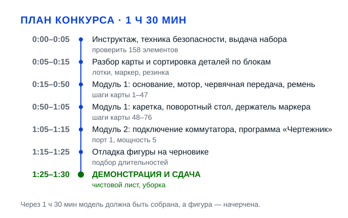
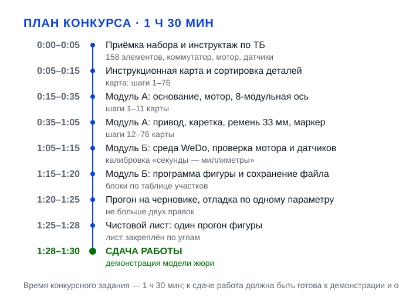
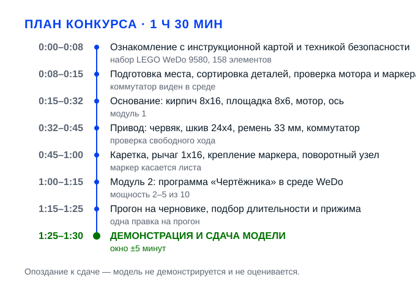

Робототехника (Лего) (ФВ)
Задания ниже — официальные файлы «Абилимпикс» (источник: abilympics-russia.ru), разложенные по категориям. Решения написаны по тексту задания, регламенту и критериям оценки; в них указано, что именно проверяет эксперт.
Школьник
14–16 лет, базовый уровень заданияВ официальном файле категории не разделены отдельными разделами — приводим задание целиком; различия по категориям смотрите в таблице модулей.
Пошаговое решение
Конкурсное задание категории «Школьники» — собрать из одного набора LEGO Education WeDo 9580 робота-чертежника и заставить его самостоятельно начертить заданную геометрическую фигуру закреплённым маркером. В наборе 158 элементов, среди них USB ЛЕГО-коммутатор, мотор, датчик наклона и датчик расстояния; поле — обычный белый лист, на котором робот оставляет след. Работа идёт ровно 1 час 30 минут и делится на два модуля: в первом вы конструируете механизм, во втором программируете его в среде LEGO WeDo. Инструкционная карта описывает сборку по шагам, всего их 76, и называет детали точно: кирпич 8х16, червячное колесо, шкив 24х4 со ступицей, ремень 33 мм, поворотный стол 2х2, зубчатые колёса на 8 и 24 зуба. Оценивают аккуратность, соблюдение техники безопасности, качество механизма и составление программы.

Задача 1. Подготовить место, набор и план сборкиМодуль 1 · окно 0:00–0:15
До первой соединённой детали нужно сделать три вещи: привести в порядок рабочее место, убедиться, что в наборе на месте все ключевые элементы, и разобрать инструкционную карту на понятные куски. Эти минуты не приносят отдельных баллов, но именно они определяют, успеете ли вы пройти 76 шагов сборки и останется ли время на программу и отладку. Из 158 деталей на столе должна лежать каждая, а не «примерно все».
Действие 1.1. Организовать рабочее место
Шаг 1.1.1
Садимся за стол с той стороны, где стоит компьютер, и сразу проверяем три вещи: кресло отрегулировано по высоте так, чтобы предплечья лежали на столешнице, лист бумаги виден целиком без наклона корпуса, а USB-кабель от коммутатора свободно доходит до разъёма и не натягивается через край стола. Убираем всё, что не относится к заданию: телефон, рюкзак, лишние тетради. Проверяем, что розетка и USB-порт доступны, а провод не лежит там, куда вы поставите лоток с деталями.
Рабочее место — отдельная строка перечня оборудования в КЗ: стол с компьютером и ученическое кресло, удобное для длительной работы. КЗ требует освещённости не менее 300 люкс и свободного прохода 1,5 метра между местами, а сидеть за столом придётся полтора часа без перерыва. Неудобная посадка к сороковой минуте даёт ошибку в мелочах, а в сборке из 158 деталей результат держится именно на мелочах.
Проверьте себя по трём признакам: локти на столе без подъёма плеч, колени под столешницей не упираются, тень от корпуса не падает на лист. Кабель лежит свободной петлёй, а не натянутой струной. Если что-то не так — поправьте сейчас, потом будет поздно и неудобно.
Типичная ошибка — поставить лоток с деталями прямо на лист бумаги: детали сдвигают поле, и первый же рисунок уходит в сторону. Вторая — тянуть USB-кабель через стол: при первом же рывке коммутатор слетает с кирпича, а вместе с ним теряется связь с программой.
Эксперт обходит места в первые минуты и отмечает, свободен ли стол, не мешают ли провода соседям и работает ли участник в своей зоне. Во второй раз он смотрит на это же место в середине модуля, когда на столе появляются детали и лотки.
Шаг 1.1.2
Открываем коробку и проверяем комплектность по перечню: 158 элементов, USB ЛЕГО-коммутатор, мотор, датчик наклона, датчик расстояния, а отдельно на столе должны лежать маркер и резинка для его крепления. Коммутатор осматриваем с разъёмов: два порта целые, пластик без трещин, кабель не переломлен у основания. Мотор прокручиваем пальцем за вал — он должен вращаться с заметным сопротивлением редуктора, без хруста и заеданий.
Нехватка одной детали обнаруживается в самом неудачном месте сборки, обычно на шаге 60 из 76, когда перебирать уже нечем. Замена после старта идёт только через эксперта, и время на неё вычитается из ваших 90 минут. Кроме того, критерий «соблюдение техники» включает исправность оборудования: работать с треснувшим коммутатором или переломленным кабелем запрещено.
Считаем по лоткам: детали разложены, количество сходится с перечнем, ничего не укатилось под стол. Коммутатор определяется компьютером — при подключении загорается зелёный индикатор. Мотор при покачивании вала не хрустит.
Самая частая ошибка — не проверить резинку: она рвётся в момент натяжения на маркере, и крепление приходится собирать из того, что есть. Вторая — взять набор, не пересчитав детали, и обнаружить нехватку на этапе установки шкива.
Эксперт смотрит, как участник принимает оборудование: пересчитывает ли детали по перечню, осматривает ли разъёмы коммутатора и сообщает ли о неисправности сразу, а не в середине сборки. Проверка идёт при выдаче набора, до старта, и повторно при подключении коммутатора к компьютеру.
Шаг 1.1.3
Размечаем стол на три зоны. Слева — лоток с рассортированными деталями, ближе к левой руке, чтобы не тянуться через всё поле. В центре — лист бумаги и рядом черновик, на котором будете проверять маркер и первые прогоны. Справа — компьютер и коммутатор. Инструкционную карту ставим перед собой так, чтобы текущий шаг был виден без наклона, и сразу закладываем её страницу пальцем или зажимом, иначе она закрывается в самый нужный момент.
Зоны нужны не для красоты: сборка идёт в темпе примерно один шаг в минуту, и каждая лишняя секунда на поиск детали умножается на 76 шагов. Аккуратность рабочего места входит в критерии оценки, а разложенные по типам детали ещё и экономят время на переборку, когда механизм придётся переделывать.
Проверьте: детали не лежат на листе, карта не закрывает поле, черновик под рукой, коммутатор не висит на весу. Рука до лотка доходит без наклона корпуса, а до клавиатуры — без переноса веса. Если приходится тянуться через лист к дальнему углу, переставьте лоток, а не тянитесь.
Ошибка — свалить всё в одну кучу в центре стола: через десять минут в ней невозможно найти нужную ось, и сборка встаёт. Вторая — положить карту под лоток, а потом искать нужный шаг по памяти. Третья — поставить лоток так, что он нависает над краем стола: первая же упавшая деталь укатится под стол.
Эксперт оценивает организацию места визуально, в том числе в середине работы: по столу видно, работает человек по плану или наугад. Отдельно он отмечает, не занят ли лист бумаги посторонними предметами и осталось ли на столе место для сборки.
Действие 1.2. Разобрать и рассортировать детали
Шаг 1.2.1
Высыпаем набор в лоток и разбираем на группы: длинные кирпичи и пластины, балки, оси, зубчатые колёса и шкивы, втулки и штифты, мелкие соединительные элементы. Крупные детали кладём отдельно от мелочи, иначе штифты проваливаются под кирпичи и их приходится выковыривать. Оси укладываем по длине — 3, 6 и 8 модулей — в три отдельные ячейки, потому что именно их чаще всего путают при сборке.
По карте сборка идёт от крупного к мелкому: сначала кирпич 8х16 и кирпич 8х6, потом балки и оси, и только затем штифты и втулки. Если детали рассортированы, шаг занимает секунды; если нет, на поиск одной втулки уходит минута, а таких втулок в карте больше десятка. Время здесь — прямой ресурс: 90 минут на два модуля.
Проверяем просто: любую названную деталь находим на ощупь за пару секунд, не перебирая кучу. Оси разложены по длине, втулки и штифты в отдельной ячейке, крупные кирпичи не закрывают мелочь. Если на поиск уходит больше пяти секунд, сортировка сделана плохо — переложите детали сейчас.
Классическая ошибка — оставить детали в коробке и доставать по мере надобности: на каждом шаге теряется время, а к середине сборки в коробке образуется каша. Вторая — смешать оси 6 и 8 модулей: разница в два модуля ломает посадку шкива.
Эксперт смотрит на лоток в процессе: по нему видно, сортировал участник детали или работает вслепую. К моменту сборки каретки, то есть примерно к сороковой минуте, разница видна отчётливо: у одного детали разложены по типам, у другого всё смешано.
Шаг 1.2.2
Отдельно выкладываем детали, без которых механизм не заработает: кирпич 8х16 и кирпич 8х6, червячное зубчатое колесо, шкив большой 24х4 со ступицей, ремень 33 мм, поворотный стол 2х2, коронное колесо на 24 зуба, зубчатое колесо на 8 зубов, балки 1х6, 1х8 и 1х16, оси 3, 6 и 8 модулей, кирпичи 1х2 с соединительным штифтом и балку с основанием 2 модуля. Эти детали встречаются в карте по одному разу, и заменить их нечем.
Именно этот набор определяет, будет ли робот чертить или просто крутиться. Червячное колесо даёт большое передаточное отношение и держит каретку от самопроизвольного хода, шкив 24х4 с ремнём 33 мм передаёт вращение на каретку, а поворотный стол 2х2 задаёт качание. Критерий «разработка механизма» оценивает как раз правильность этой кинематики, а не внешний вид модели.
Все перечисленные детали лежат в отдельной ячейке и пересчитаны. Ремень 33 мм эластичный, без трещин и растянутых участков. Поворотный стол вращается свободно, без закусывания, и не разболтан в посадке.
Ошибка — заменить червячное колесо обычным зубчатым «похожего размера»: каретка начинает проворачиваться под собственным весом, и линия на бумаге получается рваной. Вторая — поставить шкив без ступицы: он проворачивается на оси, и ремень не передаёт усилие.
Эксперт проверяет кинематику после сборки, но по лотку видно уже в начале, разобрался ли участник, какие детали ключевые. Он может попросить назвать деталь, передающую вращение, — правильный ответ про червячное колесо и шкив 24х4 говорит о понимании механизма.
Шаг 1.2.3
Готовим то, что не входит в конструктор: маркер и резинку. Маркер проверяем на черновике — ставим точку и проводим короткую линию, чтобы убедиться, что он пишет без нажима и не мажет. Колпачок снимаем и сразу откладываем в сторону, чтобы не искать его потом под деталями. Резинку растягиваем двумя пальцами: она должна тянуться, но не рваться. Лист бумаги осматриваем на просвет — он должен быть ровным, без заломов и пятен.
Маркер и резинка указаны в перечне расходных материалов КЗ отдельными строками, и это не формальность: сухой маркер даёт бледную линию, которую эксперт не засчитает как фигуру, а слабая резинка не удержит корпус маркера при качании. Проверка на черновике занимает полминуты и снимает риск испортить единственный чистый лист.
На черновике остался чёткий след без пропусков и клякс. Резинка возвращается в исходную длину после растяжения. Лист ровный, лежит на столе без волны, углы не загнуты, а на просвет не видно тёмных пятен и заломов.
Типичная ошибка — начать чертить сразу на чистовом листе: маркер с непривычки идёт с нажимом, и первая же линия продавливает бумагу. Вторая — взять маркер с толстым стержнем: линия получается шире, и на пересечении контура фигура выглядит смазанной.
Эксперт обращает внимание на подготовку расходников: пишущий маркер и целая резинка видны сразу, как и следы пробных штрихов на черновике. Если маркер сухой, участник узнает об этом на чистовом листе, и работа останется без рисунка.
Действие 1.3. Разобрать карту и распределить время
Шаг 1.3.1
Читаем инструкционную карту целиком, не начиная сборку. Смотрим на неё как на маршрут: первые шаги — основание из кирпича 8х16 и четырёх кирпичиков, дальше мотор с осью на 8 модулей и червячной передачей, затем шкив 24х4 и ремень 33 мм, потом каретка на поворотном столе, и в конце, на шаге 76, маркер крепится ремнём. Отмечаем карандашом три места, где конструкция переворачивается или снимается с основания: там чаще всего отваливаются плохо защёлкнутые детали.
Карта — официальный документ задания, и в КЗ прямо сказано, что участники получают инструкционную карту с подробным описанием шагов и необходимыми материалами. Чтение целиком занимает три-четыре минуты и экономит десятки минут: зная, что впереди установка ремня, вы не будете защёлкивать балку, которую придётся снимать.
Вы можете пересказать порядок сборки своими словами: основание, мотор, червячная передача, ремень, каретка, маркер. Три отмеченных узла понятны. Если в карте что-то не читается, уточняем у эксперта до старта, а не в процессе.
Ошибка — собирать, глядя только на текущий шаг: через двадцать шагов выясняется, что мотор стоит не с той стороны и его нужно переставлять. Вторая — читать карту по диагонали и пропустить шаг с втулкой, без которой ось болтается.
Эксперт видит, открыта ли карта на нужном шаге и сверяется ли участник с ней по ходу работы. Он также отмечает, уточняет ли участник непонятные места до старта: вопросы задают до начала сборки, а не тогда, когда механизм уже собран наполовину.
Шаг 1.3.2
Делим карту на три блока и под каждый готовим детали. Блок 1 — шаги с 1 по 20: основание, мотор, ось, балки, червячное колесо, шкив. Блок 2 — шаги с 21 по 50: каретка, пластины с отверстиями, обратные кирпичи, поворотный стол. Блок 3 — шаги с 51 по 76: вертушка, балки 1х16 и 1х8, держатель и маркер на ремне. Детали каждого блока держим в своей ячейке и не смешиваем.
Такое деление совпадает с логикой механизма: сначала силовая часть, потом подвижная каретка, потом узел крепления маркера. Когда детали сгруппированы по блокам, переделка одного узла не превращается в поиск по всему набору. На переборку узла в среднем уходит пять-семь минут, и их лучше не тратить на поиск.
Проверьте: в каждой ячейке лежит комплект своего блока, при переходе к следующему блоки не смешиваются. Названия деталей из карты вы находите в ячейке сразу, без перебора, и можете сказать, каких деталей в блоке больше всего.
Частая ошибка — разложить детали по цвету: красиво, но бесполезно, потому что в карте важен размер и тип, а не цвет. Вторая — держать всё в одном лотке и разделять мысленно, а на деле перебирать кучу на каждом шаге.
Эксперт оценивает аккуратность и организацию работы, в том числе по тому, как разложены детали к моменту сборки каретки. Порядок на столе он смотрит и в конце, при сдаче: разложенные детали разбираются быстрее и сдаются без недостачи.
Шаг 1.3.3
Расписываем время по окнам и ставим ориентиры. На подготовку и сортировку — 15 минут, до 0:50 собираем силовую часть с мотором и ремнём, до 1:05 ставим каретку и маркер, до 1:15 подключаем коммутатор и пишем первую программу, до 1:25 отлаживаем фигуру на черновике, последние пять минут — демонстрация и сдача. Ориентиры записываем на черновике крупно, чтобы видеть их боковым зрением, и сверяемся с ними на каждом переходе между блоками.
90 минут на два модуля — жёсткая рамка КЗ, и она не растягивается. Практика такая: сборка съедает больше, чем кажется, а программа пишется быстрее, чем ожидаешь, поэтому резерв нужно оставлять на отладку. Без ориентиров легко уйти в бесконечное усовершенствование механизма и остаться без рисунка.
К 0:50 механизм с мотором собран и крутится от руки, к 1:05 маркер стоит на месте, к 1:25 на черновике есть замкнутый контур. Если отстаёте больше чем на пять минут — упрощайте узел, а не ускоряйтесь в ущерб аккуратности.
Ошибка — планировать «как получится» и спохватываться за десять минут до сдачи, когда программа ещё не написана. Вторая — потратить всё время на механизм и оставить программу на последние минуты. Третья — не оставить резерв на отладку: без него первый же неудачный прогон съедает время демонстрации.
Эксперт по ходу работы видит, укладывается ли участник в этапы, и фиксирует готовность к демонстрации к концу окна. Если к 1:25 модель не собрана, работа оценивается по тому, что успели, поэтому ориентиры нужно держать перед глазами.
Задача 2. Модуль 1. Собрать основание, привод и подключить коммутаторМодуль 1 · окно 0:15–0:50
Силовая часть модели собирается первой, потому что всё остальное крепится на неё. Нужно получить жёсткое основание из кирпича 8х16 и кирпича 8х6, поставить на него мотор, передать вращение через червячное колесо на шкив 24х4 и замкнуть поток ремнём 33 мм, а затем закрепить ЛЕГО-коммутатор так, чтобы провода не попадали в зону вращения. Ошибка в этом узле не видна на столе, но проявляется сразу: каретка дёргается, ремень соскакивает, линия выходит дрожащей.
Действие 2.1. Собрать жёсткое основание
Шаг 2.1.1
Берём кирпич 8х16 и кладём его на стол шероховатой стороной вниз, шипами вверх. На него ставим четыре кирпичика так, как показано на первых шагах карты: два ближе к левому краю, два ближе к правому, с равным промежутком между парами. Прижимаем каждый до щелчка, а не до «вроде село» — щелчок слышно, и именно он означает, что шипы вошли в полную глубину. Сверху на эти четыре кирпичика защёлкиваем кирпич 8х6 и проверяем, что он сел без перекоса.
Основание — фундамент всей модели: на нём держатся мотор, каретка и держатель маркера, и любая подвижная часть опирается на него. Если кирпич 8х6 сел на один ряд шипов вместо двух, конструкция играет при каждом обороте мотора, и линия на бумаге получается волнистой. Критерий «разработка механизма» оценивает работоспособность узла, а не его вид, и расшатанное основание — первая причина незачётной геометрии.
Возьмите собранное основание двумя руками за края и попробуйте слегка скрутить вокруг вертикальной оси: люфта быть не должно. Переверните и посмотрите на нижнюю плоскость — все четыре кирпичика утоплены одинаково, без зазора с одной стороны. Кирпич 8х6 не выступает за габарит 8х16.
Ошибка — поставить четыре кирпичика с одного края: основание получается консольным, и при работе мотор наклоняет его вперёд. Вторая — недожать кирпич 8х6: он держится на трении, а при первом же рывке ремня отходит, и вся верхняя часть съезжает.
Эксперт проверяет основание на прочность после сборки, взяв модель за верхнюю часть: если конструкция разваливается в руках, дальше он смотреть не станет.
Шаг 2.1.2
На шагах с 13 по 17 карты к основанию добавляется узел из одного кирпича, двух балок 1х2, кирпича 2х3/25 и петли 1х2. Соединяем их точно по рисунку: балки 1х2 ставятся на кирпич параллельно друг другу, кирпич 2х3/25 перекрывает их сверху, петля 1х2 заходит в паз и работает как шарнирная площадка. Затем конструкцию с мотором снимаем с основания, подкладываем пластину 2х4, соединяем и возвращаем весь узел на кирпич 8х16.
Петля 1х2 — единственный шарнир в модели, и она задаёт подвижность каретки. Если поставить её не той стороной, узел перестаёт качаться и маркер либо царапает бумагу, либо висит над ней. Пластина 2х4 под мотором нужна как проставка: без неё вал мотора оказывается ниже оси червячной передачи, и зубья не входят в зацепление.
Проверяем петлю пальцем: она поворачивается с небольшим усилием и возвращается обратно, не закусывая. Пластина 2х4 стоит ровно, без свеса. Весь узел после установки на 8х16 не шатается при нажатии на мотор.
Типичная ошибка — защёлкнуть петлю наглухо, приняв её за обычный кирпич: узел теряет подвижность, и робот чертит одну прямую вместо фигуры. Вторая — поставить пластину 2х4 поверх шипов, а не в паз, из-за чего мотор стоит с перекосом в два-три градуса.
Эксперт обращает внимание на подвижные узлы: петля и поворотный стол должны двигаться от руки, а не отвёрткой. Если узел зажат наглухо, он отмечает это как ошибку в разработке механизма, даже когда внешне модель выглядит правильно.
Шаг 2.1.3
Проверяем основание на плоскость и устойчивость. Ставим модель на ровную поверхность стола и смотрим на просвет под краями: зазор должен быть одинаковым по всей длине, а не только с одной стороны. Нажимаем пальцем поочерёдно на четыре угла — модель не должна качаться, как стул с короткой ножкой. Если качается, ищем недожатую деталь и перещёлкиваем её, а не подкладываем бумажку.
Каретка с маркером весит немного, но при качании люфт основания превращается в вертикальное биение маркера, и линия получается прерывистой. Кроме того, устойчивое основание нужно для точной установки высоты маркера: если модель качается, выставить зазор в доли миллиметра невозможно, а именно от него зависит, будет ли след ровным.
Модель стоит на столе без качания, зазор под краями одинаковый, при нажатии на углы не слышно щелчков расходящихся деталей. Проверьте на том же столе, где будет стоять лист: поверхность должна быть ровной.
Ошибка — проверять устойчивость на листе бумаги: он пружинит и маскирует качание. Вторая — оставить в основании лишнюю деталь, которая цепляет стол и приподнимает один край, из-за чего модель стоит с наклоном в два-три градуса.
Эксперт ставит модель на поле и смотрит, не качается ли она при первом включении мотора. Качание видно по следу: линия получается прерывистой, а маркер в местах наклона оставляет точки вместо штрихов.
Действие 2.2. Поставить мотор и червячную передачу
Шаг 2.2.1
Ставим мотор на подготовленные кирпичи так, чтобы его вал смотрел в сторону будущей каретки, а разъём для кабеля оставался доступным сверху. Мотор садится на шипы до упора, корпус не должен выступать за габарит основания. Затем берём ось на 8 модулей и вставляем её в отверстие вала мотора до конца: ось входит с усилием и фиксируется, но не должна выходить с другой стороны вала больше чем на один модуль.
Мотор — единственный источник движения в модели, и его положение задаёт всю кинематику. Если вал смотрит не туда, червячное колесо окажется сбоку, и передача не соберётся. Ось на 8 модулей выбрана в карте не случайно: на ней помещаются балка 1х6, втулка, червячное колесо, вторая втулка и вторая балка — то есть весь узел передачи с запасом на посадку.
Ось сидит в валу плотно, не проворачивается от руки при выключенном моторе и не выпадает при лёгком потягивании. Мотор защёлкнут на кирпичах без зазора, кабель не зажат корпусом, разъём смотрит вверх и доступен для подключения.
Ошибка — вставить ось до половины: под нагрузкой она выходит из вала, и мотор крутится вхолостую, а робот стоит. Вторая — поставить мотор разъёмом вниз, после чего кабель невозможно подключить, не разобрав узел.
Эксперт проверяет посадку оси и доступ к разъёму мотора перед подключением коммутатора. Если ось вставлена наполовину, он увидит это сразу: вал выступает с обратной стороны неравномерно, а ось качается в посадке.
Шаг 2.2.2
На ось насаживаем по порядку, как в карте: сначала балку 1х6, затем втулку вплотную к ней, потом червячное зубчатое колесо, снова втулку и вторую балку 1х6. Втулки ставятся так, чтобы червячное колесо не болталось вдоль оси: одна втулка подпирает его слева, вторая справа, зазор с каждой стороны — не больше толщины бумажного листа. Балки 1х6 при этом служат стойками, которые удерживают ось параллельно основанию.
Червячное колесо — ключевая деталь передачи: оно даёт большое передаточное отношение, то есть мотор крутится быстро, а каретка движется медленно и плавно. Именно поэтому линия получается ровной. Если колесо сидит свободно и гуляет по оси, оно смещается относительно ответного зубчатого колеса, зацепление срывается, и каретка дёргается рывками.
Прокрутите ось от руки: червячное колесо вращается вместе с ней, не проскальзывая, и не задевает балки. Продольный люфт проверяется пальцем — колесо не сдвигается вдоль оси больше чем на полмиллиметра. Втулки прижаты к балкам без зазора.
Ошибка — поставить обе втулки с одной стороны: колесо гуляет по оси, и зацепление работает через раз. Вторая — зажать червячное колесо втулками наглухо: ось начинает туго вращаться, мотор перегревается и при долгой работе отключается.
Эксперт проворачивает передачу рукой и слушает: ровное шуршание без щелчков и заеданий — признак правильной сборки. Он также смотрит на втулки: если обе стоят с одной стороны, червячное колесо гуляет по оси и зацепление работает через раз.
Шаг 2.2.3
Собираем ответную часть зацепления — узел на шагах с 18 по 26 карты. Берём пластину с отверстием 2х6, ось на 8 модулей, малое зубчатое колесо на 8 зубов, соединительный штифт с втулкой, втулку и большое зубчатое колесо на 24 зуба. Штифт с втулкой вставляем в большое колесо, колесо надеваем на ось, ставим втулку, затем пластину 2х6 и малое колесо на 8 зубов. Собираем две балки с пластинами 1х4 и закрепляем узел на основании.
Здесь работает пара «червяк — колесо на 24 зуба»: червячное колесо передаёт вращение на большое, а малое на 8 зубов служит для точной подстройки положения. Такая схема даёт медленный и равномерный ход каретки — то, что нужно для непрерывной линии. Если перепутать колёса местами, скорость вырастет втрое, и маркер начнёт рвать бумагу.
Собранный узел вращается от руки плавно, зубья входят в зацепление по всей ширине, без перекоса. Малое колесо на 8 зубов сидит на оси плотно. Пластина 2х6 не выступает за габарит узла и не цепляет соседние детали при вращении.
Частая ошибка — поставить малое колесо на 8 зубов вместо большого на 24: передаточное отношение меняется, и каретка успевает проскочить нужную точку. Вторая — не поставить втулку между колесом и пластиной, из-за чего колесо трётся о пластину и выдаёт скрип.
Эксперт смотрит на зацепление при первом включении: правильно собранная пара идёт тихо и без люфта. Он может попросить показать, какое колесо ведущее, а какое ведомое, — по ответу видно, понимает ли участник, как работает понижение.
Шаг 2.2.4
Проверяем всю передачу в сборе, пока она ещё не нагружена кареткой. Прокручиваем ось мотора от руки на полный оборот: червячное колесо должно вести большое колесо на 24 зуба, а то, в свою очередь, малое на 8 зубов — без проскальзывания и без остановок. Считаем обороты: на один оборот мотора каретка должна сдвигаться заметно меньше, чем на оборот вала, — это признак того, что понижение работает.
Проверка на холостом ходу ловит ошибку до того, как она проявится на бумаге. Если передача где-то подклинивает, мотор при работе будет дёргаться, а линия получится с утолщениями в местах остановок. Понижающая передача — это ещё и защита: слабый мотор WeDo не может провернуть заклинивший узел и просто останавливается, а вы теряете время на поиск причины.
Полный оборот оси проходит без заеданий, зубья не проскакивают, посторонних щелчков нет. Вал мотора проворачивается с равномерным усилием по всей окружности, без участков тугого хода. Если где-то усилие резко возрастает, там перекос — найдите его до установки каретки.
Ошибка — оставить перекос осей: червячное колесо входит в зацепление только краем, и при нагрузке зубья слизываются. Вторая — не проверить холостой ход и обнаружить клин только после установки каретки, когда разбирать уже дорого.
Эксперт проверяет передачу до подключения питания, чтобы отделить механические проблемы от программных. Такой порядок экономит время и ему, и участнику: сначала механика, потом программа, а не наоборот.
Действие 2.3. Поставить шкив, ремень и коммутатор
Шаг 2.3.1
Берём шкив большой 24х4 со ступицей и закрепляем его на той же оси на 8 модулей, свободный конец которой остался после червячной передачи. Шкив ставится ступицей к балке, ремнём наружу, и фиксируется так, чтобы его канавка оказалась точно напротив втулки, к которой пойдёт ремень. Проверяем: шкив не касается балки 1х6, зазор между ними — не меньше толщины втулки.
Шкив 24х4 — выход всей передачи, именно с него усилие уходит на каретку. Ступица нужна для жёсткой посадки на ось: без неё шкив проворачивается под нагрузкой, и каретка останавливается, хотя мотор работает. Если шкив трётся о балку, мотор тратит мощность на трение, и ремень проскальзывает.
Шкив сидит на оси без люфта, проворачивается только вместе с осью. Канавка шкива свободна и не перекрыта соседними деталями. При прокрутке от руки шкив не задевает балку и не издаёт скрипа, а канавка чистая, без заусенцев от неаккуратной посадки.
Ошибка — поставить шкив ступицей наружу: ремень идёт с перекосом и соскакивает на первом же обороте. Вторая — зажать шкив втулкой слишком сильно, так что он начинает тереться о балку. Третья — поставить шкив не на ту ось, и тогда ремень просто не дотягивается до втулки.
Эксперт проверяет посадку шкива и то, свободно ли он вращается вместе с осью. Перекошенный шкив он замечает по ремню: тот идёт не по центру канавки, а прижимается к одному борту.
Шаг 2.3.2
Натягиваем ремень 33 мм между втулкой и шкивом 24х4, как показано на шагах 46 и 47 карты. Ремень надеваем сначала на шкив, затем, слегка растянув, заводим на втулку и проверяем, что он лежит в канавке, а не на её краю. Натяжение должно быть таким, чтобы ремень не провисал, но и не сдвигал втулку с места: проверяем пальцем — прогиб не больше миллиметра при лёгком нажатии.
Ремень 33 мм — самый уязвимый элемент модели. Перетянутый, он создаёт лишнюю нагрузку на мотор и втулку, и через несколько минут работы начинает сползать; недотянутый проскальзывает, и каретка движется рывками. И то и другое превращает ровную линию в пунктир, а критерий оценки требует именно аккуратной геометрической фигуры.
Ремень лежит в канавке по всей окружности шкива, не сходит при прокрутке на два-три оборота, прогиб в середине пролёта не больше миллиметра. При прокрутке шкива втулка вращается без проскальзывания. После трёх оборотов ремень должен стоять на том же месте, где его надели.
Ошибка — натянуть ремень «поэтому что так надёжнее»: втулка перекашивается, ремень трётся о её борт и рвётся. Вторая — оставить ремень на краю канавки: при первом же обороте он соскакивает и наматывается на ось.
Эксперт обращает внимание на ремень в момент первого прогона: соскочивший ремень виден сразу и говорит о небрежной сборке. Он также оценивает натяжение: перетянутый ремень заметно тормозит вал мотора при прокрутке рукой.
Шаг 2.3.3
Крепим ЛЕГО-коммутатор на основание, как на шаге 12 карты: он ставится на свободные шипы рядом с мотором, разъёмами вверх и в сторону, доступную для кабеля. Моторный кабель укладываем в порт 1 до щелчка, кабель USB — в разъём коммутатора. Провода укладываем вдоль основания и слегка фиксируем между деталями, но не натягиваем: петля должна оставаться свободной.
Коммутатор — мозг модели: через него компьютер управляет мотором, и без него программа не запустится. Порт 1 выбран потому, что именно к нему по умолчанию обращается блок мотора в среде WeDo. Провод, попавший в зону вращения шкива или ремня, через несколько оборотов наматывается на ось и вырывает разъём — это самая обидная поломка, потому что механизм уже собран.
Коммутатор защёлкнут на основании, разъёмы вставлены до щелчка, провода лежат вне зоны вращения и не натянуты. При подключении к компьютеру загорается зелёный индикатор — значит, связь есть. Провод проверяем пальцем: он должен лежать вдоль основания, а не пересекать зону шкива.
Ошибка — оставить кабель висеть над шкивом: при первом обороте его затягивает под ремень. Вторая — вставить мотор в порт 2 и забыть об этом, а потом искать причину, почему программа не работает. Третья — защемить кабель между кирпичами: при работе он перетирается, и связь пропадает.
Эксперт проверяет подключение перед программированием: индикатор на коммутаторе и номер порта — первое, что он смотрит. Если мотор включён в порт 2, а программа обращается к первому, он отметит это как ошибку настройки, а не как поломку.
Шаг 2.3.4
Проверяем весь силовой тракт под нагрузкой: подключаем коммутатор к компьютеру, открываем среду WeDo и коротким тестовым блоком включаем мотор на малую мощность. Смотрим на шкив: он должен вращаться ровно, ремень — оставаться в канавке, а из узла не должно доноситься щелчков. Через пять-десять секунд выключаем мотор и проверяем нагрев: корпус мотора тёплый, но не горячий.
Это первая проверка под нагрузкой, и она показывает, собран ли тракт правильно. Если мотор гудит, а шкив стоит — где-то заклинило; если шкив крутится, а ремень не двигается — ремень проскальзывает. Лучше найти это сейчас, когда у вас в запасе больше часа, чем на демонстрации при эксперте.
Шкив вращается ровно, без биения, ремень идёт по канавке, посторонних звуков нет, мотор не перегревается за десять секунд. После выключения вал проворачивается от руки с прежним усилием. Положите руку на корпус мотора через полминуты работы: он должен быть тёплым, но не горячим.
Ошибка — гонять мотор на полной мощности «для проверки»: незакреплённая каретка или свободный ремень слетают, и узел приходится собирать заново. Вторая — не проверить нагрев и сжечь мотор на длинном прогоне.
Эксперт может подойти в момент первой проверки и оценить, как участник обращается с оборудованием. Он смотрит, не гоняет ли участник мотор на полной мощности вхолостую и проверяет ли нагрев после прогона.
Задача 3. Модуль 1. Собрать каретку, вертушку и держатель маркераМодуль 1 · окно 0:50–1:05
Подвижная часть — это то, ради чего собирается вся модель: каретка должна качаться в двух плоскостях, а маркер — идти по бумаге с одинаковым нажимом. Здесь ставятся поворотный стол 2х2, коронное колесо на 24 зуба, балки 1х16 и 1х8, кирпичи 1х2 с соединительным штифтом и ремень 33 мм, который удерживает сам фломастер. Именно на этом этапе чаще всего выясняется, что механизм собран жёстко и чертит одну дугу вместо фигуры.
Действие 3.1. Собрать каретку на поворотном столе
Шаг 3.1.1
Берём два кирпича 2х6 и две пластины с отверстиями 2х8, соединяем пластины между собой и ставим их на кирпичи, как на шагах с 27 по 30 карты. Полученную площадку крепим к основанию так, чтобы она нависала над листом бумаги, но не касалась стола, и прижимаем по всей длине до щелчка, а не только по краям. Сразу проверяем, что под площадкой остаётся просвет не меньше толщины листа плюс два-три миллиметра.
Площадка каретки — это рама, на которой держится весь рисующий узел. Она обязана быть жёсткой: две пластины 2х8, соединённые вместе, дают длинную базу и не прогибаются под весом балок 1х16. Если площадка собрана на одном ряду шипов, при качании она играет, и маркер выписывает на бумаге петли вместо прямой.
Возьмите площадку за дальний край и нажмите вниз: прогиба быть не должно. Просвет под ней одинаковый по всей длине, пластины 2х8 лежат в одной плоскости, без ступеньки на стыке. Проведите пальцем по стыку — он должен быть гладким, без выступающих кромок.
Ошибка — закрепить площадку только с одной стороны: она работает как консоль и при нагрузке опускается, прижимая маркер к бумаге. Вторая — поставить пластины 2х8 со сдвигом на один шип, из-за чего на стыке образуется ступенька и каретка идёт с рывком.
Эксперт проверяет жёсткость рамы руками, прежде чем смотреть на движение. Если рама играет, он сразу понимает, что линия на бумаге будет волнистой, и дальше оценивает работу уже с поправкой на это.
Шаг 3.1.2
Собираем поворотный узел: берём 6-модульную ось, пластину с отверстием 2х6, коронное зубчатое колесо на 24 зуба, кирпич 1х4, круглый кирпич 2х2, втулку и балку 1х2. На ось надеваем круглый кирпич, затем втулку, пластину 2х6 и коронное колесо; к пластине крепим балку 1х2 и кирпич 1х4. Собранный узел ставим на площадку каретки и закрепляем кирпичом 1х4.
Коронное колесо на 24 зуба — это узел поворота: оно цепляется с шестернёй привода и заставляет каретку разворачиваться, а не просто качаться. Круглый кирпич 2х2 работает как подшипник скольжения, втулка задаёт осевой зазор. Без этого узла робот сможет чертить только дугу постоянного радиуса, а фигура по заданию требует смены направления.
Коронное колесо вращается на оси свободно, без закусывания, но и без продольного люфта больше полумиллиметра. Зубья колеса не задевают площадку и балку 1х2. Узел не разваливается, если приподнять модель за каретку.
Ошибка — поставить коронное колесо зубьями вверх вместо зацепления с шестернёй: поворот не передаётся, и каретка стоит на месте. Вторая — затянуть втулку так, что колесо начинает тереться о пластину и мотор не проворачивает узел.
Эксперт проворачивает поворотный узел рукой и оценивает плавность хода. Закусывание или, наоборот, слишком свободный ход он отмечает как ошибку сборки, потому что от этого зависит, замкнётся ли контур фигуры.
Шаг 3.1.3
Собираем вертушку на шагах с 48 по 56 карты: две пластины с отверстиями 2х6 и две 2х8, обратный кирпич 2х3/25, две пластины 2х4, кирпич 2х2, два обратных кирпича 2х3/25, четыре кирпича 2х2/25 и два обратных кирпича 2х2/25. Две пластины 2х4 скрепляем вместе кирпичом 2х2, прикрепляем обратные кирпичи сверху и снизу, затем навешиваем пластины 2х8 и 2х6 и закрываем их кирпичами 2х2/25. Готовую вертушку ставим на общую конструкцию.
Обратные кирпичи в этой сборке — не украшение: они позволяют крепить детали снизу, не переворачивая модель, и создают второй ярус, на котором каретка ходит над бумагой. Именно за счёт этого яруса маркер оказывается выше листа и может двигаться, не задевая основание. Критерий «разработка механизма» учитывает, что узлы соединены по назначению, а не набраны для вида.
Вертушка сидит на конструкции плотно, при нажатии не продавливается, обратные кирпичи не выступают за габарит. При покачивании каретки нет щелчков расходящихся деталей. Пластины 2х8 и 2х6 лежат в одной плоскости.
Ошибка — перепутать обратный кирпич с обычным: он не защёлкивается на шипах и держится только на трении, поэтому узел разваливается при первом движении. Вторая — поставить кирпичи 2х2/25 не по схеме, из-за чего ярус получается с перекосом и каретка идёт боком.
Эксперт осматривает второй ярус: перекос виден сразу по зазору между пластинами. Он также проверяет, не выступают ли обратные кирпичи за габарит, — выступающая деталь цепляет каретку при движении.
Действие 3.2. Собрать держатель маркера
Шаг 3.2.1
Берём кирпич 2х6, три круглых кирпича, три кирпича 2х2, обратный кирпич 2х2/25, три балки с шипами и отверстиями, пластину 2х4, кирпич 1х2 с соединительным штифтом и поворотный стол 2х2 — это шаги с 57 по 64 карты. Собираем основание держателя: на кирпич 2х6 ставим пластину 2х4, сверху прикрепляем ранее собранную конструкцию, затем две балки с шипами и отверстиями, а кирпич 1х2 с соединительным штифтом и балку соединяем поворотным столом 2х2.
Поворотный стол 2х2 — вторая степень свободы модели: он позволяет держателю отклоняться в сторону, и маркер описывает кривые, а не одну прямую. Круглые кирпичи работают как опоры скольжения, балки с шипами и отверстиями задают плечо. Вместе это даёт фигуру, а не отрезок.
Поворотный стол поворачивается от руки с заметным, но небольшим усилием и возвращается в нейтраль. Держатель не болтается в посадке стола. Балки с шипами стоят параллельно, без перекоса, а ход на полную амплитуду одинаков в обе стороны.
Ошибка — защёлкнуть поворотный стол вместо установки в паз: он теряет подвижность, и робот чертит прямую. Вторая — поставить балки с шипами в разные отверстия, из-за чего держатель перекошен и маркер идёт по косой.
Эксперт проверяет подвижность держателя до установки маркера: узел должен ходить от лёгкого толчка. Если держатель зажат, он видит это по тому, что участник проворачивает его с усилием.
Шаг 3.2.2
Собираем плечо держателя из балок 1х16 и 1х8, пластины 1х8 и двух кирпичей 1х2 с соединительным штифтом — шаги с 68 по 75 карты. К балке 1х16 крепим два кирпича 1х2 с соединительным штифтом, к ним — балку 1х8 и пластину 1х8. К конструкции прикрепляем балку с основанием 2 модуля и закрепляем её на основе, а балки соединяем соединительным штифтом с втулкой — этот штифт работает как ось качания плеча.
Балка 1х16 — самое длинное плечо в модели, и её длина определяет размах рисунка: чем длиннее плечо, тем шире фигура при том же угле качания. Соединительный штифт с втулкой задаёт ось, вокруг которой плечо ходит; если штифт вставлен не до конца, плечо перекашивается и маркер уходит в сторону от линии.
Плечо качается вокруг штифта свободно, без люфта вдоль оси. Балка 1х16 не задевает каретку и мотор при полном ходе, а на полном ходе не касается проводов коммутатора. Соединительный штифт с втулкой сидит до упора, втулка не проворачивается на штифте.
Ошибка — вставить штифт только в одну балку: плечо держится на честном слове и отваливается при первом качании. Вторая — поставить балку 1х16 так, что она цепляет шкив, и мотор начинает тормозить. Третья — взять слишком короткую балку: плечо не достаёт до листа, и маркер висит в воздухе.
Эксперт проверяет ход плеча на полную амплитуду, прежде чем разрешить установку маркера. Он смотрит, не цепляет ли балка 1х16 шкив или провода: любое касание превращается в рывок при движении.
Шаг 3.2.3
Проверяем собранный узел без маркера: берём модель за основание, наклоняем её на десять-пятнадцать градусов в разные стороны и смотрим, что каретка и держатель двигаются свободно, а не заваливаются под собственным весом. Затем прокручиваем привод от руки на полный цикл: плечо должно пройти всю амплитуду, не встречая препятствий, и вернуться в исходное положение.
Свободный ход без маркера — это проверка кинематики в чистом виде. Если узел идёт туго сейчас, с маркером и нажимом на бумагу он встанет совсем. Если узел, наоборот, болтается, маркер будет прыгать, и линия получится с разрывами. Нужна золотая середина: движение от лёгкого усилия и никакого самопроизвольного хода.
Полный цикл проходит без остановок, плечо возвращается в исходное положение с точностью до пары миллиметров. При наклоне модели каретка не заваливается. Ни одна деталь не цепляет соседнюю, и узел идёт без усилия — если чувствуется трение, ищите его, а не смазывайте.
Ошибка — оставить узел с самопроизвольным ходом: под весом маркера каретка сама опускается и прижимает его к бумаге так, что лист рвётся. Вторая — не проверить полный цикл и обнаружить упор только при программировании.
Эксперт оценивает плавность хода узла и отсутствие люфтов. Он может покачать каретку пальцем: свободный ход больше двух-трёх миллиметров означает, что маркер будет прыгать по бумаге.
Действие 3.3. Закрепить маркер и выставить высоту
Шаг 3.3.1
Ставим маркер в держатель и фиксируем его ремнём 33 мм, как на шаге 76 карты. Ремень надеваем на корпус маркера и на балку держателя, следя, чтобы он лёг в канавку и не перекрывал колпачок. Маркер вставляем стержнем вниз, перпендикулярно листу, и слегка подтягиваем ремень: он должен держать фломастер так, чтобы тот не проворачивался и не выезжал вверх при качании.
Ремень 33 мм в этой сборке работает как пружинный зажим: он одновременно удерживает маркер и позволяет ему слегка пружинить на неровностях. Жёсткое крепление из кирпичей здесь не подходит — маркер либо ломается, либо продавливает бумагу. В КЗ маркер и резинка вынесены в перечень расходных материалов именно потому, что от этого узла зависит качество линии.
Маркер держится в держателе без люфта, стержень смотрит вниз строго вертикально. При нажатии пальцем на корпус маркер пружинит и возвращается в исходное положение. Ремень не перекрывает колпачок и не мешает снятию.
Ошибка — натянуть ремень слишком сильно: маркер теряет пружинность, и на малейшей неровности лист рвётся. Вторая — закрепить маркер под углом: линия получается косой, а контур фигуры не замыкается. Третья — натянуть ремень так, что он перекрывает колпачок, и снять маркер для проверки уже невозможно.
Эксперт смотрит на крепление маркера: перекошенный стержень виден и на модели, и на рисунке. Он также проверяет, не перекрыт ли колпачок ремнём, — если маркер нельзя снять за секунду, узел собран неверно.
Шаг 3.3.2
Выставляем высоту маркера над листом. Кладём лист на стол, ставим модель так, чтобы маркер оказался над бумагой, и опускаем держатель до касания: кончик стержня должен едва касаться поверхности, оставляя точку без нажима. Затем поднимаем держатель настолько, чтобы между стержнем и листом проходил уголок листа бумаги, и фиксируем это положение. Проверяем на черновике: линия должна быть ровной, без пропусков и без продавливания.
Высота маркера — самый точный параметр во всей модели, и он измеряется не на глаз, а по следу. Слишком низко — стержень цепляется за бумагу, мотор буксует, линия рвётся; слишком высоко — маркер не пишет, и на листе остаётся пунктир. Критерий «аккуратность» оценивает именно качество линии, а не только её наличие.
На черновике остаётся непрерывная линия одинаковой толщины, бумага не продавлена, стержень не скрипит. Приподнимите модель и поставьте обратно на то же место — след должен продолжиться без разрыва. Проведите пальцем по линии: она должна быть сухой и не пачкать.
Ошибка — выставить высоту «на глаз» по просвету: на листе это даёт то пропуски, то продавленный след. Вторая — не проверить на черновике и узнать о проблеме на чистовом листе, когда исправлять уже нечем.
Эксперт проверяет первый след на черновике и оценивает его непрерывность. По толщине линии он понимает, выставлена ли высота: слишком жирный след означает, что маркер прижат к бумаге.
Шаг 3.3.3
Делаем контрольный прогон узла с маркером, но без программы: медленно прокручиваем привод от руки на полный цикл и смотрим, как маркер идёт по черновику. Он должен оставить замкнутую или почти замкнутую линию, не задевая край листа и не уходя за его пределы. Если линия выходит за границы, уменьшаем амплитуду качания, переставив плечо на одно отверстие ближе к оси.
Ручной прогон показывает геометрию рисунка до того, как в дело вмешается программа. На этом этапе видно, помещается ли фигура в лист и замыкается ли контур: если размах слишком велик, никакая программа не поможет. Подбор плеча занимает минуту, а переделка узла после неудачного прогона — десять.
Линия на черновике замкнута или почти замкнута, не выходит за край листа, толщина одинаковая по всей длине. Маркер не задевает детали модели и не цепляет бумагу краем корпуса. Проверьте и обратную сторону листа: она должна остаться чистой.
Ошибка — оставить слишком большой размах: фигура упирается в край листа и обрезается. Вторая — не проверить, задевает ли корпус маркера бумагу: при качании он оставляет широкую мазню рядом с линией. Третья — не проверить, хватает ли хода плечу на крайних точках фигуры.
Эксперт смотрит на контрольный след: по нему видно, будет ли фигура читаемой. Разрывы, петли и мазня рядом с линией говорят о дефекте механизма, а не программы.
Задача 4. Модуль 2. Написать программу «Чертежник» и отладить фигуруМодуль 2 · окно 1:05–1:25
Во втором модуле модель оживает: в среде LEGO WeDo нужно собрать алгоритм, который включает мотор, выдерживает паузы и меняет направление вращения так, чтобы маркер очертил заданную фигуру. Программа называется «Чертежник» и строится из блоков начала, мотора с мощностью и временем работы, паузы и остановки. Главная работа здесь — не написать код, а подобрать длительности: именно они превращают набор блоков в замкнутый контур.
Действие 4.1. Подключить модель и открыть среду
Шаг 4.1.1
Подключаем USB-кабель коммутатора к компьютеру и ждём, пока система определит устройство: на коммутаторе загорается зелёный индикатор, в системе появляется новое устройство ввода-вывода. Открываем среду LEGO WeDo, дожидаемся полной загрузки и проверяем, что в окне программы виден коммутатор и хотя бы один порт. Если индикатор не горит, меняем USB-порт, а не тянем кабель через стол.
Без связи с коммутатором программа не запустится вообще, а самая частая причина — не подключённый или плохо вставленный кабель. Проверка занимает полминуты и избавляет от десятиминутной диагностики в конце модуля. Кроме того, в КЗ прямо указано, что программирование ведётся в среде LEGO WeDo набора 9580, то есть работать нужно именно в ней, а не в стороннем редакторе.
Индикатор на коммутаторе горит зелёным, среда видит устройство, порт 1 отображается активным. При нажатии кнопки проверки мотор коротко дёргается — значит, канал управления работает. Если индикатор не горит, проверьте кабель в другом USB-порту, не трогая настройки среды.
Ошибка — подключать кабель при запущенной среде: устройство не определяется, и участник начинает искать проблему в программе. Вторая — вставить кабель в порт 2, а блоки настроить на порт 1. Третья — подключить коммутатор к выключенному компьютеру и решить, что он не работает.
Эксперт проверяет подключение до начала программирования: горящий индикатор и открытая среда — условие допуска к модулю. Он также смотрит, не перепутаны ли порты, потому что это самая частая причина «неработающей» программы.
Шаг 4.1.2
Создаём новый проект и сразу сохраняем его под именем «Чертежник» — так программа названа в конкурсном задании. Проверяем, что в рабочей области открыта вкладка с блоками, а не с примерами, и что масштаб области позволяет видеть всю цепочку блоков целиком. Рядом на столе держим черновик, на котором будете записывать подобранные длительности, — держать их в голове бессмысленно, их будет не меньше шести.
Имя программы проверяется при сдаче, и переименование в последнюю минуту — лишний риск потерять файл. Запись длительностей на бумаге нужна потому, что подбор идёт перебором: меняя одно значение, легко забыть, при каком был лучший результат, и вернуться на два шага назад.
Проект сохранён под нужным именем, рабочая область пустая и готова к сборке цепочки. На черновике есть таблица: номер блока, мощность, время, результат на листе. Имя файла видно в заголовке окна, а не только в списке сохранений.
Ошибка — работать в чужом или демонстрационном проекте: при сдаче выясняется, что файл называется иначе. Вторая — не записывать параметры и подбирать время заново после каждой правки. Третья — сохранить проект в папку по умолчанию и не найти его при сдаче.
Эксперт смотрит на имя файла и на то, ведёт ли участник записи параметров. Проект с именем «Чертежник» и заполненная таблица на черновике говорят о том, что работа ведётся осознанно, а не на удачу.
Шаг 4.1.3
Проверяем мотор отдельно от механизма: поднимаем модель так, чтобы маркер не касался бумаги, и запускаем один блок мотора на мощности 5 — это середина шкалы, на ней видно и направление, и плавность хода. Смотрим, в какую сторону вращается шкив: по часовой стрелке или против. Это направление и будет «вперёд» в вашей программе, и его нужно записать на черновике, чтобы не путаться дальше.
Направление вращения зависит от того, как вставлен мотор и с какой стороны стоит червячная передача, поэтому угадывать его нельзя. Если перепутать, каретка пойдёт в противоположную сторону и упрётся в ограничитель, а мотор начнёт гудеть на заклинивании. Одна проверка на мощности 5 экономит несколько минут отладки.
При мощности 5 шкив вращается медленно и ровно, каретка двигается плавно, без рывков. Направление записано на черновике. При остановке блока мотор сразу останавливается, без выбега, и вал проворачивается от руки с прежним усилием.
Ошибка — проверять направление на полной мощности: каретка успевает уйти до упора за секунду. Вторая — не записать направление и потом гадать, почему фигура рисуется зеркально. Третья — проверять мотор с надетым маркером: он цепляет бумагу и мешает оценить направление.
Эксперт наблюдает за пробным пуском и оценивает, аккуратно ли участник обращается с моделью. Он отмечает, поднимает ли участник модель перед проверкой, чтобы маркер не испортил лист.
Действие 4.2. Собрать алгоритм «Чертежник»
Шаг 4.2.1
Ставим в рабочую область блок начала — с него всегда стартует программа в среде WeDo. Сразу за ним добавляем блок мотора по часовой стрелке, выставляем мощность 5 и время работы 2 секунды. Пока не усложняем: нужно убедиться, что цепочка из двух блоков запускается и мотор отрабатывает ровно две секунды, а не больше и не меньше. Если мотор не запускается, проверяем блок начала и номер порта, а не переписываем программу.
Блок начала — обязательный элемент: без него среда не запускает цепочку, и это первая причина «программа не работает». Мощность 5 берётся как рабочая середина: на ней мотор не срывается в проскальзывание и в то же время уверенно тянет каретку. Время 2 секунды — стартовое значение, которое дальше будет подбираться под фигуру.
После запуска мотор работает ровно две секунды и останавливается. Секундомер не нужен: по звуку слышно, что цикл короткий и повторяемый. На листе появляется короткий штрих одинаковой длины при каждом запуске.
Ошибка — забыть блок начала и запускать цепочку вручную: в зачёт такое исполнение не идёт. Вторая — поставить мощность 10 «чтобы наверняка»: каретка дёргается, и штрих получается с утолщением в начале.
Эксперт проверяет, есть ли в программе блок начала и соответствует ли мощность заданным условиям. Он также смотрит на время работы первого блока: если оно больше пяти секунд, каретка уходит до упора.
Шаг 4.2.2
Добавляем блок паузы на 1 секунду, затем блок мотора против часовой стрелки с той же мощностью 5 и временем 2 секунды, после него — блок остановки мотора. Получается базовый цикл: вперёд, пауза, назад, стоп. Паузу ставим между движениями, а не после остановки: так маркер успевает оторваться от бумаги. Запускаем и смотрим, что маркер проходит один и тот же отрезок в обе стороны и возвращается примерно в начало.
Пауза между движениями — это не пустая трата времени: она разделяет два штриха и не даёт маркеру смазать точку поворота. Обратный ход нужен, чтобы каретка вернулась и могла начать следующий элемент фигуры с того же места. Без возврата рисунок «уползает» в сторону, и контур не замыкается.
Цикл повторяется без сбоев, маркер возвращается в исходную точку с точностью до двух-трёх миллиметров. Пауза слышна как отчётливая остановка между двумя движениями. Блок остановки действительно выключает мотор.
Ошибка — поставить паузу 0,1 секунды: маркер не успевает оторваться, и на месте поворота остаётся клякса. Вторая — не поставить блок остановки: мотор продолжает работать после окончания программы. Третья — поставить обратный ход с другой мощностью: отрезок назад получается короче, и каретка не возвращается в начало.
Эксперт смотрит на структуру цепочки: наличие паузы и остановки говорит о понимании алгоритма. Он также проверяет, что блок остановки стоит в конце, а не в середине, где он обрывает движение.
Шаг 4.2.3
Собираем повтор: в среде WeDo 1.0 циклов нет, поэтому либо копируем базовый цикл нужное число раз, либо замыкаем его через пару блоков «отправить сообщение» и «получить сообщение». Для фигуры из четырёх элементов хватает четырёх копий цикла, соединённых последовательно. Между копиями оставляем паузу 0,5 секунды, чтобы каретка успевала успокоиться, а порядок блоков в каждой копии держим одинаковым.
Повтор — это то, что превращает один штрих в геометрическую фигуру. Копирование блоков надёжнее сообщений: цепочка читается сверху вниз, и эксперту видно, из чего состоит алгоритм. Сообщения уместны, если элементов много, но на четырёх копиях они только запутывают проверку.
В цепочке ровно столько циклов, сколько элементов в заданной фигуре. При запуске маркер проходит все элементы подряд, без остановки на середине и без лишних движений. Цепочка целиком видна на экране без прокрутки.
Ошибка — скопировать цикл три раза вместо четырёх: фигура остаётся незамкнутой, и эксперту видно, что не хватает одного элемента. Вторая — перепутать порядок «вперёд — назад» в одной из копий, и линия идёт по уже нарисованному.
Эксперт сверяет число элементов в программе с заданной фигурой. Если копий меньше, контур остаётся незамкнутым, и он видит это по рисунку раньше, чем по программе.
Шаг 4.2.4
Задаём скорости так, чтобы разные элементы фигуры рисовались с одинаковой толщиной: для длинных прямых — мощность 5, для коротких участков и поворотов — мощность 3. Проверяем, что при смене мощности мотор не глохнет и не останавливается на середине движения. Время работы каждого блока пересчитываем под новую мощность: на мощности 3 тот же отрезок проходится примерно в полтора раза дольше.
Одинаковая толщина линии — прямой признак аккуратности, а она входит в критерии оценки. На высокой мощности мотор стартует рывком, и в начале каждого элемента появляется утолщение; на слишком низкой каретка останавливается от малейшего сопротивления. Разные мощности для разных участков дают ровный след по всей фигуре.
Все элементы нарисованы линией одинаковой толщины, без утолщений на старте. Мотор не глохнет при переходе с мощности 5 на 3. Время работы пересчитано и записано на черновике, а первые два миллиметра каждого элемента проверены отдельно.
Ошибка — оставить одинаковое время при смене мощности: короткие элементы выходят длиннее длинных. Вторая — поставить мощность 1 в надежде на точность: мотор не проворачивает каретку и останавливается.
Эксперт оценивает равномерность линии на готовом рисунке. Утолщения в начале каждого элемента он читает как слишком высокую мощность, а пропуски — как слишком низкую.
Действие 4.3. Отладить фигуру на черновике
Шаг 4.3.1
Кладём на стол черновик, ставим модель так, чтобы маркер начинал движение внутри листа, и запускаем программу целиком. Смотрим не на модель, а на лист: важно увидеть, замыкается ли контур, не выходит ли линия за край и совпадает ли число элементов с заданием. Первый прогон почти всегда даёт расхождение — это нормально, дальше идёт подбор; делаем его на обратной стороне черновика, чтобы не путать результаты.
Первый прогон — это измерение, а не экзамен. По нему видно, какие параметры врать: если контур не замкнулся, не хватает времени или угла; если линия ушла за край, велик размах. Без первого прогона подбирать нечего, поэтому его нужно делать сразу после сборки цепочки, не дожидаясь «идеальной» программы.
На черновике видна фигура целиком, её форма читается. Записано, какие элементы не сошлись и на сколько миллиметров. Модель при прогоне не сдвинулась с места, а лист не поехал по столу. Проверьте это до подбора параметров, иначе будете править программу из-за съехавшего листа.
Ошибка — сразу запускать программу на чистовом листе: первый прогон почти всегда с дефектами, и лист испорчен. Вторая — смотреть на модель, а не на след, и не замечать, что линия идёт по краю. Третья — запускать программу, не поставив модель на метки, и получить смещённую фигуру.
Эксперт может подойти во время прогона и оценить, как участник читает результат. Он смотрит, сравнивает ли участник рисунок с заданной фигурой или просто ждёт, пока мотор остановится.
Шаг 4.3.2
Подбираем длительности по одному параметру за раз. Если элемент короче нужного, увеличиваем время его блока на 0,3 секунды и повторяем прогон; если длиннее — уменьшаем на 0,3. Меняем только одно значение между прогонами, иначе невозможно понять, что дало эффект. Результат каждого прогона записываем в таблицу на черновике: время, мощность, что получилось.
Подбор по одному параметру — единственный способ не запутаться: при двух одновременных изменениях вы не знаете, какое из них помогло, и откат превращается в угадывание. Шаг 0,3 секунды выбран потому, что он заметно меняет длину штриха, но не перескакивает через нужное значение. Такая таблица пригодится, если механизм придётся пересобрать: параметры восстановятся за минуту.
После каждого прогона на черновике появляется новая линия, и по ней видно направление изменения. В таблице заполнены все строки, лучшее значение отмечено. Отклонение контура от заданной формы сокращается от прогона к прогону.
Ошибка — менять сразу время и мощность: непонятно, что сработало, и приходится начинать подбор заново. Вторая — не записывать результаты и через пять прогонов не помнить исходные значения. Третья — подбирать параметры на чистовом листе, где каждый прогон портит работу.
Эксперт обращает внимание на методичность: таблица параметров говорит о том, что участник понимает, что делает. Он также смотрит, сколько прогонов сделано на черновике, прежде чем рисунок перенесён на чистый лист.
Шаг 4.3.3
Добиваемся замыкания контура: последняя точка фигуры должна совпасть с первой с точностью до двух-трёх миллиметров. Если контур не сходится, проверяем по очереди три причины: не хватает времени последнего блока, сбилась пауза между циклами, каретка при возврате уходит в сторону из-за люфта. Сначала правим время, потом паузу, и только в последнюю очередь лезем в механизм.
Замкнутый контур — главный признак того, что фигура начерчена, а не просто нарисованы линии. Именно замкнутость проверяет эксперт, когда сравнивает полученный рисунок с заданием. Порядок поиска причины важен: время правится за секунды, а разборка механизма занимает минуты, которых в конце модуля нет.
Начальная и конечная точки совпадают, контур читается как замкнутая фигура. Линия не имеет разрывов и двойных проходов. При повторном прогоне результат повторяется с точностью до миллиметра, а точки замыкания совпадают на просвет, а не идут рядом.
Ошибка — сразу разбирать механизм, не проверив время: в девяти случаях из десяти причина в параметрах, а не в сборке. Вторая — оставить контур незамкнутым, решив, что «и так похоже»: фигура не засчитывается.
Эксперт сравнивает рисунок с заданной фигурой именно по замкнутости и числу элементов. Разрыв в два-три миллиметра он ещё готов принять, разрыв в сантиметр — уже нет.
Шаг 4.3.4
Проверяем повторяемость: запускаем программу три раза подряд на новых черновиках и сравниваем результаты. Все три фигуры должны быть одинаковыми по форме и размеру, а каждый прогон начинается с нового листа и с одной и той же точки старта. Если разброс больше трёх-четырёх миллиметров, ищем причину в механике: ослабший ремень, люфт втулки, недожатая балка. Устраняем и снова делаем три прогона.
Повторяемость — это и есть надёжность работы, которую оценивают на демонстрации. Один удачный прогон ничего не доказывает: он мог получиться случайно. Три одинаковых результата означают, что механизм и программа работают стабильно, и на сдаче не будет сюрпризов. Кроме того, стабильность прямо связана с качеством сборки — критерий «разработка механизма».
Три фигуры подряд совпадают по форме, размеру и положению. Разброс не больше трёх-четырёх миллиметров, и измеряете вы его линейкой, а не на глаз. Модель не смещается по столу от прогона к прогону, а ремень остаётся в канавке шкива.
Ошибка — ограничиться одним удачным прогоном и не заметить, что ремень постепенно сползает. Вторая — искать причину разброса в программе, когда дело в ослабшей втулке или недожатой балке. Третья — не проверить ремень после трёх прогонов.
Эксперт при демонстрации может попросить повторить прогон — стабильность видна сразу. Если вторая фигура отличается от первой, он делает вывод о качестве сборки, а не о случайной удаче.
Задача 5. Начертить фигуру на чистовом листе, показать и сдать работуМодули 1 и 2 · окно 1:25–1:30
Финальные пять минут не добавляют новых деталей и блоков, но сохраняют всё уже сделанное. Нужно перенести модель на чистый лист, запустить программу при эксперте, показать, что фигура чертится самостоятельно, и привести рабочее место в порядок вместе с набором. Именно здесь теряются баллы за аккуратность и соблюдение техники, если модель оставить с разбросанными деталями.
Действие 5.1. Выполнить чистовой прогон и показать результат
Шаг 5.1.1
Убираем с листа всё лишнее, кладём чистый лист ровно по краю стола и фиксируем его положение: можно прижать уголки кусочками малярной ленты или просто запомнить, где проходит край. Ставим модель так, чтобы маркер начинал движение в двух-трёх сантиметрах от края, и проверяем, что каретка при полном ходе не выходит за границы листа. Положение модели отмечаем карандашом по углам основания — тогда повторный прогон встанет точно на место.
Чистовой прогон делается один раз, и права на ошибку здесь нет. Смещённый лист или модель, стоящая слишком близко к краю, приводят к тому, что фигура обрезается, и работа оценивается как незавершённая. Метки по углам — простая страховка: если что-то сдвинется, модель можно вернуть в исходное положение за секунды.
Лист лежит ровно, без волны и заломов, его края параллельны краю стола. Маркер в начале движения находится внутри листа с запасом не меньше двух сантиметров. Метки по углам основания нанесены, а углы листа не заходят на стык столешниц.
Ошибка — положить лист на черновик: два слоя бумаги дают пружину, и маркер то продавливает, то не достаёт. Вторая — поставить модель у самого края, и фигура упирается в границу листа. Третья — ставить модель на метки, не проверив, что стол ровный.
Эксперт проверяет положение листа и модели перед запуском. Смещённый лист он замечает по неровному краю фигуры, а модель у края — по обрезанному контуру.
Шаг 5.1.2
Запускаем программу «Чертежник» и отходим на полшага, не трогая модель. Смотрим на лист и на механизм одновременно: линия должна идти непрерывно, каретка — двигаться плавно, ремень — оставаться на шкиве. Руки держим на весу, но не касаемся модели: подталкивать каретку пальцем запрещено, робот по заданию должен быть автономным. Если что-то пойдёт не так, останавливаем программу, а не поправляем каретку на ходу.
Автономность — прямое требование КЗ: робот выполняет задание сам, без посторонней помощи. Любое вмешательство в движение видно эксперту и обесценивает результат, даже если фигура получилась идеальной. Кроме того, спокойное наблюдение позволяет заметить начинающуюся проблему — например, сползающий ремень — и успеть остановить прогон до того, как лист испорчен.
Линия идёт непрерывно от начала до конца фигуры, без разрывов и клякс. Каретка движется плавно, без рывков. Ремень остаётся в канавке шкива, мотор не гудит на заклинивании, модель не смещается по столу.
Ошибка — придержать каретку рукой, чтобы линия получилась ровнее: это нарушение автономности, и результат не засчитывается. Вторая — отвернуться от модели и пропустить момент, когда ремень соскочил. Третья — стоять слишком близко и задевать стол: от толчка модель сдвигается.
Эксперт наблюдает за прогоном целиком и фиксирует, вмешивался ли участник в движение. Даже короткое касание каретки он расценивает как нарушение автономности.
Шаг 5.1.3
После остановки мотора снимаем модель с листа, не сдвигая её, и показываем рисунок эксперту. Кладём лист так, чтобы фигура была видна целиком и не была перевёрнута. Рядом ставим модель, чтобы эксперт мог сверить программу с результатом. Коротко называем фигуру, число элементов и время, за которое робот её чертит, — спокойно, по делу и без оправданий.
Демонстрация — это часть задания, а не формальность: в КЗ она вынесена отдельным пунктом вместе с проверкой качества выполнения работы. Эксперт оценивает аккуратность, качество механизма и программы, и ему нужно видеть и лист, и модель одновременно. Спокойное и точное объяснение без лишних слов добавляет уверенности в оценке.
Рисунок читается как заданная фигура, контур замкнут, линия одинаковой толщины. Лист не помят и не испачкан, на нём нет посторонних штрихов. Модель стоит рядом, маркер на месте, программа открыта на экране.
Ошибка — держать лист в руках и показывать его издалека: эксперт не видит деталей контура. Вторая — начинать длинное объяснение вместо короткого ответа по существу, теряя последние минуты. Третья — положить лист поверх деталей: он мнётся, и рисунок теряет вид.
Эксперт оценивает рисунок и модель вместе, а также то, насколько участник понимает собственное решение. Он смотрит, показывает ли участник фигуру целиком, а не прикрывает её рукой.
Шаг 5.1.4
Отвечаем на вопросы эксперта по существу: какая деталь передаёт вращение, зачем нужна пауза между движениями, что изменится, если увеличить мощность. Отвечаем коротко, одним-двумя предложениями, показывая на деталь или на блок в программе. Если эксперт просит повторить прогон — повторяем на обратной стороне листа или на новом листе, не меняя настроек.
Вопросы задают, чтобы понять, разбирается ли участник в своей модели. Ответ «так в карте написано» оценивается ниже, чем объяснение про червячную передачу и понижение оборотов. Умение объяснить решение — часть критерия «составление программы» и общей оценки работы.
Ответы соответствуют тому, что собрано и запрограммировано. При просьбе повторить прогон результат воспроизводится без правок. Участник показывает на конкретные детали, а не говорит общими словами; если ответа нет, лучше назвать деталь и показать её.
Ошибка — путаться в названиях деталей и говорить «ну эта штука»: видно, что модель собрана по карте без понимания. Вторая — начинать оправдываться за дефекты вместо того, чтобы назвать причину. Третья — отвечать заученной фразой из карты, не относящейся к вопросу.
Эксперт задаёт два-три вопроса и по ответам оценивает понимание механики и программы. Он спрашивает про передачу, паузы и мощность — то, что участник должен был настраивать сам.
Действие 5.2. Убрать место и сдать набор
Шаг 5.2.1
Разбираем модель в обратном порядке: сначала снимаем маркер и ремень, затем отсоединяем кабель от коммутатора и мотора, потом разбираем каретку и основание. Детали раскладываем по типам в лоток, а не сваливаем в коробку, а мелкие штифты складываем в отдельную ячейку, чтобы не искать их при сдаче. Кабель сматываем свободной петлёй диаметром около десяти сантиметров, не перегибая у разъёмов.
Аккуратная разборка нужна по двум причинам: набор сдаётся по перечню из 158 элементов, и недостача оформляется как порча оборудования, а перегнутый кабель коммутатора — самая частая поломка, после которой устройство перестаёт определяться. Разборка в обратном порядке экономит время: вы уже знаете, где какая деталь стоит.
Все детали в лотке, рассортированы по типам, ничего не осталось на столе и на полу. Кабель смотан без перегибов, разъёмы целые. Маркер закрыт колпачком, резинка снята и лежит отдельно, лист с рисунком не выброшен.
Ошибка — сваливать всё в коробку одним движением: при сдаче обнаруживается недостача, а времени на пересчёт уже нет. Вторая — дёрнуть кабель, не отжав защёлку разъёма, и вырвать гнездо коммутатора. Третья — смотать кабель вокруг коммутатора: так перегибается основание разъёма.
Эксперт принимает набор и проверяет комплектность вместе с участником. Он пересчитывает детали по перечню из 158 элементов и отмечает недостачу, если она есть.
Шаг 5.2.2
Приводим рабочее место в исходное состояние: стол протёрт, крошки и обрезки бумаги убраны, черновики сложены, компьютер оставлен с открытой программой «Чертежник» или выключен по правилам площадки. Сдаём набор и расходные материалы эксперту, называя, что сдаём. Если что-то сломалось или потерялось в процессе работы — говорим сразу, до ухода с места.
Порядок на месте входит в оценку аккуратности и соблюдения техники, а честный доклад о поломке снимает претензии: испорченное оборудование, обнаруженное после участника, оформляется иначе. Уборка занимает две-три минуты и показывает, что работа доведена до конца, а не брошена на середине.
Стол чистый и сухой, на нём не осталось деталей и бумаги. Набор сдан по перечню, расхождений нет. О поломке, если она была, сказано эксперту до ухода, а не после. Крошки и обрезки убраны не только со стола, но и с пола под ним.
Ошибка — уйти, оставив на столе мелочь и обрезки: балл за аккуратность снимается, а потерянный штифт записывают в недостачу. Вторая — промолчать о треснувшей детали, рассчитывая, что не заметят. Третья — оставить обрезки бумаги под столом: место оценивается целиком.
Эксперт осматривает место после сдачи и сверяет набор с перечнем. Порядок на столе он оценивает вместе с аккуратностью работы, а не отдельно от неё, и отмечает, остались ли на месте посторонние предметы.
Студент
учащиеся колледжей и техникумовВ официальном файле категории не разделены отдельными разделами — приводим задание целиком; различия по категориям смотрите в таблице модулей.
Пошаговое решение
Конкурсное задание категории «Студенты» — собрать «Робота-чертежника» и заставить его автономно начертить заданную геометрическую фигуру закреплённым маркером. Работа идёт из одного набора LEGO Education WeDo 9580 на 158 элементов, включая USB ЛЕГО-коммутатор, мотор, датчик наклона и датчик расстояния; маркер и резинка выдаются отдельно. Задание состоит из двух модулей — конструирование и программирование по заданным условиям, — и на всё отведено 1 час 30 минут. Балльной разбивки в задании нет: качество проверяют по критериям — аккуратность, соблюдение техники, разработка механизма, составление программы. Ниже 48 шагов, от приёмки набора до сдачи места; номера деталей взяты из инструкционной карты.

Задача 1. Принять набор и собрать основание «Чертежника»Модуль А · конструирование, 0:05–0:35 из 1 ч 30 мин
Первые сорок минут из полутора часов уходят не на творчество, а на дисциплину: принять набор из 158 элементов, разложить его так, чтобы нужная деталь находилась за две секунды, и собрать основание, на котором держится весь механизм. Именно здесь решается, успеете ли вы вообще дойти до программирования: потерянный штифт или перепутанная ось съедают время, которого в конкурсном задании ровно 90 минут. Работаем по инструкционной карте, где сборка расписана с первого по семьдесят шестой шаг, и не перескакиваем вперёд, потому что каждый следующий узел крепится к предыдущему.
Действие 1.1. Войти в работу по правилам и принять набор
Шаг 1.1.1
Надеваем одежду без длинных свисающих рукавов и широких пол, длинные волосы убираем под резинку или головной убор, снимаем часы, браслеты и кольца с обеих рук. Садимся так, чтобы ступни стояли на полу, а локти не свисали с края стола: работать придётся двумя руками, и одна из них постоянно будет придерживать лист бумаги. Перед включением осматриваем розетку и USB-порт — они должны быть сухими, без расшатанных вилок, а провод ЛЕГО-коммутатора не должен лежать поперёк прохода между рабочими местами, где ходят эксперты и другие участники.
В конкурсном задании правила техники безопасности при работе с компьютерами и роботом вынесены отдельным пунктом, и проверяются они по тому, что видно на площадке: убранные волосы, руки без украшений, аккуратно проложенный кабель. Кроме того, у «Чертежника» вращается вал мотора с ремнём, и свободный рукав или браслет — реальный риск намотки в первые секунды. Потерять на этом балл обидно вдвойне: исправлять нечего, всё видно за минуту до старта.
Отойдите на шаг от стола и посмотрите на своё место как на чужое: рукава выше запястья, волосы убраны и спереди, и сзади, руки без украшений, кабель коммутатора лежит вдоль стола. Проверьте, что стул не качается, а на полу под столом нет деталей. Если что-то не так — исправляйте до того, как откроете контейнер.
Самая частая ошибка — сесть за стол в свитере с широкими рукавами и «закатать их потом»: при сборке рукав сползает на детали, а при пуске мотора попадает под ремень. Вторая — оставить кольцо или часы: они цепляются за втулки и за провод коммутатора, а эксперт фиксирует нарушение сразу.
Эксперт обходит рабочие места в первые минуты и смотрит именно на эти признаки: посадка, руки, волосы, положение провода. Замечание делается один раз, дальше оно идёт в зачёт модуля конструирования как нарушение техники безопасности.
Шаг 1.1.2
Открываем контейнер и принимаем набор по перечню: в нём 158 элементов, включая USB ЛЕГО-коммутатор, мотор, датчик наклона и датчик расстояния. Пересчитывать всё подряд не нужно и нечем — считаем по группам: крупные кирпичи и пластины, оси и втулки, зубчатые колёса, штифты и соединительные элементы. Отдельно убеждаемся, что на столе лежат маркер и резинка: по перечню оборудования они идут как расходные материалы и в контейнер не входят, а без них «Чертежник» не рисует.
Приёмка — единственный момент, когда не хватающую деталь ещё можно получить у эксперта или наставника: после старта замена идёт только через главного эксперта, и то если причина будет признана уважительной. Проверка по группам занимает четыре-пять минут из девяноста и показывает, комплектен ли набор. Отсутствие одной втулки или одного ремня 33 мм означает, что механизм не соберётся вообще, как бы аккуратно вы ни работали дальше.
Назовите вслух то, что видите: коммутатор есть, мотор есть, оба датчика есть, маркер и резинка на столе. По группам — крупных кирпичей и пластин достаточно для основания, осей не меньше пяти, зубчатых колёс разных типов не меньше четырёх, втулок и штифтов с запасом. Если чего-то явно не хватает — идите к эксперту сразу, не начиная сборку.
Типичная ошибка — вывалить содержимое контейнера на стол и начать собирать «с того, что видно»: через десять минут выясняется, что нет малого зубчатого колеса на 8 зубов, а искать его в общей куче уже некогда. Вторая — не проверить маркер и резинку: в наборе их нет, и на этапе крепления пера работа встаёт.
Эксперт подходит к столу во время приёмки и смотрит, сверился ли участник с перечнем или сразу начал сборку. Комплектность и умение работать по списку входят в оценку организации работы.
Шаг 1.1.3
Организуем поверхность: лист бумаги кладём по центру стола, отступив от края не меньше ладони, лотки с деталями ставим слева и справа от листа, чтобы не тянуться через него руками. Клавиатуру и мышь отодвигаем в сторону, но так, чтобы до них можно было дотянуться, не вставая: программировать придётся сразу после сборки, и переносить ноутбук в другой конец стола — потерянные минуты. Свет должен падать на лист спереди или слева, а не сзади: тень от корпуса робота закрывает как раз линию, которую он ведёт.
По требованиям к оснащению рабочее место участника занимает 3000 на 1900 мм при ширине прохода 1,5 м, то есть места достаточно, чтобы разложить детали в два лотка и не сдвигать их каждые пять минут. Порядок на столе напрямую влияет на время сборки: деталь, которую надо искать, отнимает по десять-пятнадцать секунд, а таких поисков за девяносто минут набирается десятки. Свет спереди нужен ещё и для контроля качества линии — при тени видно не всё.
Сядьте на своё место и проверьте: лист не свисает с края, оба лотка в пределах вытянутой руки, клавиатура доступна без вставания, тень от корпуса не попадает на рабочую зону листа. Взгляните на стол от двери — он должен выглядеть как два рабочих пятна, а не как склад.
Частая ошибка — поставить контейнер прямо перед собой и собирать поверх листа: детали падают на бумагу, оставляют вмятины и царапины, а испорченный лист придётся менять в самый неподходящий момент. Вторая — разложить всё в одну кучу у правой руки, после чего поиск нужного кирпича превращается в перебор.
Организация рабочего места оценивается визуально в начале и в конце: эксперт отмечает, разложены ли детали по группам и остаётся ли лист чистым к моменту демонстрации.
Шаг 1.1.4
Берём инструкционную карту и читаем её не целиком, а по модулям: сначала просматриваем сборку с первого по семьдесят шестой шаг, отмечая карандашом узлы, где понадобится перевернуть конструкцию или придержать её второй рукой. Затем находим в карте места, где появляются электрические элементы — ЛЕГО-коммутатор, мотор, датчики, — и запоминаем, на каком шаге они крепятся. Дальше работаем по карте сверху вниз, вслух проговаривая номер шага, чтобы не сбиться.
В задании прямо сказано: участники получают инструкционную карту, в которой подробно описаны шаги выполнения работы, и работа начинается с ознакомления с ней. Просмотр вперёд экономит время на переделках: увидев заранее, что на шагах с пятнадцатого по семнадцатый конструкцию снимают с мотора и переставляют, вы не станете разбирать уже собранный узел. Карта — ещё и способ разговаривать с экспертом: ссылка на номер шага понятнее, чем «вот эта штука».
Вы можете, не подглядывая, сказать, на каком шаге ставится мотор, где появляется ремень 33 мм и чем заканчивается сборка. Карта лежит перед вами на подставке или в руках, но не под деталями и не на листе бумаги. Отмеченные узлы видны карандашом, а не «в голове».
Ошибка новичка — начать собирать по картинке, не читая подписи: на рисунках похожие узлы отличаются одной деталью, и перепутанный кирпич 2х3/25 с обратным кирпичом для перекрытия приводит к тому, что следующий узел не садится на место. Вторая — держать карту под деталями, после чего искать нужный шаг на ощупь.
Эксперт проверяет, работает ли участник по инструкционной карте и понимает ли последовательность: он может попросить назвать номер шага, на котором ставится мотор, — это часть оценки разработки механизма робота.
Действие 1.2. Разложить 158 элементов по группам
Шаг 1.2.1
Раскладываем детали по пяти группам, и каждую группу — в свою зону лотка: крупные кирпичи и пластины (8х16, 8х6, 2х6, 2х8, 2х4, 1х4, 1х2), оси и всё, что на них надевается (втулки, шкивы, зубчатые колёса), соединительные элементы (штифты, штифты с втулкой, петли, поворотный стол), мелкие кирпичи для перекрытия (2х2/25, 2х3/25 обратные) и электрика отдельно, в стороне от рассыпных деталей. Внутри группы укладываем детали одного размера рядом, а не валом: разница между кирпичом 1х4 и 1х6 на глаз видна, но на ощупь под пальцами — нет.
Сборка «Чертежника» идёт по нарастающей: сначала основание из крупных деталей, потом мелкие узлы, потом тонкая механика с ремнём. Если детали перемешаны, к середине работы, когда руки уже заняты корпусом, поиск каждой втулки отнимает время, а его в задании ровно 90 минут на два модуля. Разложение по группам — это те же две минуты вложения, которые возвращаются десятком сэкономленных.
Проверьте себя простым тестом: назовите любую деталь из карты и найдите её глазами, не перебирая руками. Если на поиск уходит больше трёх секунд — группа разложена плохо. Все группы должны быть видны с рабочей посадки, без наклона корпуса.
Раскладка «как высыпалось» — главная причина, по которой участники не успевают к программированию. Вторая ошибка — сложить всё в крышку контейнера: при первом же неловком движении крышка опрокидывается, и детали разлетаются по полу, где их не видно и где на них наступают.
Эксперт смотрит на порядок в лотках по ходу работы: аккуратность названа в критериях проверки качества наряду с соблюдением техники и разработкой механизма.
Шаг 1.2.2
Отдельно выкладываем на стол ключевые детали механизма и проверяем их наличие и состояние: кирпич 8х16 для основания, четыре кирпичика 2х2, кирпич 8х6, 8-модульную ось (их в работе появляются две), червячное зубчатое колесо, малое зубчатое колесо на 8 зубов, большое на 24 зуба, коронное колесо на 24 зуба, шкив большой со ступицей 24х4, ремень 33 мм, поворотный стол 2х2, две балки 1х16, балка 1х8, пластина 1х8. Каждую деталь прокручиваем в пальцах: ось не должна быть погнутой, зубья — смятыми, ремень — растянутым и липким.
Именно эти детали задают геометрию будущего рисунка: погнутая 8-модульная ось даёт биение, и линия уходит в сторону на несколько миллиметров, а растянутый ремень 33 мм проскальзывает, из-за чего фигура не замыкается. Замена погнутой оси занимает секунды на этом этапе и невозможна потом, когда она уже запрессована в узел и держит шкив. Проверка ключевых деталей — это дешёвая страховка от переделки всей механики.
Прокатите каждую ось по столу: ровная катится без стука и не виляет. Сомкните зубчатое колесо с ответным — зубья должны входить свободно, без закусывания. Ремень 33 мм натяните между пальцами: он должен возвращаться к исходной длине, а не оставаться растянутым.
Самая дорогая ошибка — взять первую попавшуюся ось, не проверив её на изгиб: линия получается волнистой, и участник начинает крутить программу, хотя причина механическая. Вторая — поставить ремень, который уже был растянут в наборе: он проскальзывает под нагрузкой, и фигура выходит незамкнутой.
Эксперт может попросить показать, как вращается вал и как сидит ремень на шкиве: исправность ключевых деталей напрямую влияет на оценку разработки механизма робота и на качество будущей линии.
Шаг 1.2.3
Проверяем электрическую часть до сборки, пока до неё легко добраться: вставляем USB-кабель ЛЕГО-коммутатора в порт компьютера, второй конец — в коммутатор, запускаем среду LEGO WeDo и смотрим, определилось ли устройство. Затем по очереди подключаем мотор и оба датчика в разъёмы коммутатора, проверяя, что штекеры входят до щелчка и не болтаются. Кабель укладываем так, чтобы он не натягивался при повороте конструкции и не попадал под ремень.
Программирование ведётся в среде LEGO WeDo, и если коммутатор не виден системе, модуль программирования не начнётся вообще: ни блоки, ни проверка датчиков не заработают. Проверка электрики до сборки занимает две минуты и избавляет от худшего сценария — собранный робот, у которого не определяется мотор, и десять минут до сдачи. Кроме того, разъёмы коммутатора пронумерованы, и подключение мотора в чужой разъём ломает всю логику программы.
В среде WeDo коммутатор отображается как подключённое устройство, мотор при пробном пуске крутится, датчик наклона реагирует на переворот, датчик расстояния — на поднесённую ладонь. Кабель не натянут: при легком подъёме коммутатора на 5–10 см он не выдёргивается из порта.
Классика — начать сборку, не проверив коммутатор, и обнаружить проблему на этапе программирования: приходится разбирать узел, чтобы добраться до разъёма, а время уже ушло. Вторая ошибка — воткнуть мотор в разъём датчика и потом искать причину «мотор не слушается программы».
Эксперт проверяет подключение оборудования при приёмке рабочего места и во время программирования: работоспособность электрики — условие выполнения второго модуля.
Действие 1.3. Собрать основание и посадить мотор
Шаг 1.3.1
Берём кирпич 8х16 и кладём его на стол длинной стороной к себе — это основание, к которому дальше крепится всё остальное (шаг 1 инструкционной карты). Проверяем, что на верхней поверхности нет мусора и вмятин, а сам кирпич лежит ровно, без качки: если он стоит на перекошенной стопке бумаги или на краю лотка, вся геометрия робота уйдёт. Отмечаем для себя дальний левый угол — от него удобно отсчитывать места крепления остальных деталей.
8х16 — самая крупная деталь набора, и она задаёт базу: перекос основания в один миллиметр на длине 16 штырьков превращается в несколько миллиметров на конце рычага с маркером, а это уже видно на рисунке. Кроме того, на ровном основании удобно проверять симметрию: если мотор стоит не по центру, конструкция при работе начинает «клевать» и линия дрожит. Ровная база — условие аккуратности, которая названа в критериях проверки качества.
Приложите ладонь к кирпичу и покачайте: он не должен стучать о стол. Посмотрите вдоль длинной стороны — верхняя плоскость параллельна краю стола. Штырьки чистые, без заусенцев и остатков клея от старых наклеек.
Собрать основание на весу, держа кирпич в руке, — тогда следующие узлы встают криво, а выясняется это только на тесте, когда линия уходит вбок. Вторая ошибка — положить 8х16 на край стола: при нажатии на конструкцию кирпич опрокидывается вместе с мотором.
Эксперт осматривает основание, когда участник переходит к механике: ровная база и симметричная посадка мотора — первое, что видно в разработке механизма.
Шаг 1.3.2
Берём четыре кирпичика 2х2 и соединяем их попарно в две плашки, затем ставим плашки на кирпич 8х16 так, как показано на рисунке карты (шаги 2–4), и сверху закрепляем конструкцию на кирпиче 8х6. Каждый элемент дожимаем до щелчка, продавливая по всей длине, а не в одну точку: у LEGO посадка идёт по штырькам, и недожатый край потом отходит под нагрузкой. Стыки между кирпичами не должны «гулять»: подушечкой пальца проведите по линии соединения — ступеньки быть не должно.
Этот узел — переходник между основанием и площадкой мотора: он поднимает мотор на нужную высоту, чтобы 8-модульная ось вышла точно на уровень червячного колеса. Если плашки стоят со сдвигом на один штырёк, ось встанет с перекосом, червячная пара начнёт закусывать, и мотор будет останавливаться под нагрузкой. Переделка этого узла потом требует снятия мотора и всей верхней части, поэтому лучше дожать сразу.
Проведите ногтем по стыку кирпичей: он должен быть заподлицо. Возьмите конструкцию двумя руками и слегка покрутите — она должна вести себя как одна деталь, без скрипа и люфта. Симметрия: расстояние от края 8х16 до плашек слева и справа одинаковое.
Недожатые кирпичи — самая частая причина «плавающей» геометрии: на вид всё собрано, а при работе мотор приподнимает площадку, и линия уходит дугой. Вторая ошибка — поставить плашки не на те штырьки, и тогда 8х6 не садится ровно, а держится на двух углах.
Эксперт проверяет плотность сборки, взяв конструкцию в руки: люфт в основании и ступеньки на стыках кирпичей он замечает сразу и относит их к аккуратности выполнения работы.
Шаг 1.3.3
Ставим мотор на подготовленные кирпичи так, чтобы его вал смотрел в сторону будущего механизма, и фиксируем его штифтами через отверстия корпуса (шаг 5 карты). Затем берём 8-модульную ось и вставляем её в отверстие вала мотора до упора, проверив, что она вошла ровно, без перекоса (шаг 6). Прокрутите вал рукой на пол-оборота: ось должна идти свободно, без заеданий, и не касаться соседних деталей.
Мотор — единственный привод «Чертежника»: он вращает и каретку с пером, и поворотный стол, поэтому его посадка определяет, будет ли механизм работать вообще. Ось, вставленная с перекосом, даёт биение вала, а биение передаётся на ремень и на маркер: линия получается дрожащей, с «пилой». Кроме того, при перекошенной оси мотор греется и может отключаться по защите в самый ответственный момент демонстрации.
Проверните вал мотора рукой: ход свободный, без щелчков. Ось торчит из вала на одинаковую величину при провороте — если конец описывает круг, ось стоит криво. Мотор не шатается на штифтах: попробуйте повернуть его корпус относительно площадки — движения быть не должно.
Вставить ось, не проверив попадание в отверстие вала: она входит на два-три миллиметра и держится трением, а под нагрузкой проворачивается внутри вала, и робот «теряет» движение. Вторая ошибка — закрепить мотор только с одной стороны, из-за чего он перекашивается и начинает задевать соседнюю балку.
Эксперт проверяет посадку мотора и свободное вращение вала до начала программирования: закусывание привода и биение оси он относит к ошибкам разработки механизма робота, а не к настройкам программы.
Шаг 1.3.4
На свободный конец 8-модульной оси надеваем балку 1х6, рядом — втулку, а затем зубчатое колесо червячное, как показано на шагах 7–9 карты. Втулку придвигаем вплотную к балке, чтобы ось не имела продольного хода: люфт вдоль оси — это зазор между червяком и ответным колесом, из-за которого механизм «клюёт» при смене направления. Червячное колесо садится на ось зубьями в сторону будущей пары, а не наружу.
Червячная передача здесь решает две задачи: она снижает обороты мотора и, что важнее, не даёт механизму проворачиваться назад под собственным весом. Если втулка не прижата, ось гуляет, зацепление становится неполным, и при реверсе появляется мёртвый ход в несколько градусов — на рисунке это видно как разрыв линии в углу фигуры. Правильная посадка червяка — залог того, что перо пойдёт точно по задуманной траектории.
Потяните ось вдоль её длины: ход не больше толщины втулки, лучше — ноль. Прокрутите вал мотора рукой: червяк вращается вместе с осью, без проскальзывания. Зубья червяка заходят в ответное колесо по всей ширине, а не на треть.
Надеть червячное колесо зубьями наружу — тогда оно не входит в зацепление, и мотор крутится вхолостую, а участник ищет причину в программе. Вторая ошибка — оставить втулку в стороне от балки: ось смещается при каждом реверсе, и линия в углах рвётся.
Эксперт прокручивает механизм рукой и слушает, нет ли стука в зацеплении червячной пары: чистая работа передачи без мёртвого хода — часть оценки разработки механизма робота.
Шаг 1.3.5
Ставим на ось вторую втулку и вторую балку 1х6, после чего закрепляем на оси шкив большой со ступицей 24х4 (шаги 10–11 карты). Шкив садится ступицей к балке, а рабочей канавкой наружу — именно в канавку потом ляжет ремень 33 мм. Сдвигаем шкив так, чтобы его канавка оказалась точно напротив канавки второго шкива, который появится на каретке: несовпадение по высоте хотя бы на миллиметр сбрасывает ремень при первом же обороте.
Шкив 24х4 — ведущее звено ременной передачи: он передаёт вращение мотора на каретку с маркером. Плоскость канавки задаёт плоскость ремня, а значит, и прямолинейность линии: если ремень идёт под углом, он тянет каретку вбок, и вместо прямой получается дуга. Соосность двух шкивов — самый точный и самый пропускаемый параметр всей сборки, и проверяется он здесь, пока узел открыт и доступен.
Приложите линейку или край пластины к торцу шкива и сравните с осью: шкив не должен стоять косо. Прокрутите вал: канавка описывает ровную окружность без восьмёрки. Балки 1х6 не задевают шкив при вращении — между ними остаётся видимый зазор.
Поставить шкив канавкой к балке: ремень тогда ложится на ступицу, скользит и слетает. Вторая ошибка — не проверить соосность и вспомнить о ней только на тесте, когда фигура выходит дугой, а времени на переборку уже нет.
Эксперт смотрит на узел привода целиком: соосность шкивов и отсутствие задеваний он проверяет прокруткой, это один из ключевых признаков грамотной механики.
Задача 2. Собрать привод, каретку и держатель маркераМодуль А · конструирование, 0:35–1:05 из 1 ч 30 мин
Сорок пять минут уходят на самую тонкую часть работы: собрать передачу от мотора к каретке, поставить поворотный стол, натянуть ремень 33 мм и закрепить маркер так, чтобы он касался бумаги с одинаковым усилием. Здесь уже не получится «дожать потом»: люфт в один штырёк или перекос шкива виден не на столе, а на рисунке, и разбирать собранный механизм в конце конкурса нечем. Поэтому каждый узел проверяем прокруткой рукой сразу после установки, пока до него можно добраться пальцами.
Действие 2.1. Собрать узел привода от мотора
Шаг 2.1.1
К конструкции прикрепляем ЛЕГО-коммутатор — на шаге 12 карты он ставится на основание рядом с мотором, разъёмами в сторону, откуда удобно подводить кабель. Крепим его так, чтобы корпус не выступал за габарит основания: выступающий угол цепляется за лист и за рукав. Разъёмы после установки должны смотреть вверх или вбок, но не вниз, иначе штекер мотора упирается в стол и не входит до щелчка.
Коммутатор — связь робота с компьютером, и по заданию робот должен быть автономным: после запуска программы кабель остаётся подключённым к компьютеру, но управление идёт из среды, а не руками. Если разъёмы смотрят вниз или корпус выступает, штекер перекашивается, контакт пропадает, и мотор останавливается посреди линии — а участник ищет ошибку в программе. Аккуратно уложенный коммутатор экономит эти поиски.
Возьмите робота в руки и переверните: коммутатор не должен провисать на одном креплении. Вставьте штекер мотора — он входит до щелчка и не упирается в стол. Кабель отходит от корпуса свободно, с запасом на поворот конструкции.
Прикрутить коммутатор разъёмами вниз «чтобы не мешал»: штекер вставляется с перекосом, контакт то есть, то нет. Вторая ошибка — закрепить его на одном штифте, тогда при подключении кабеля корпус проворачивается и тянет за собой провод.
Эксперт проверяет, держится ли коммутатор на основании и доступны ли его разъёмы: подключение оборудования он относит к выполнению второго модуля и смотрит на него при первом же подходе к столу.
Шаг 2.1.2
Собираем отдельный узел по шагам 13–14 карты: берём кирпич, две балки 1х2, кирпич 2х3/25 для перекрытия и петлю 1х2, соединяем их так, как показано на рисунке. Петля ставится рабочей частью наружу, а балки 1х2 — по краям, чтобы узел садился на основание двумя точками. Собираем на столе, а не на весу: этот узел маленький, и на весу детали разъезжаются.
Этот узел — кронштейн, который держит ось каретки на нужной высоте. Петля 1х2 в нём работает как шарнир: она позволяет конструкции сохранять подвижность при небольшом перекосе. Если перепутать ориентацию петли, узел встанет жёстко и передаст на каретку вибрацию мотора — линия получится с «дрожью». Собирать на столе нужно потому, что детали мелкие и при сборке на весу теряются.
Узел лежит на столе ровно, без качки, петля двигается с небольшим усилием, но не болтается. Кирпич 2х3/25 перекрывает стык балок целиком, а не на половину. Все четыре точки посадки совпадают со штырьками основания.
Поставить петлю наоборот: узел становится жёстким, и вибрация мотора уходит прямо в перо. Вторая ошибка — взять вместо кирпича 2х3/25 обычный кирпич: он выше, и ось каретки встаёт с перекосом по высоте.
Эксперт обращает внимание на то, как участник читает карту и различает похожие детали: кирпич обратный 2х3/25 для перекрытия и обычный 2х3 — разные элементы.
Шаг 2.1.3
Снимаем конструкцию с мотором со стола, как сказано на шаге 15, и ставим её вместе с собранным кронштейном на кирпич 8х16 (шаги 16–17). Ставим одной операцией, держа двумя руками за основание, а не за мотор: если тянуть за мотор, штифты выходят из гнёзд. После установки проверьте, что узел с мотором сидит на 8х16 симметрично и не выходит за габарит по длине.
Момент переноса — самый опасный для уже собранной механики: конструкция тяжёлая, держится на четырёх штифтах, и при неверном хвате ось с червяком выходит из зацепления. Симметрия посадки важна потому, что дальше на это же основание встанет каретка с балками 1х16: если мотор сдвинут в сторону, длины балок не хватит, и придётся переставлять весь низ.
Возьмите робота двумя руками за края основания и покачайте: узел с мотором не должен стучать, штифты сидят до упора. Зазор между краем основания и корпусом мотора одинаковый слева и справа. Прокрутите вал — ничего не задевает и не скрипит.
Поднимать за мотор: штифты выходят, узел провисает, и при установке обратно детали встают на один штырёк со сдвигом. Вторая ошибка — поставить конструкцию не по центру, а «где удобно», и потом обнаружить, что балка 1х16 не достаёт до второй опоры.
Эксперт смотрит на посадку узлов относительно основания: смещённый мотор и свесы за габарит он читает как небрежность в разработке механизма, а не как мелочь сборки.
Шаг 2.1.4
Собираем узел каретки по шагам 18–25 карты: пластина с отверстием 2х6, 8-модульная ось, малое зубчатое колесо на 8 зубов, соединительный штифт с втулкой, втулка и большое зубчатое колесо на 24 зуба. В большое колесо вставляем штифт с втулкой, надеваем его на ось, затем втулку, пластину 2х6 и малое колесо на 8 зубов. Между колесом 24 зуба и малым на 8 зубов оставляем зацепление по всей ширине зуба, без зазора и без нажима.
Пара 24 зуба — 8 зубов даёт передаточное отношение три к одному: каретка идёт медленнее вала мотора, и линия получается ровной, а не «рубленой». Слишком плотное зацепление закусывает и останавливает мотор, слишком свободное — даёт люфт, из-за которого угол фигуры не замыкается. Штифт с втулкой в большом колесе нужен как поводок: он передаёт движение на каретку и одновременно держит колесо от осевого смещения.
Прокрутите малое колесо пальцем: большое идёт плавно, без щелчков и без свободного хода. Покачайте большое колесо вдоль оси — ход не больше полумиллиметра. Зубья входят друг в друга на всю глубину, а торцы колёс стоят в одной плоскости.
Сдвинуть колёса так, что зацепление идёт краем зуба: механизм работает, но при нагрузке проскакивает на зуб, и фигура теряет угол. Вторая ошибка — не поставить втулку между пластиной и колесом, из-за чего колесо трёт о пластину и мотор гудит под нагрузкой.
Эксперт прокручивает передачу рукой и слушает: ровный ход без стука и без проскакивания на зуб — прямой признак правильно собранного редуктора, и смотрит он на это до запуска программы.
Действие 2.2. Поставить каретку, коронную передачу и поворотный стол
Шаг 2.2.1
Берём две пластины с отверстиями 2х6 и две пластины с отверстиями 2х8, соединяем их попарно (шаги 27–30 карты) и устанавливаем на кирпичи основания. Пластины с отверстиями ставятся отверстиями вверх: именно в них потом войдут оси каретки. Соединяем пары так, чтобы отверстия двух пластин совпали в одну линию — через них пройдёт одна ось, и любое смещение на полштырька её заклинит.
Пластины с отверстиями — это направляющие, по которым ходит каретка с пером. Совпадение отверстий задаёт параллельность оси и, значит, прямолинейность линии: если отверстия смещены, ось идёт с изломом, каретка подклинивает, и на рисунке появляется волна. Собирать пары нужно на столе: на весу отверстия не совместить, а силой вставлять ось в несовпавшие отверстия — значит гнуть её.
Вставьте 6-модульную ось в оба отверстия: она проходит свободно, без нажима, и проворачивается пальцем. Пары пластин не «ступенькой»: линия стыка заподлицо. Расстояние между левой и правой направляющей одинаковое сверху и снизу.
Поставить пластины отверстиями вниз, а потом искать, куда вставлять ось. Вторая ошибка — соединить пластины со сдвигом на один штырёк: ось входит с усилием, каретка идёт рывками, и линия получается пилой.
Эксперт проверяет, свободно ли ходит каретка по направляющим: заклинивание и рывки он относит к ошибкам механизма, а не программы, и выясняет это при первом же прогоне.
Шаг 2.2.2
На 6-модульную ось надеваем кирпич 2х2 круглый, затем втулку, пластину с отверстиями 2х6 и зубчатое колесо 24 зуба коронное (шаги 31–35 карты), после чего к пластине крепим балку 1х2 и кирпич 1х4 (шаги 36–37). Коронное колесо ставим зубьями в сторону червяка: именно оно принимает вращение и поворачивает узел вокруг вертикальной оси. Все втулки придвигаем вплотную к пластинам, чтобы ось не гуляла вдоль себя.
Коронная передача меняет ось вращения с горизонтальной на вертикальную — без неё поворотный стол не заработает, и «Чертежник» сможет вести только одну линию. Зазор в зацеплении здесь критичен: червяк и коронное колесо должны касаться, но не давить друг на друга. Круглый кирпич 2х2 работает как упор, он не даёт оси сместиться вниз под весом каретки.
Прокрутите вал мотора рукой: коронное колесо вращается, узел поворачивается плавно, без рывков. Осевой люфт оси не больше полумиллиметра. Зубья червяка и коронного колеса заходят друг в друга, но между ними виден тонкий просвет, а не натяг.
Поставить коронное колесо зубьями от червяка: передача не работает, мотор крутится, а стол стоит. Вторая ошибка — прижать червяк к колесу «чтобы не проскакивало»: мотор начинает греться, а на длинной фигуре отключается по защите.
Эксперт проверяет зацепление червяка и коронного колеса на слух и на ощупь: работа передачи без натяга и без проскакивания — признак грамотно собранного узла поворота.
Шаг 2.2.3
Собираем вертушку по шагам 57–66 карты: кирпич 2х6, три круглых кирпича, три кирпича 2х2, обратный кирпич 2х2/25, три балки с шипами и отверстиями, пластина 2х4, кирпич 1х2 с соединительным штифтом и поворотный стол 2х2. Поворотный стол ставим так, чтобы его верхняя часть вращалась свободно, а нижняя была намертво закреплена на конструкции; затем добавляем обратный кирпич 2х2 и скрепляем всё 6-модульной осью.
Поворотный стол 2х2 — единственный узел, который позволяет перу менять направление: без него фигура не замкнётся и углы не появятся. Стол должен вращаться с минимальным усилием, но без качки: люфт в нём превращается в смещение линии на каждом угле, и за четыре угла набегает заметная погрешность. Круглые кирпичи в этом узле работают как опоры скольжения, поэтому их ставят строго по рисунку карты.
Возьмите верхнюю часть стола двумя пальцами и поверните: она идёт плавно, без заеданий, и не качается вверх-вниз. Проверните на полный оборот — ничего не задевает за балки. Ось 6-модульная сидит в столе до упора, её конец не выступает наружу.
Перепутать верх и низ поворотного стола: тогда вращается основание, а перо стоит на месте. Вторая ошибка — недожать стол, из-за чего он разбирается под нагрузкой, и вертушка падает на лист в середине фигуры.
Эксперт обращает внимание на подвижность поворотного стола и на отсутствие качки: он поворачивает верхнюю часть двумя пальцами, потому что это механическая основа точности рисунка.
Шаг 2.2.4
Берём две балки 1х16, балку 1х8, пластину 1х8, два кирпича 1х2 с соединительным штифтом, штифт с втулкой и балку с основанием 2-модульную (шаги 68–75 карты). К балке 1х16 крепим два кирпича 1х2 со штифтами, к ним — пластину 1х8, затем вторую балку 1х8 и балку с основанием, после чего закрепляем всю конструкцию на основе и соединяем балки штифтом с втулкой.
Балки 1х16 — это направляющие, по которым перо едет вдоль листа. Их длина задаёт максимальный размер фигуры: если балки встанут не параллельно друг другу, перо будет уходить в сторону тем сильнее, чем дальше от начала линии. Штифт с втулкой в соединении нужен как шарнир, компенсирующий микроперекосы: жёсткое соединение передаёт на перо вибрацию мотора.
Приложите линейку к обеим балкам 1х16: они параллельны, расстояние между концами одинаковое. Соединение штифтом с втулкой не болтается, но и не зажато. Покачайте конструкцию за дальний конец — она должна возвращаться на место без остаточного смещения.
Поставить балки с перекосом на один штырёк: на длине 1х16 это даёт заметный уход линии, и фигура получается трапецией вместо квадрата. Вторая ошибка — затянуть шарнир намертво, после чего вибрация мотора идёт прямо в маркер.
Эксперт проверяет параллельность направляющих и жёсткость рамы: конструкция, которая «играет» под нагрузкой, считается недоработкой механизма, и замечание делается ещё до теста.
Действие 2.3. Натянуть ремень и закрепить маркер
Шаг 2.3.1
Берём ремень 33 мм и продеваем его между втулкой и шкивом большим со ступицей 24х4 (шаги 46–47 карты). Ремень должен лежать в канавках обоих шкивов, а не на ступицах, и идти без перекрута: проведите пальцем по всей длине петли и убедитесь, что она ровная. Натяжение — такое, чтобы ремень не провисал, но и не пружинил как струна: при оттягивании пальцем на 3–4 мм он должен возвращаться.
Ремень 33 мм — единственная гибкая передача в модели, и от его натяжения зависит, дойдёт ли движение до каретки без потерь. Слабый ремень проскальзывает на шкиве, и фигура не замыкается; перетянутый — даёт лишнюю нагрузку на вал мотора, и тот останавливается на длинной линии. Перекрут ремня приводит к тому, что он сходит с канавки при первом же обороте, и работа останавливается посреди рисунка.
Прокрутите вал мотора на два-три оборота: ремень идёт по канавке, не сползает на ступицу и не перекручивается. Оттяните ремень пальцем — он возвращается, следов растяжения не остаётся. Петля лежит в одной плоскости с обоими шкивами.
Натянуть ремень «на глаз» с провисом: на первой же смене направления он проскакивает, и угол фигуры срезается. Вторая ошибка — надеть ремень с перекрутом на пол-оборота, из-за чего он сходит с канавки через несколько секунд работы.
Эксперт проверяет ременную передачу прокруткой и смотрит, не сходит ли ремень с канавки: это один из самых наглядных признаков качества сборки, и проверяется он до запуска программы.
Шаг 2.3.2
Примеряем маркер к держателю до крепления: вставляем его в гнездо между балками и смотрим, где оказывается кончик относительно листа. Маркер берём тонкий, с ровным корпусом без граней и выступов, колпачок снимаем и оставляем в лотке. Положение подбираем так, чтобы кончик выходил за габарит робота на 5–8 мм и при этом корпус не касался балок и осей.
Держатель в этой модели — не отдельная деталь, а место между балками, и маркер держится в нём ремнём 33 мм. Поэтому длину и диаметр надо подобрать заранее: толстый маркер не войдёт в гнездо, слишком короткий не достанет до бумаги, а длинный даст рычаг, который качает всю конструкцию. Ровный корпус нужен для того, чтобы прижим не менялся, пока перо едет по линии.
Вставьте маркер в гнездо без ремня и покачайте: он не проваливается и не выпадает. Кончик выступает за корпус робота, но не дальше, чем на сантиметр. При наклоне конструкции на 10–15 градусов маркер не выскальзывает.
Взять первый попавшийся толстый маркер: он не фиксируется ремнём и проворачивается в гнезде, линия получается двойной. Вторая ошибка — оставить колпачок на маркере, чтобы «не высох», и потом рисовать колпачком.
Эксперт смотрит на то, как перо установлено относительно листа: неверная посадка маркера — частая причина, по которой фигура не прорисовывается, и её видно с первого взгляда.
Шаг 2.3.3
Закрепляем маркер ремнём 33 мм, как на шаге 76 карты: оборачиваем ремень вокруг корпуса маркера и вокруг балки держателя, натягиваем и заводим за выступ так, чтобы маркер не мог провернуться или выскользнуть. Ремень должен лежать на корпусе маркера двумя-тремя витками, а не одним: одного витка не хватает, чтобы удержать перо при движении каретки. После фиксации проверьте пальцем, что маркер сидит как влитой.
По конкурсному заданию маркер крепится именно ремнём, и это единственный узел, который удерживает перо: любое смещение маркера в держателе сразу превращается в сдвиг линии. Два-три витка дают распределённое натяжение, и корпус не деформируется. Если маркер проворачивается, его наконечник стирается неравномерно, и толщина линии меняется по всей фигуре — это видно на оценке аккуратности.
Потяните маркер вдоль оси — он не должен выходить из гнезда при усилии, сравнимом с весом корпуса робота. Попробуйте провернуть его пальцем: проворота нет. Ремень не перекрывает кончик и не заходит на колпачковую часть.
Обмотать ремнём один раз и не завести конец за выступ: на первом же проходе ремень соскальзывает, маркер падает на лист и оставляет кляксу. Вторая ошибка — натянуть ремень так, что корпус маркера сминается: прижим становится неравномерным.
Эксперт проверяет крепление маркера руками, пока робот стоит на листе: шатающийся или провернувшийся маркер он сразу относит к недочётам механизма, а не к качеству программы.
Шаг 2.3.4
Регулируем прижим: ставим робота на лист и смотрим, касается ли кончик маркера бумаги. Если между кончиком и листом есть зазор — опускаем держатель на один штырёк или подкладываем пластину; если маркер прогибается и корпус робота приподнимается — поднимаем. Правильный прижим: кончик касается листа, оставляет след при движении, но не пружинит. Затем прокрутите механизм рукой на полный проход и посмотрите, не меняется ли усилие.
Прижим определяет сразу две вещи: будет ли линия видна и не будет ли робот «ехать» по бумаге вместо того, чтобы рисовать. Слишком слабый прижим даёт прерывистую линию с пропусками, слишком сильный — тормозит каретку, ремень проскальзывает, и фигура не замыкается. Проверять надо на том же листе и той же бумаге, что будет на демонстрации: на другой бумаге зазор меняется.
Проведите робота рукой по листу на 30–40 мм: след ровный, без пропусков и без волнистых участков. Корпус не приподнимается над столом, лист не сдвигается. После прохода маркер остаётся в держателе под тем же углом.
Выставить прижим «на глаз» без листа, а на тесте обнаружить, что маркер висит в воздухе. Вторая ошибка — прижать слишком сильно, чтобы линия была ярче: каретка идёт рывками, и на углах появляются разрывы.
Эксперт смотрит на первый пробный след и оценивает ровность линии: прижим пера — техническая причина большинства претензий к качеству рисунка, поэтому проверяют его до чистового листа.
Задача 3. Запрограммировать «Чертежника» в среде LEGO WeDoМодуль Б · программирование, 1:05–1:20 из 1 ч 30 мин
Второй модуль задания — создание алгоритма программы «Чертежник»: робот должен автономно начертить заданную геометрическую фигуру закреплённым маркером. Двадцать минут на этом этапе уходят на три вещи: убедиться, что среда видит коммутатор и мотор, перевести фигуру в последовательность отрезков времени и подобрать мощность так, чтобы линия была ровной. Программа здесь короткая, но каждая цифра в поле блока проверяется прогоном на бумаге, а не на глаз.
Действие 3.1. Подключить среду и проверить железо
Шаг 3.1.1
Запускаем среду LEGO WeDo, дожидаемся загрузки и вставляем USB-кабель коммутатора в порт компьютера. В окне среды должно появиться сообщение о найденном коммутаторе — обычно это значок подключённого устройства и зелёный индикатор. Если среда уже была открыта до подключения, закрываем её и открываем заново: WeDo опрашивает порты только при старте. Проверяем, что в рабочем поле доступны блоки мотора и датчиков — если их нет, коммутатор не определился.
Программирование по заданию ведётся в среде LEGO WeDo, и без распознанного коммутатора программа не запускается: блоки остаются серыми, а мотор не получает команд. На это уходит до пяти минут из двадцати, отведённых на модуль, поэтому проверку делаем первой, а не после того, как написана программа. Перезапуск среды после подключения — самая частая мелочь, которая экономит эти минуты.
В окне среды виден подключённый коммутатор, индикатор горит, блоки мотора и датчиков активны. Отключите и снова подключите кабель: среда должна отреагировать изменением состояния. Если ничего не меняется — проверьте другой USB-порт.
Писать программу, не проверив подключение: при первом пуске выясняется, что коммутатор не виден, и все блоки приходится собирать заново в новой сессии. Вторая ошибка — оставить кабель в разъёме, который расшатан: связь пропадает в середине линии.
Эксперт подходит на этапе программирования и смотрит, работает ли участник в среде осмысленно: наличие связи с коммутатором — условие выполнения модуля.
Шаг 3.1.2
Собираем минимальную программу проверки мотора: блок начала, блок мотора по часовой стрелке, в поле мощности ставим небольшое число, затем блок «ждать» на одну-две секунды и блок остановки мотора. Запускаем и смотрим, в какую сторону пошло вращение и как оно соотносится с движением каретки. Затем меняем направление на противоположное и повторяем пуск, чтобы точно знать, какой блок ведёт перо вправо, а какой влево.
Направление вращения в этой модели неочевидно: мотор стоит сбоку, между ним и кареткой червячная и ременная передачи, поэтому «по часовой» на блоке может означать движение пера к себе. Ошибка в направлении стоит целого участка фигуры: вместо линии вправо перо уходит влево и выезжает за лист. Проверка двумя пусками по две секунды стоит секунд, а экономит переделку всей программы.
Вы можете сказать вслух: этот блок ведёт каретку от себя, тот — к себе, и какая мощность соответствует какому темпу. При пуске на две секунды перо проходит примерно одинаковое расстояние в обе стороны.
Считать, что «по часовой» — это всегда вправо, и построить всю программу на догадке: на первом прогоне фигура рисуется зеркально. Вторая ошибка — сразу поставить полную мощность, из-за чего каретка проскакивает и бьётся в ограничитель.
Эксперт смотрит на пробные пуски: умение сначала проверить одно движение, а потом строить алгоритм, отличает осмысленную работу над программой от перебора чисел в блоках.
Шаг 3.1.3
Проверяем датчики, которые есть в наборе: датчик наклона и датчик расстояния. Датчик наклона переворачиваем в руке и смотрим, меняется ли показание в окне среды; датчик расстояния проверяем ладонью на 5–10 см. Затем ставим в программу блок условия с датчиком наклона: пока датчик в одном положении — мотор работает, при перевороте — останавливается. Это будет аварийный стоп и одновременно удобный способ запускать фигуру.
Датчики входят в набор из 158 элементов, и задание разрешает использовать их в алгоритме. Датчик наклона как кнопка пуска и стопа даёт участнику контроль над роботом без остановки программы: если линия пошла не туда, достаточно перевернуть датчик, а не выдёргивать кабель. Кроме того, наличие условия в программе показывает, что алгоритм написан под задачу, а не собран из двух блоков наугад.
При перевороте датчика мотор останавливается в пределах секунды, при возврате в исходное положение — снова идёт. В окне среды показания меняются при каждом перевороте, без «залипания». Датчик закреплён на корпусе так, что его видно и удобно переворачивать.
Поставить условие с датчиком, но не закрепить датчик: он висит на проводе, болтается и срабатывает от вибрации. Вторая ошибка — сделать остановку через датчик расстояния, который реагирует на руку в 10 см: во время рисования он ловит движения и глушит программу.
Эксперт проверяет, работают ли датчики в программе: использование датчика наклона по назначению, а не в декоративной роли, он относит к оценке составления программы.
Шаг 3.1.4
Калибруем время: пускаем мотор на 2 секунды и линейкой измеряем, сколько миллиметров прошла каретка или на какой угол повернулся стол. Повторяем на 4 и 6 секундах и записываем три пары чисел на листе. По ним считаем скорость — сколько миллиметров в секунду даёт выбранная мощность, — и дальше переводим размеры фигуры в секунды простым делением. Записывайте именно свою скорость: она зависит от натяжения ремня и от заряда батарей.
В среде WeDo нет обратной связи по положению: робот не знает, где находится перо, он просто крутит мотор заданное время. Значит, длина линии задаётся только временем работы мотора, и без калибровки все размеры фигуры будут случайными. Три замера вместо одного нужны потому, что первые доли секунды уходят на разгон, и на коротких отрезках скорость кажется ниже.
Три замера дают близкие значения: разница между 4 и 6 секундами не больше десяти процентов. У вас на листе есть таблица «секунды — миллиметры», и по ней вы можете назвать время для любой линии длиной от 30 до 150 мм.
Пропустить калибровку и подбирать время на глаз: на каждый угол уходит по три-четыре прогона, и двадцати минут модуля не хватает. Вторая ошибка — калибровать на другой бумаге или на весу, где сопротивление меньше: в работе перо идёт медленнее.
Эксперт смотрит, есть ли у участника расчёт или он крутит числа наугад: таблица замеров «секунды — миллиметры» на столе читается как осмысленный подход к параметрам программы.
Действие 3.2. Составить алгоритм фигуры
Шаг 3.2.1
Рисуем заданную фигуру на черновике в том масштабе, в котором её сможет нарисовать робот: сторона квадрата 80–100 мм, треугольник с такой же стороной, круг диаметром около 80 мм. Подписываем на эскизе длины сторон и углы, отмечаем точку старта пера и направление первого движения. Если фигура не помещается на лист с учётом габаритов робота, уменьшаем её до рабочего размера сразу, на бумаге, а не в программе.
Алгоритм строится из геометрии: количество отрезков, их длина и углы определяют число участков программы. Если эскиза нет, участник начинает подбирать блоки и на каждом прогоне получает новую фигуру, не понимая, где ошибка. Масштаб важен и потому, что робот ограничен ходом каретки и длиной балок 1х16: фигура больше листа просто не дорисуется.
На эскизе видны все стороны с размерами, отмечен старт и направление, и фигура целиком помещается в рабочую зону листа с запасом по 15–20 мм с каждой стороны. Вы можете назвать число отрезков и число поворотов.
Начать сразу с блоков, держа фигуру в голове: на третьем прогоне участник уже не помнит, какой отрезок за что отвечает. Вторая ошибка — нарисовать фигуру во весь лист, забыв, что робот стоит на этом же листе и ему нужно место.
Эксперт смотрит на черновик: эскиз фигуры с размерами, точкой старта и направлением первого движения он читает как понимание задачи, а не как подбор блоков наугад.
Шаг 3.2.2
Разбиваем фигуру на участки и расписываем их таблицей на черновике: номер участка, что происходит (линия вправо, поворот, линия вниз), время работы мотора в секундах и направление. Для квадрата получается четыре линии и три поворота плюс замыкание, для треугольника — три линии и два поворота. В таблицу сразу вписываем время из калибровки, а не оставляем пустые клетки.
Каждый участок фигуры — это отдельная пара блоков «мотор + ждать», и без таблицы программа превращается в набор чисел, которые невозможно отладить. Таблица позволяет менять одну цифру и видеть, что именно изменится: если не замкнулся угол, вы знаете, в каком участке искать. Кроме того, при демонстрации эксперту таблица — готовое объяснение алгоритма.
Число строк в таблице совпадает с числом участков на эскизе, у каждой строки есть время и направление, ни одна клетка не пустая. Сумма времени всех участков укладывается в разумные 20–60 секунд — столько длится один проход фигуры.
Писать программу сразу, без таблицы: через два прогона участник путает, какой блок за какой отрезок отвечает, и начинает менять всё подряд. Вторая ошибка — оставить время «подберу потом»: подбор идёт вслепую и съедает весь модуль.
Эксперт может попросить показать, как участник планировал движение: таблица участков с временем и направлением — самый убедительный ответ, она же объясняет всю программу.
Шаг 3.2.3
Собираем программу по таблице: для каждого участка ставим блок мотора с нужным направлением и мощностью, за ним блок «ждать» с временем из таблицы, между участками — короткий блок остановки мотора на 0,2–0,3 секунды. Повторяющиеся участки заводим в блок цикла с нужным числом повторов, но только там, где движения действительно одинаковые. В конце ставим остановку мотора, чтобы перо не продолжало давить на бумагу после фигуры.
Короткая остановка между участками нужна механике: при мгновенной смене направления червячная пара и ремень получают удар, и перо сбивается на несколько миллиметров — как раз на углах. Цикл сокращает программу и делает её читаемой, но применять его можно только к одинаковым участкам: если участки разной длины, цикл даст разную фигуру. Остановка в конце сохраняет маркер и бумагу.
В программе столько блоков движения, сколько строк в таблице. Порядок совпадает с порядком участков на эскизе. Каждый блок «ждать» имеет конкретное число, а не значение по умолчанию. Программа запускается и останавливается сама.
Поставить цикл на все участки подряд: программа становится короче, но фигура теряет углы. Вторая ошибка — не ставить остановку между участками, из-за чего перо на углу «срезает» несколько миллиметров и фигура не замыкается.
Эксперт читает программу и сверяет её с эскизом: соответствие блоков участкам фигуры и понятная структура — главный критерий оценки составления программы.
Шаг 3.2.4
Прогоняем логику без рисования: поднимаем маркер над листом на 2–3 мм, запускаем программу и смотрим на механизм. Проверяем, что каретка идёт до конца каждого участка и не упирается в ограничитель, что поворотный стол успевает отработать, что после последнего блока мотор останавливается. Если слышен удар или мотор гудит на одном месте — уменьшаем время участка или мощность.
Холостой прогон показывает механические ошибки, которые на бумаге маскируются неровной линией: удар в ограничитель, пробуксовку ремня, нехватку хода каретки. Исправлять это на чистом листе дорого — каждый прогон тратит бумагу и время, а испорченный лист нельзя предъявить жюри. Поднятый маркер позволяет прогнать программу три-четыре раза за минуту.
За полный цикл не было ни одного удара и ни одной остановки мотора под нагрузкой. Каретка доходит до края участка и возвращается, стол поворачивает на нужный угол. После последнего блока мотор стоит, а программа завершается сама.
Сразу рисовать на чистовом листе: первая же ошибка портит бумагу, а запасного может не быть. Вторая ошибка — не заметить, что каретка упирается в ограничитель: мотор гудит, ремень растягивается, и после этого фигура рисуется с недобором длины.
Эксперт смотрит на холостые прогоны: участник, который проверяет механику до рисования, заметно экономит время и реже переделывает программу, и это видно по темпу работы.
Действие 3.3. Отладить программу по результату
Шаг 3.3.1
Кладём черновой лист, опускаем маркер до касания и запускаем программу полностью. Во время прохода ничего не трогаем руками: даже поправка корпуса на ходу сбивает линию. Смотрим на три вещи одновременно — где перо начинает, где заканчивает, и в каком месте линия уходит от задуманной. После остановки не сдвигаем лист и не крутим механизм, пока не отметили проблемные участки карандашом.
Первый прогон — это измерение, а не результат: его задача показать, какие участки надо править. Если трогать робота во время движения, вы не узнаете, где именно ошибка программы, а где вмешательство. Отметки на листе привязывают ошибку к номеру участка из таблицы, и правка становится точной — меняется одна цифра, а не вся программа.
На листе есть след фигуры, и вы можете назвать, какие участки прошли правильно, а какие смазались. Отмечены места разрывов, недоборов длины и ухода линии в сторону. Ни один участок не остался без оценки.
Поправлять робота рукой во время рисования: линия получается, но программа остаётся неверной, и на демонстрации без вашей руки фигура рассыпается. Вторая ошибка — сразу переписывать программу целиком, не поняв, какой участок виноват.
Эксперт наблюдает за прогоном и за тем, как участник разбирает результат: способность найти причину отклонения, а не перебрать все параметры подряд, входит в оценку программы.
Шаг 3.3.2
Правим параметры по результату, а не наугад: если линия короче нужной на 10 мм при скорости примерно 25 мм в секунду — добавляем к времени участка 0,4 секунды. Если угол не замкнулся, добавляем 0,1–0,2 секунды к повороту и проверяем заново. Меняем только одну цифру за один прогон, чтобы видеть эффект именно от неё. Все правки записываем в таблицу рядом со старым значением.
Пересчёт по скорости превращает отладку из перебора в арифметику: вместо пяти прогонов хватает одного-двух. Правило «одна цифра за прогон» нужно потому, что при изменении двух параметров невозможно понять, что дало результат, и легко уйти в сторону от рабочего варианта. Записи в таблице страхуют от возврата к уже проверенному неудачному значению.
После правки изменился именно тот участок, который вы правили, а остальные остались на месте. В таблице видно старое и новое значение для каждого участка. Линия стала ближе к эскизу, а не просто другой.
Крутить все числа сразу: программа начинает работать иначе, но непонятно почему, и повторить удачный результат нельзя. Вторая ошибка — менять мощность вместо времени: мощность влияет на скорость неравномерно из-за разгона, и расчёт по ней не сходится.
Эксперт смотрит на характер правок: последовательная отладка по одному параметру с записями в таблице читается как владение методом, а не как случайные изменения.
Шаг 3.3.3
Проверяем повторяемость: прогоняем фигуру три раза подряд на одном и том же листе, каждый раз возвращая робота в исходную точку по метке на столе. Сравниваем три следа между собой: они должны совпадать в пределах 2–3 мм. Если разброс больше, ищем механическую причину — проскальзывание ремня, люфт в поворотном столе, слабый прижим, — а не правим программу дальше.
На демонстрации у вас будет один прогон, и он должен получиться таким же, как на отладке. Разброс между прогонами означает, что результат зависит от случайности, а не от программы, и на сцене может выйти худший вариант. Три прогона — минимальная проверка стабильности, и они же показывают, не ослаб ли ремень 33 мм после нескольких минут работы.
Три следа ложатся друг на друга с расхождением не больше 2–3 мм, углы попадают в одни и те же места. Маркер не сместился в держателе, ремень не растянулся, лист не сдвинулся по столу. Время прохода от прогона к прогону одинаковое.
Ограничиться одним удачным прогоном: на демонстрации повторяется именно разброс. Вторая ошибка — списать расхождение на «робот так работает» и не проверить прижим: слабый прижим даёт как раз такой плавающий результат.
Эксперт оценивает стабильность по нескольким прогонам: повторяемость следа — прямой признак качественно собранного механизма и продуманной программы, и он просит повторить проход.
Шаг 3.3.4
Сохраняем программу под понятным именем, включающим компетенцию и вашу фамилию, и оставляем её открытой на экране. Рядом с ноутбуком кладём черновик с таблицей участков и эскизом — по ним вы будете объяснять алгоритм. Проверьте, что в имени файла нет русских букв, если среда их не поддерживает, и что сохранение прошло: закройте и снова откройте файл, чтобы убедиться, что все блоки на месте.
Программа — половина задания, и её сохранение входит в подготовку к сдаче: работа должна быть готова к демонстрации и оценке жюри. Открытая программа и таблица рядом экономят минуты на демонстрации: не нужно искать файл и вспоминать, почему в блоке стоит именно 3,4 секунды. Проверка повторным открытием страхует от потери блоков при сохранении в несовместимом формате.
Файл открывается заново, все блоки на месте, порядок сохранён. Имя файла читается без догадок и не содержит символов, которые среда не принимает. Таблица участков и эскиз лежат рядом с ноутбуком, а не в лотке с деталями.
Не сохранить программу вообще, работая в одном окне: при случайном закрытии среды всё теряется, и на восстановление уходит остаток времени. Вторая ошибка — сохранить файл с непонятным именем в папку по умолчанию, а потом искать его на демонстрации.
Эксперт проверяет наличие сохранённой программы при сдаче работы: без файла модуль программирования не считается выполненным, как бы хорошо ни выглядела фигура на листе.
Задача 4. Прогнать фигуру, показать модель и сдать работуМодули А–Б · демонстрация, 1:20–1:30 из 1 ч 30 мин
Последние десять минут решают, увидят ли эксперты то, что вы сделали: чистовой лист с фигурой, работающий механизм и короткое внятное объяснение алгоритма. Здесь важно не добавлять нового, а зафиксировать лучшее из уже полученного: выбрать удачный прогон, убрать черновики, подготовить модель к показу и сдать набор в том состоянии, в котором его приняли. В задании этот этап назван отдельно — демонстрация модели и проверка качества выполнения работы.
Действие 4.1. Подготовить лист и выставить робота
Шаг 4.1.1
Кладём чистовой лист на стол и закрепляем его по четырём углам малярным скотчем или канцелярскими зажимами, не заходя на рабочую зону. Лист должен лежать без складок и волны: проведите по нему ладонью от центра к краям. Отмечаем карандашом точку старта пера — она должна отстоять от края листа на 20–25 мм, чтобы фигура целиком поместилась и робот не съезжал на стол.
Лист, который сдвигается под роботом, обнуляет всю отладку: перо начинает в одном месте, а заканчивает в другом, и фигура выходит разорванной. Складка на бумаге работает как трамплин: перо подпрыгивает, и линия прерывается. Отступ от края нужен ещё и потому, что корпус робота выступает за точку касания пера, и у самого края он свешивается.
Лист не двигается: толкните его ладонью — он держится. Поверхность ровная, без пузырей и заломов. Метка старта нанесена, расстояние до ближайшего края не меньше 20 мм. Скотч не заходит в зону, где будет двигаться перо.
Прижать лист только с двух сторон: при движении каретки он поворачивается, и вторая половина фигуры уезжает. Вторая ошибка — положить лист на неровную стопку бумаги, из-за чего прижим пера меняется по ходу линии.
Эксперт смотрит на подготовку листа перед прогоном: незакреплённый или смятый лист он считает причиной некачественного рисунка, а не обстоятельством, смягчающим оценку.
Шаг 4.1.2
Ставим робота на лист так, чтобы кончик маркера оказался точно над меткой старта, а корпус стоял параллельно краю листа. Проверяем положение дважды: сначала на глаз сверху, потом приложив к корпусу линейку или край пластины. Если робот стоит с поворотом на пару градусов, вся фигура развернётся на этот же угол, и на больших сторонах уход достигнет сантиметра.
Стартовое положение — единственная точка, которую вы задаёте руками; всё остальное задаёт программа. Перекос корпуса на 2–3 градуса на стороне 100 мм даёт смещение конца линии на 4–5 мм, а на четырёх сторонах фигура заметно «заваливается». Параллельность краю листа нужна ещё и для оценки аккуратности: фигура, стоящая косо на листе, читается как небрежная, даже если линии ровные.
Кончик маркера над меткой, зазор между корпусом и краем листа одинаковый спереди и сзади. Приложенная линейка показывает, что сторона робота параллельна краю. Робот не качается на листе и не стоит на скотче.
Поставить робота «примерно там» и надеяться, что фигура всё равно выйдет: на демонстрации она выходит за край листа. Вторая ошибка — поставить корпус на скотч: появляется перекос, и перо начинает с нажимом.
Эксперт проверяет положение модели перед пуском: ровная установка корпуса относительно края листа — признак того, что участник понимает геометрию задания и думает о результате.
Шаг 4.1.3
Делаем короткий тест-штрих длиной 20–30 мм на свободном поле листа: запускаем мотор вручную на секунду или коротким блоком программы. Смотрим на след — он должен быть ровным, одного цвета и толщины, без пропусков. Если линия бледная, маркер подсох: встряхните его и проведите кончиком по черновику, пока след не станет ярким. Если линия двоится, маркер качается в держателе — подтяните ремень.
Тест-штрих — это последняя проверка перед чистовым прогоном, и стоит он трёх секунд. Подсохший маркер даёт прерывистую линию, которую невозможно исправить программой, а двоящийся след означает, что перо смещается в держателе и фигура выйдет смазанной. Проверять на чистовом листе нельзя: любой пробный след останется на работе, которую показывают жюри.
След ровный по всей длине, цвет насыщенный, ширина одинаковая от начала до конца. Маркер не проворачивается в держателе при лёгком покачивании, ремень не перекрывает кончик. Пробный след находится вне зоны будущей фигуры.
Пробовать сразу на чистовом листе: остаётся лишний след, и лист приходится менять за несколько минут до сдачи. Вторая ошибка — рисовать подсохшим маркером, у которого линия появляется только на второй половине фигуры.
Эксперт обращает внимание на то, проверяет ли участник перо до прогона: аккуратность названа в критериях проверки качества работы, и пробный штрих — её простейшее доказательство.
Шаг 4.1.4
Перед пуском проходим по короткому чек-листу: кабель коммутатора подключён и не натянут, мотор и датчики в своих разъёмах, на листе нет посторонних деталей, лотки с набором отодвинуты от рабочей зоны, программа открыта и в ней стоит нужная фигура. Убеждаемся, что рядом с роботом нет ничего, за что может зацепиться каретка. Только после этого запускаем.
Большинство срывов на демонстрации — не программные, а бытовые: выдернутый кабель, деталь под листом, открытая не та программа. Чек-лист из пяти пунктов занимает двадцать секунд и закрывает именно эти случаи. Кроме того, порядок на столе к моменту демонстрации оценивается отдельно как аккуратность работы.
Все пять пунктов выполнены, и вы можете назвать их по памяти. Кабель лежит свободно, с запасом на поворот конструкции; на листе чисто; в программе открыт нужный файл; вокруг робота свободно 10–15 см во все стороны.
Запустить программу, не проверив, какая открыта: робот рисует фигуру из предыдущей версии. Вторая ошибка — оставить штифт или втулку на листе: каретка цепляет деталь, останавливается посреди линии, и прогон приходится начинать заново.
Эксперт наблюдает за подготовкой к пуску: спокойная проверка по пунктам читается как владение процессом, а суета и поиск нужного файла — как потеря контроля над работой.
Действие 4.2. Прогнать фигуру и выбрать лучший лист
Шаг 4.2.1
Запускаем программу и убираем руки от стола: не поправляем корпус, не придерживаем лист, не касаемся маркера. Стоим так, чтобы видеть перо и не загораживать его эксперту. Дыхание и разговоры в этот момент лучше отложить: любое сотрясение стола передаётся на перо. Если программа идёт не туда, останавливаем её датчиком наклона или блоком остановки, а не руками.
По заданию робот должен быть автономным: именно автономный проход фигуры показывает, что работает программа, а не участник. Любое вмешательство руками обесценивает результат — эксперт видит, что линия получилась не сама. Кроме того, придержанный рукой лист потом сдвигается в момент, когда рука уходит, и фигура рвётся.
Фигура нарисована от начала до конца без прикосновений к роботу и листу. Вы можете сказать, на каком участке было отклонение и в какую сторону. Стол не сдвинулся, лист на месте, маркер в держателе под тем же углом.
Придержать лист рукой «чтобы не ездил»: линия получается, но работа перестаёт быть автономной, и на оценку это влияет напрямую. Вторая ошибка — поправить корпус на ходу: перо оставляет крюк, который уже не убрать.
Эксперт смотрит именно на автономность прохода: вмешательство участника во время рисования фигуры он фиксирует отдельно, и это снижает оценку независимо от качества линии.
Шаг 4.2.2
Пока фигура сохнет, оцениваем её по четырём признакам: линия ровная и одной толщины, углы попадают в задуманные точки, фигура замкнута, размеры совпадают с эскизом. Измеряем линейкой стороны и диагонали, записываем отклонения прямо у соответствующих сторон листа. Если расхождение в пределах 3–4 мм — это нормальный результат для такой модели, дальше подкручивать не нужно.
Оценка по признакам превращает «вроде неплохо» в конкретные цифры, которые можно показать эксперту. Замкнутость и попадание в углы — то, на что смотрят в первую очередь: фигура с разрывом в углу читается как незавершённая, даже если остальные стороны идеальны. Замеры нужны и для решения: править ещё раз или оставить этот лист как итоговый.
У вас есть четыре отметки: ровность, углы, замкнутость, размеры. Стороны измерены линейкой, расхождение с эскизом не больше 4 мм. Видно, на каком участке линия ушла в сторону, и это записано у соответствующей стороны.
Смотреть на фигуру целиком и не видеть разрыва в одном углу: на демонстрации его заметят сразу. Вторая ошибка — начать править программу после нормального результата и испортить уже полученный лист, которого больше нет.
Эксперт оценивает качество рисунка по аккуратности и соответствию заданной фигуре: ровность линии, попадание в углы и замкнутость названы в критериях проверки работы.
Шаг 4.2.3
Если есть запасной лист и время, делаем второй прогон на чистом листе и сравниваем два результата. Для показа оставляем лучший, а второй используем как доказательство повторяемости: два одинаковых листа убеждают сильнее одного. Второй лист подписываем сразу, иначе потом не вспомнить, какой из них первый. Если запасного листа нет, больше не рисуем: риск испортить единственный лист выше пользы.
Второй лист нужен не для красоты, а как проверка стабильности: если оба прохода совпали, значит, механизм и программа работают воспроизводимо. Но при одном листе логика обратная — каждый новый прогон это риск, а испорченную работу жюри не покажешь. Решение принимается по наличию бумаги, а не по настроению.
Два листа лежат рядом, и расхождение между ними не больше 3 мм. Или: единственный лист цел, фигура читается полностью, повторных прогонов не было. Решение записано — какой именно лист идёт на показ и почему.
Рисовать третий и четвёртый раз в надежде на идеал: время уходит, а последний лист часто хуже первого. Вторая ошибка — оставить на показ оба листа, включая черновой с пометками, и дать эксперту выбирать самому.
Эксперт оценивает один предъявленный результат: лишние листы с пометками и черновики на столе он воспринимает как незавершённую уборку, а не как доказательство работы.
Шаг 4.2.4
Смотрим на часы и считаем остаток: из 90 минут конкурсного времени на демонстрацию и сдачу нужно оставить не меньше пяти. Если осталось больше — можно один раз подправить самый заметный дефект и прогнать заново. Если меньше — прекращаем правки, фиксируем текущий результат и переходим к показу. Время называем вслух, чтобы не спорить с собой в последнюю минуту.
Работа должна быть готова к демонстрации и оценке жюри — это отдельный пункт задания, и сдача в спешке стоит дороже, чем небольшой дефект линии. Пять минут запаса нужны на непредвиденное: слетевший ремень, севший маркер, зависшая среда. Осознанное решение остановиться — часть оценки организации работы, а не признание неудачи.
Вы знаете, сколько минут осталось, и можете назвать, что успеете сделать. На столе нет недоделанных узлов, программа сохранена, лист выбран. До конца отведённого времени остаётся не меньше пяти минут.
Начать новую переделку за три минуты до сдачи: работа остаётся недоделанной, а прежний результат уже испорчен. Вторая ошибка — не следить за временем вообще и узнать о конце конкурса от эксперта, когда на сдачу осталось меньше минуты.
Эксперт объявляет контрольное время и следит, кто к нему готов: участник, который сам следит за часами, заканчивает спокойно и сдаёт работу без нарушений регламента.
Действие 4.3. Показать модель и сдать рабочее место
Шаг 4.3.1
Убираем со стола всё, что не относится к показу: черновики, лотки с рассыпанными деталями, инструмент, лишние листы. На столе остаются робот, выбранный лист с фигурой, программа на экране и таблица участков. Лист подписываем в углу: фамилия, компетенция, категория — небольшой аккуратной надписью, не задевая фигуру. Протираем стол от крошек и следов маркера.
Показ начинается с того, что видит эксперт, подходя к столу: чистую поверхность и один лист. Черновики с пометками и россыпь деталей создают впечатление незавершённой работы, даже если фигура идеальна. Подпись на листе нужна, чтобы работу не перепутали при оценивании: листы лежат рядом у нескольких участников.
На столе четыре предмета: робот, подписанный лист, экран с открытой программой, таблица. Стол чистый, детали в контейнере, черновики убраны в лоток или в сумку. Подпись читается и не пересекает фигуру.
Оставить на столе всё «как было» и начать объяснять: эксперт смотрит на стол и находит черновик с зачёркнутыми цифрами раньше, чем фигуру. Вторая ошибка — не подписать лист, и работа теряется среди других.
Эксперт подходит к столу после объявления сдачи и первым делом оценивает порядок и предъявленный результат: чистый стол и один подписанный лист работают на участника.
Шаг 4.3.2
Показываем модель, начиная с движения: коротко включаем программу, чтобы эксперт увидел, как каретка идёт по направляющим, как работает ремень 33 мм и как поворотный стол меняет направление. Показываем пальцем, не снимая деталей: вот червячная передача, вот коронное колесо на 24 зуба, вот крепление маркера. Держим корпус так, чтобы эксперт видел зацепление, а не вашу ладонь.
Демонстрация модели — отдельный этап задания, и оценивается не только результат, но и работающий механизм. Живой показ движения убеждает быстрее любого рассказа: эксперт видит, что модель автономна и собрана из деталей набора. Указывать на конкретные узлы нужно потому, что снаружи механизм неочевиден, а его разработка названа в критериях.
Модель запускается по вашей команде и работает без вмешательства. Эксперт увидел движение каретки, работу ремня 33 мм и поворот стола. Лист с фигурой лежит рядом и не закрыт корпусом робота или лотком с деталями.
Рассказывать про модель, не включив её: слова о механизме без движения ничего не доказывают. Вторая ошибка — начать разбирать узел руками, чтобы «показать устройство», и уронить конструкцию на лист с готовой фигурой.
Эксперт оценивает разработку механизма робота именно в этот момент: он смотрит на узлы, на передачу и на то, как модель ведёт себя при работе, а не на слова о ней.
Шаг 4.3.3
Объясняем алгоритм в четырёх-пяти фразах, опираясь на таблицу: какую фигуру рисуем, из скольких участков она состоит, чем задаётся длина участка, почему выбрана такая мощность и зачем нужна пауза между участками. Говорим спокойно и по делу, без пересказа всей сборки. Если эксперт задаёт вопрос — отвечаем на него конкретно, а не начинаем рассказ сначала.
Составление программы — второй модуль задания, и умение объяснить алгоритм показывает, что он написан осознанно, а не подобран перебором. Четыре-пять фраз — это ровно тот объём, который эксперт успевает воспринять при обходе. Ссылка на таблицу и на конкретные числа делает ответ проверяемым.
В ответе прозвучали: фигура, число участков, чем задаётся длина, выбранная мощность и роль паузы между участками. Эксперт не переспросил «а почему именно так». Вы уложились в минуту и не начали рассказ заново.
Начать с подробностей сборки и не дойти до программы: эксперт так и не узнает, как работает алгоритм. Вторая ошибка — отвечать «подбирал, пока не получилось»: это честно, но показывает отсутствие метода.
Эксперт задаёт один-два уточняющих вопроса по программе: ответ на них входит в оценку составления программы и показывает, понимает ли участник собственную работу.
Шаг 4.3.4
Сдаём рабочее место по правилам: выключаем робота, отключаем кабель коммутатора от компьютера, закрываем программу после того, как эксперт подтвердил, что посмотрел её. Пересчитываем набор по группам и укладываем детали в контейнер, отдельно проверяя мелкие элементы — втулки, штифты, зубчатые колёса. Маркер и ремень 33 мм возвращаем вместе с набором, если они выдавались, и сообщаем о любых потерях или поломках сразу.
По требованиям охраны труда по окончании работ участник обязан выключить робота, отключить устройства от источника питания, привести в порядок место и сдать оборудование и материалы экспертам. Сданный комплект — это ещё и отсутствие претензий: недостача деталей фиксируется после вас и переносится в протокол. Программу закрываем только после подтверждения, иначе можно потерять оцениваемый файл.
Робот выключен, кабель снят и смотан, программа закрыта после подтверждения. Набор собран, мелкие детали пересчитаны, контейнер закрыт. Стол пустой, лист с фигурой сдан или оставлен там, где сказал эксперт. О потерях сказано вслух.
Уйти, оставив включённый коммутатор и разбросанные детали: это нарушение требований по окончании работ и повод для замечания. Вторая ошибка — закрыть программу до того, как эксперт её посмотрел, и потерять оцениваемый файл.
Эксперт принимает рабочее место и проверяет комплектность набора: порядок при сдаче и отсутствие недостачи входят в оценку соблюдения техники и организации работы.
Специалист
работающие профессионалыВ официальном файле категории не разделены отдельными разделами — приводим задание целиком; различия по категориям смотрите в таблице модулей.
Пошаговое решение
Конкурсное задание по компетенции «Робототехника (Лего)» в категории специалистов — сборка автономного робота-чертежника из набора LEGO Education WeDo 9580 и программирование его так, чтобы он сам начертил заданную геометрическую фигуру закреплённым маркером. В наборе 158 элементов, включая USB ЛЕГО-коммутатор, мотор, датчик наклона и датчик расстояния, и все детали модели берутся только из него. На работу отводится 1 час 30 минут, задание состоит из двух модулей: конструирование и программирование робота по заданным условиям. Оценивают аккуратность, соблюдение техники безопасности, качество разработки механизма и правильность программы. Ниже задание разложено на пять задач и 50 шагов в том порядке, в котором их выгодно выполнять. Поле — белый лист бумаги, поэтому перекос рычага или неровность основания видны сразу.

Задача 1. Принять задание, подготовить место и деталиМодуль 1 · Конструирование, входная часть
До первого щелчка деталей вы должны понимать, что именно будете собирать, где лежит каждая из 158 деталей набора LEGO Education 9580 и чем будете рисовать. На входную часть уходит не больше восьми минут из полутора часов, и это единственные минуты, когда ошибку ещё можно исправить без потери темпа: не хватающую деталь успевают заменить, а высохший маркер — поменять. Дальше работа идёт по инструкционной карте, и любая остановка на поиск детали стоит дороже, чем вся эта подготовка.
Действие 1.1. Войти в зону и подготовить рабочее место
Шаг 1.1.1
Надеваем удобную одежду без длинных свисающих рукавов и широких пол, длинные волосы убираем под резинку или головной убор, рукава подворачиваем выше локтя. Проверяем, что на руках нет колец и браслетов, которые цепляются за оси и балки, а на столе нет посторонних предметов — телефона, стакана, сумки. Садимся так, чтобы корпус был развёрнут к листу бумаги, а не к экрану: собирать придётся в основном руками.
Требования охраны труда в конкурсном задании вынесены отдельным пунктом, и их соблюдение входит в оценку наравне с качеством модели. Механическая часть опасна не электричеством, а защемлением: ось с надетым шкивом и балкой работает как рычаг, и свободный рукав наматывается на неё за долю секунды. Убранные волосы и подвёрнутые рукава — это ещё и чистая посадка головы над моделью, а значит, вы видите мелкие детали, а не наклоняетесь к ним вплотную.
Проверьте себя по трём признакам: ничего не свисает ниже пояса, пальцы свободно сгибаются, кольца сняты. Ладони положите на стол — они должны лежать целиком, не свешиваясь с края. Если стул крутится слишком легко, придвиньте его ближе и поставьте ноги на пол всей стопой.
Самая частая ошибка — прийти в свитере с широкими манжетами и работать в нём до конца: манжета цепляется за балку 1х16 при каждом повороте модели, и вместо аккуратной сборки получается борьба с одеждой. Вторая — оставить на столе посторонние вещи, которые потом падают на разложенные детали и сметают их с лотка.
Эксперт смотрит на посадку и одежду в первые минуты, до начала сборки, и отдельно отмечает, держит ли участник рабочее место свободным по ходу работы.
Шаг 1.1.2
Сдвигаем всё лишнее к дальнему краю стола и освобождаем площадку примерно 600 на 400 миллиметров: на ней будут стоять модель и лист, на котором она рисует. Лист кладём белой стороной вверх, разглаживаем от центра к краям ладонью, чтобы не осталось волны, и приклеиваем или прижимаем по углам так, чтобы он не сдвинулся, когда по нему поедет маркер. Компьютер ставим слева или справа — с той стороны, где вам удобнее, но так, чтобы провод коммутатора дотягивался до модели без натяжения.
Лист — это и есть поле, на котором оценивают результат: ровный ли контур, не размазана ли линия, замкнута ли фигура. Любая складка или волна превращается в разрыв линии и читается как дефект чертежа. Свободная площадка нужна ещё и потому, что модель с рычагом 1х16 занимает в диаметре больше 30 сантиметров и при повороте сметает всё, что лежит рядом.
Лист лежит ровно, не топорщится, углы зафиксированы, площадка свободна. Проведите по листу ладонью: под ней не должно быть пузырей и зерна. Провод коммутатора лежит свободной петлёй и не пересекает площадку рисования.
Приклеить лист только за один угол: второй поднимется, и маркер либо прорежет бумагу, либо линия уйдёт в сторону. Вторая ошибка — поставить компьютер так, что провод идёт прямо через поле: он цепляется за рычаг в самом конце фигуры, когда рисунок уже почти готов.
Эксперт оценивает подготовку площадки в начале и качество листа в конце, когда смотрит на готовую фигуру. Отдельно он отмечает, не сдвинулся ли лист за время работы: смещение на пару сантиметров видно по тому, что фигура выходит за край.
Шаг 1.1.3
Включаем компьютер и ждём полной загрузки, не начиная сборку: среда LEGO WeDo не любит, когда коммутатор подключают во время запуска системы. Вставляем USB-кабель ЛЕГО-коммутатора в порт, лучше в тот, что на задней панели системного блока, и смотрим, загорелся ли на коммутаторе зелёный индикатор. Затем открываем среду LEGO Education WeDo и проверяем, что она видит коммутатор: в окне должен появиться значок подключённого устройства, а не серый силуэт.
Программирование — второй модуль задания, и он оценивается отдельно. Если среда не видит коммутатор, ни одна команда не дойдёт до мотора, и вы потеряете время на выяснение этого в середине работы, когда модель уже собрана. Проверка связи на входе занимает полминуты и снимает самый неприятный риск конкурса — технический простой по причине, которую можно было увидеть сразу.
Индикатор на коммутаторе горит, среда показывает подключённое устройство, при повороте вала мотора рукой в окне программы не появляется сообщение об ошибке. Если значка нет — переставьте кабель в другой USB-порт и подождите пять секунд, а не перезагружайте компьютер.
Подключить коммутатор в передний порт, который занят флешкой или разветвителем: питания не хватает, и связь пропадает в самый неподходящий момент. Вторая ошибка — открыть среду до подключения и потом искать, почему мотор не запускается, хотя программа верная.
Эксперт проверяет, запускается ли модель от программы, а не от руки, — это и есть признак автономности робота, которого требует задание. Если связь пропала в середине модуля, он фиксирует, что участник не проверил её на входе, хотя время на это было.
Действие 1.2. Прочитать инструкционную карту и разложить детали
Шаг 1.2.1
Берём инструкционную карту и проходим её целиком, не начиная собирать: сначала просматриваем все шаги от первого до последнего, отмечая, где появляются мотор, коммутатор и маркер. Затем возвращаемся к первым пяти шагам и читаем их медленно, с деталями в руках. Полезно сразу назвать вслух последовательность: основание, мотор, передача, коммутатор, каретка, маркер — так в голове остаётся каркас, и вы не листаете карту на каждом шаге.
Карта построена как единая цепочка, и деталь, пропущенная в начале, обнаруживается только на двадцатом шаге, когда конструкцию приходится разбирать. Просмотр целиком даёт главное — понимание, где именно в сборке появляется маркер и как он связан с мотором. Это прямо влияет на критерий «разработка механизма робота»: эксперт видит, понимает ли участник, зачем стоит та или иная деталь, или собирает по картинке наугад.
Вы можете, не подглядывая, сказать, из чего состоит привод и где крепится маркер. Проверьте себя простым вопросом: какая деталь передаёт вращение от мотора к рычагу с маркером. Если ответа нет, вернитесь к карте, пока детали ещё лежат в лотках.
Начать собирать с первого шага, не дочитав до конца: на середине выясняется, что мотор нужно было ставить иначе, и разборка занимает больше времени, чем весь просмотр карты. Вторая ошибка — читать карту по одному шагу, теряя общую логику конструкции.
Эксперт может подойти в любой момент и спросить, что делает конкретная деталь; уверенный ответ входит в оценку понимания механизма. Так же он смотрит, не листает ли участник карту на каждом шаге: это видно по темпу сборки и по паузам.
Шаг 1.2.2
Высыпаем набор на лоток или на светлую салфетку и разбираем детали по группам: кирпичи и балки — отдельно, оси и втулки — отдельно, шестерни и шкивы — отдельно, пластины с отверстиями — отдельно, штифты и соединители — в маленькую коробочку. Кирпичи 8х16 и 8х6 кладём рядом с моделью, потому что они понадобятся в первую очередь. Мелкие детали — втулки, штифты, полуоси — не оставляем на столе россыпью: они скатываются и теряются чаще всего.
В наборе 158 элементов, и они отличаются на ощупь хуже, чем кажется: балка 1х6 и балка 1х8 на глаз почти одинаковы, а втулка и полувтулка различаются долей миллиметра. Сортировка экономит десятки секунд на каждом шаге и, что важнее, не даёт поставить не ту деталь. Ошибка в одной втулке ломает посадку оси, и привод начинает клинить.
Все группы на своих местах, детали не смешаны, мелкие собраны в коробочку. Проверьте, что под лотком и вокруг него нет упавших деталей: после сортировки на столе не должно остаться ничего лишнего. Сверьте количество осей — их обычно не хватает именно потому, что одна укатилась.
Свалить всё в одну кучу и искать нужную деталь на каждом шаге: к середине сборки время уходит только на перебор. Вторая ошибка — оставить втулки и штифты на краю стола, откуда они падают на пол и считаются утерянными.
Эксперт оценивает аккуратность и организацию работы; разложенные детали видны сразу и читаются как признак опытного участника. Россыпь мелких деталей на столе он считает риском потери и отмечает в графе аккуратности.
Действие 1.3. Проверить электронику, маркер и резинку
Шаг 1.3.1
Проверяем мотор и датчики до сборки: подключаем мотор к коммутатору, открываем среду и даём команду вращения на малой мощности. Вал должен крутиться ровно, без рывков и щелчков, а при смене направления — сразу менять сторону вращения. Датчик наклона проверяем, наклоняя его в руке и наблюдая за реакцией на экране, датчик расстояния — поднося ладонь на 10–15 сантиметров. Оба датчика в этой модели нужны не для рисования, а для запуска и остановки программы.
Мотор — единственный исполнительный элемент робота, и если он с рывками, линия на бумаге получится дрожащей, сколько ни подбирай мощность. Проверка до сборки стоит минуту, а разборка собранной модели ради замены мотора — десять минут из тех же полутора часов. Датчики проверяем заодно: их часто используют для старта программы, и неисправный датчик превращает демонстрацию в поиск причины, почему ничего не происходит.
Вал вращается ровно на всех мощностях от 1 до 10, направление меняется без задержки, на экране видны показания обоих датчиков. Если мотор дёргается, проверьте разъём: он должен сидеть до щелчка, а не наполовину.
Начать собирать, не проверив мотор: обнаруживается это на первом прогоне, когда рисунок уже испорчен, и замена требует разборки привода. Вторая ошибка — проверить только вращение в одну сторону, а на программе получить рывок при реверсе.
Эксперт смотрит первый прогон модели и отмечает плавность хода; рывки он трактует как дефект механизма, а не программы. Отдельно проверяется, не греется ли корпус мотора после минуты работы: нагрев говорит о зажатой оси или о перегрузе.
Шаг 1.3.2
Берём маркер и проверяем его до сборки: колпачок снимается, стержень влажный, на черновом уголке листа остаётся ровная линия без пропусков и без клякс. Резинку растягиваем в руках: она должна тянуться и возвращаться, а не рваться и не быть уже надорванной. Маркер подбираем по диаметру так, чтобы он входил в кольцо крепления с небольшим усилием — не проваливался и не требовал заталкивания с силой.
Маркер — это рабочий орган робота, и от него зависит вся оценка рисунка: подсохший стержень даёт прерывистую линию, слишком тонкий маркер болтается в креплении и уводит контур, слишком толстый не входит в кольцо и выдавливает детали. Проверка занимает полминуты и снимает целый класс дефектов, которые потом невозможно объяснить эксперту.
На черновом листе остаётся сплошная линия одинаковой толщины, колпачок снимается и надевается плотно, резинка растягивается без трещин. Если маркер пишет с пропусками — не разрисовывайте его на поле, сразу берите другой.
Взять первый попавшийся маркер, не проверив, как он пишет: на готовом рисунке появляются разрывы, и фигура выглядит незамкнутой. Вторая ошибка — натянуть старую резинку, которая лопается на середине прогона и отпускает маркер.
Эксперт осматривает маркер и крепление перед стартом: болтающийся рабочий орган виден сразу и снижает оценку аккуратности. Он же смотрит, не оставлен ли колпачок на столе: открытый маркер к середине конкурса подсыхает и начинает пропускать.
Задача 2. Собрать основание, поставить мотор и собрать приводМодуль 1 · Конструирование, каркас и передача
Основание и привод — та часть модели, которую потом не переделывают: если рама перекошена или ось зажата, никакая программа не даст ровной линии. Собираем в том порядке, который задан инструкционной картой: сначала кирпич 8х16 как база, затем усиление и кирпич 8х6, потом мотор с восьмимодульной осью, червячная передача, шкив 24х4 и балки 1х6. На этот блок уходит около тридцати минут, и торопиться здесь невыгодно: каждая перекошенная деталь отнимает больше времени на переделку, чем экономит.
Действие 2.1. Собрать основание и поставить мотор
Шаг 2.1.1
Кладём кирпич 8х16 на стол шипами вверх и сразу проверяем его геометрию: он должен лежать без качания, все шипы целые, на торцах нет трещин. Берём четыре кирпичика и ставим их на кирпич 8х16 по схеме карты, начиная с угла: сначала первый, затем противоположный по диагонали, и только потом два оставшихся. Так основание не поведёт, даже если детали сидят плотно.
Кирпич 8х16 — база всей модели, и от его ровности зависит, будет ли маркер идти по одной плоскости. Порядок «угол — диагональ — остальные» нужен потому, что при установке подряд по одной стороне кирпич 8х16 изгибается дугой, и потом рычаг с маркером будет касаться бумаги то сильнее, то слабее. Ровное основание — это половина критерия «аккуратность».
Основание лежит без качания, все четыре кирпичика сидят до щелчка, между ними нет зазоров. Поставьте основание на ровный стол и нажмите по углам по очереди: не должно быть люфта и щелчков. Проверьте и торец кирпича 8х16: трещина на нём проявится только под нагрузкой, когда рама начнёт работать.
Ставить кирпичики подряд по одной стороне: основание выгибается, и это заметно только на готовой модели, когда маркер начинает пропускать участки линии. Вторая ошибка — не дожать деталь до щелчка, оставив зазор в полмиллиметра: под нагрузкой он выберется, и рама перекосится.
Эксперт проверяет основание на просвет и на качание; перекошенная база сразу снижает оценку конструкции. Отдельно он смотрит на посадку деталей: зазоры в полмиллиметра он называет недожатой сборкой и снижает балл за аккуратность.
Шаг 2.1.2
Кладём на основание кирпич 8х6 и совмещаем его с деталями так, чтобы получилась жёсткая площадка под мотор. Прижимаем ладонью по всей длине, а не по центру: деталь должна сесть равномерно, без перекоса. Затем берём кирпич 2х2/25 для перекрытия и ставим его на стык двух деталей — он работает как замок и не даёт площадке разойтись под вибрацией. Прижимаем ладонью по всей длине и проверяем посадку на ощупь.
Кирпич 8х6 — посадочное место мотора, и он должен быть связан с базой не одной линией стыка, а перекрытием. Мотор при работе даёт вибрацию, и слабое соединение постепенно расходится: сначала появляется люфт, потом мотор начинает проворачиваться вместе с осью. Перекрывающий кирпич 2х2/25 убирает этот риск и не стоит почти ничего по времени.
Площадка не качается, стык перекрыт, при нажатии на мотор ладонью ничего не щёлкает. Проверьте пальцем линию стыка: она должна быть ровной, без уступа. Проверьте и обратную сторону: перевёрнутая модель не должна качаться на столе, иначе перекос останется незамеченным.
Поставить кирпич 8х6 со сдвигом на один шип: он нависает над краем, и мотор потом садится криво. Вторая ошибка — пропустить перекрытие, посчитав его необязательным: на первом же прогоне появляется люфт.
Эксперт обращает внимание на жёсткость рамы и на наличие перекрытий — это признак понимания конструкции, а не сборки по картинке. Наличие перекрытия он проверяет пальцем, проводя по стыку: уступ в полмиллиметра чувствуется сразу.
Шаг 2.1.3
Ставим мотор на подготовленную площадку так, чтобы его вал смотрел в сторону будущей передачи, и крепим двумя штифтами до щелчка. Вставляем в мотор восьмимодульную ось: она входит в квадратное отверстие вала и должна сесть до упора, без перекоса. Проверяем рукой, что ось вращается вместе с валом и не имеет осевого люфта больше миллиметра. Ось должна выйти с другой стороны ровно на два модуля и не выступать внутрь мотора.
Восьмимодульная ось — вход всей кинематической цепи, и если она сидит неплотно, весь момент уходит на люфт, а не на движение рычага. Мотор ставим валом в нужную сторону сразу, потому что переставить его после установки передачи означает разобрать половину узла. Критерий «разработка механизма» оценивает именно такие решения — где стоит двигатель и как снимается момент.
Ось вращается от руки вместе с валом мотора, осевой люфт не больше миллиметра, мотор не шатается на площадке. Включите мотор на малой мощности: ось должна крутиться ровно, без биения. Проверьте и на слух: при вращении от руки слышен ровный шум без щелчков.
Вставить ось не до упора: она выступает внутрь мотора и цепляет корпус, мотор начинает гудеть и греться. Вторая ошибка — закрепить мотор одним штифтом, из-за чего он проворачивается под нагрузкой. Третий вариант — ось вставлена мимо квадратного отверстия вала и проворачивается вхолостую под нагрузкой.
Эксперт проверяет посадку мотора рукой: шатание вала видно сразу, и это прямо влияет на оценку механизма. Он проверяет и посадку оси в валу мотора: ось, которая выходит из вала на полмиллиметра, на высоких оборотах начинает бить.
Шаг 2.1.4
Берём две балки 1х2 и ставим их на площадку рядом с мотором так, как показано в карте, затем кладём кирпич 2х3/25 и петлю 1х2. Соединяем этот узел с рамой: он будет держать второй конец оси и не даст ей выгнуться под натяжением ремня. Проверяем, что балки стоят вертикально и не задевают корпус мотора. Если балки встают с натягом, не подгибайте их, а найдите ошибку в предыдущем шаге: натяг означает перекос площадки.
Ось, закреплённая только с одной стороны, работает как консоль: под натяжением ремня 33 мм она прогибается, и рычаг с маркером начинает гулять по высоте. Вторая опора убирает прогиб, и линия получается одинаковой толщины по всей длине. Это не украшение конструкции, а условие ровного рисунка.
Балки стоят без наклона, ось входит в их отверстия свободно, но без люфта, ремень потом ляжет по центру шкива. Покачайте узел пальцем: он должен держаться жёстко. Проверьте и то, что балки не касаются корпуса мотора: касание даёт лишнюю вибрацию и шум.
Поставить балки с перекосом на один шип: отверстия не совпадают с осью, и ось входит с усилием, а потом клинит. Вторая ошибка — затянуть узел так, что ось зажата и мотор не может её провернуть. Третья — балки поставлены на кирпич 8х6, а не на площадку, и узел держится только за счёт трения.
Эксперт смотрит, вращается ли механизм от руки свободно; зажатая ось читается как ошибка сборки. Отдельно он смотрит на вторую опору оси: без неё рычаг с маркером гуляет по высоте, и линия получается разной толщины.
Действие 2.2. Собрать передачу: червяк, шкив и балки
Шаг 2.2.1
На восьмимодульную ось надеваем балку 1х6, рядом — втулку, затем зубчатое колесо червячное. Порядок именно такой: сначала балка, потому что она задаёт положение, потом втулка как упор, потом червяк. Червячное колесо садится на ось шлицами и должно войти до щелчка, иначе оно будет проворачиваться на оси при нагрузке. Проверьте посадку червяка, повернув его пальцем: он не должен проворачиваться на оси отдельно от неё.
Червячная передача здесь решает две задачи: снижает обороты мотора до скорости, при которой маркер успевает оставить сплошную линию, и не даёт рычагу провернуться назад под собственным весом. Если червяк сидит на оси неплотно, он начинает проскальзывать именно под нагрузкой, когда маркер прижат к бумаге, и рисунок получается с рывками.
Червяк сидит на оси без люфта, втулка упирается в него вплотную, балка не зажата. Прокрутите ось рукой: червяк должен идти вместе с ней, а не отставать. Проверьте и осевой ход: сдвиньте червяк пальцем вдоль оси, смещение не должно превышать половины миллиметра.
Надеть червяк мимо шлицов и не заметить: он держится за счёт трения, а на первом прогоне проворачивается, и фигура не замыкается. Вторая ошибка — поставить втулку не с той стороны, и червяк съезжает по оси.
Эксперт проверяет передачу на прокрутку и на отсутствие осевого смещения; съехавший червяк виден по следу на оси. Он же обращает внимание на порядок деталей на оси: балка, втулка, червяк, — перестановка ломает упор и съедает момент.
Шаг 2.2.2
Рядом надеваем вторую втулку и балку 1х6, затем закрепляем большой шкив со ступицей 24х4. Шкив должен встать так, чтобы его канавка оказалась точно напротив канавки второго шкива, иначе ремень 33 мм пойдёт по диагонали и слетит. Проверяем плоскость канавок, приложив к ним линейку или глянув вдоль оси. Если канавки не совпадают, не подгибайте балку, а переставьте втулку на один шип: подгиб даёт люфт, который потом не убрать.
Шкив 24х4 — выход передачи, и от его положения зависит вся геометрия ремня. Перекос в один миллиметр на диаметре 24 миллиметра превращается в сход ремня после нескольких оборотов. Кроме того, шкив со ступицей задаёт передаточное отношение: чем больше шкив, тем медленнее и плавнее движется рычаг, а плавность напрямую видна на линии.
Канавки двух шкивов лежат в одной плоскости, шкив сидит на оси без люфта, ступица не задевает балку. Проведите ногтем по канавке: она должна быть чистой, без заусенцев. Проверьте и посадку ступицы: она не должна касаться балки даже при осевом ходе оси.
Поставить шкив ступицей наружу: канавка уходит из плоскости, и ремень слетает на первом же обороте. Вторая ошибка — затянуть шкив так, что он трётся о балку 1х6 и мотор не может его провернуть. Третья — шкив поставлен без ступицы, и он проворачивается на оси при первом же сопротивлении ремня.
Эксперт смотрит на ремень в работе: слетевший ремень — это остановка демонстрации и потеря баллов за механизм. Он проверяет и передаточное отношение: слишком большой шкив даёт медленное движение, и фигура не дочерчивается за отведённое время.
Шаг 2.2.3
Надеваем ремень 33 мм на оба шкива: сначала на большой, затем, поворачивая ось рукой, заводим его на второй шкив. Ремень должен лежать в канавке ровно, без перекрута, и иметь небольшое натяжение — при оттягивании пальцем он прогибается примерно на два-три миллиметра и возвращается. Перекрут проверяем, глядя вдоль ремня: он должен идти как плоское кольцо.
Ремень 33 мм передаёт момент от мотора к рычагу, и его натяжение — компромисс: слабый проскальзывает, и маркер останавливается на середине линии, сильный перегружает мотор и выгибает оси. Прогиб в два-три миллиметра — это то натяжение, при котором ремень не проскальзывает и подшипники не страдают. Перекрученный ремень работает как ножницы и рвётся на сгибе.
Ремень в канавках, без перекрута, прогибается на 2–3 миллиметра и возвращается. Прокрутите привод рукой на полный оборот: ремень должен остаться на месте, а не сползти к краю шкива. Проверьте и то, что ремень не задевает балку 1х6 при полном обороте: касание слышно как шорох на одном участке.
Натянуть ремень «по максимуму», чтобы не проскальзывал: мотор начинает греться, а оси выгибаются, и рычаг идёт по дуге вместо плоскости. Вторая ошибка — оставить перекрут, который видно только при взгляде вдоль ремня.
Эксперт проверяет натяжение пальцем и слушает работу привода: свист ремня читается как дефект сборки. Он смотрит и на глубину посадки ремня: ремень, лежащий на краю канавки, сходит при первом рывке, и это видно ещё до запуска.
Шаг 2.2.4
Проверяем всю передачу на свободный ход: отсоединяем мотор от коммутатора и прокручиваем ось рукой на несколько оборотов в обе стороны. Механизм должен идти с одинаковым усилием, без заеданий и без точек, где усилие резко растёт. Слушаем: допускается ровный шорох деталей, но не щелчки и не скрип. Если чувствуется упор в одном положении, снимите балку и проверьте втулку: она должна вращаться вместе с осью, а не тереться о балку.
Свободный ход — главный признак того, что геометрия собрана верно. Заедание означает перекос осей или зажатую втулку, и мотор будет тратить мощность на преодоление трения, а не на движение. На конкурсе это выглядит как рывки и остановки, а оценивается как неработающий механизм.
Ось проворачивается от руки на полный оборот без рывков, в обе стороны усилие одинаковое. Если в одном положении чувствуется упор — найдите зажатую втулку и ослабьте посадку на полшипа. Слушайте механизм: скрип означает сухое трение втулки о балку, а щелчок — проскочившую шлицевую посадку.
Оставить заедание, рассчитывая, что мотор «продавит»: он продавит, но с рывком, и линия получится с утолщениями в местах рывка. Вторая ошибка — не проверить обратное вращение, которое понадобится для дуг в другую сторону.
Эксперт прокручивает механизм рукой до включения программы — это самый быстрый способ увидеть качество сборки. Отдельно он проверяет, нет ли мёртвой точки: если ось проходит её с усилием, мотор остановится именно там.
Действие 2.3. Закрепить коммутатор и уложить провода
Шаг 2.3.1
Крепим ЛЕГО-коммутатор к конструкции на предусмотренное картой место: он должен стоять на раме, а не лежать на столе рядом, потому что при движении рычага модель слегка смещается и провод натягивается. Ставим его разъёмами в сторону мотора, чтобы кабель шёл короткой дугой без перегиба. Прижимаем до щелчка и проверяем, что корпус не выступает за габарит основания.
Коммутатор — связь модели с программой, и жёсткое крепление на раме нужно по двум причинам: он не должен ездить по столу и не должен висеть на проводе. Висящий коммутатор при повороте рычага цепляется за балку, и в середине фигуры связь пропадает. Разъёмы в сторону мотора — это ещё и защита кабеля от перегиба у самого штекера, где он ломается чаще всего.
Коммутатор сидит на раме жёстко, разъёмы смотрят в сторону мотора, корпус не качается. Проверьте, что он не перекрывает отверстия, в которые потом войдут оси каретки. Проверьте и то, что коммутатор не закрывает отверстия рамы: иначе каретку будет некуда поставить.
Положить коммутатор рядом с моделью: при первом же повороте рычага провод натягивается, и либо коммутатор падает, либо разъём выходит из гнезда. Вторая ошибка — закрепить его так, что он закрывает посадочные отверстия рамы.
Эксперт проверяет, держится ли коммутатор на конструкции; лежащий на столе блок он считает нарушением компоновки. Он же смотрит, не мешает ли коммутатор ходу рычага: корпус, выступающий за габарит основания, цепляет балку.
Шаг 2.3.2
Подключаем мотор к коммутатору и укладываем кабель вдоль балки, заводя его за выступы и не оставляя петель. Кабель не должен проходить над осью и над ремнём: любая петля в зоне вращения рано или поздно попадёт под ремень. Закрепляем его штатным способом — заводя в паз балки или прижимая пластиной, без клея и без натяжения у штекера. После укладки ещё раз проведите пальцем по всей трассе и убедитесь, что кабель нигде не натянут.
Провод в зоне вращения — самая частая причина остановки модели на демонстрации, причём выглядит это как отказ электроники. Ремень, попавший на кабель, выдёргивает разъём за один оборот. Уложенный вдоль балки кабель не мешает движению и не мешает вам осматривать механизм.
Кабель лежит вдоль балки, не пересекает ось и ремень, у штекера есть свободная дуга в пару сантиметров. Проведите пальцем по трассе: нигде не должно быть натяжения. Проверьте и то, что у штекера осталась свободная дуга в два сантиметра: это признак правильной укладки.
Провести кабель по кратчайшему пути через центр механизма: он наматывается на ось, и модель останавливается с рывком. Вторая ошибка — натянуть кабель так, что штекер держится на честном слове. Третья — кабель прижат пластиной слишком сильно, и жилы внутри переламываются у самого разъёма.
Эксперт осматривает укладку проводов и отмечает аккуратность; кабель в зоне вращения он проверяет перед первым прогоном. Он осматривает укладку кабеля перед первым прогоном: кабель, проходящий над осью, он считает грубой ошибкой компоновки.
Шаг 2.3.3
Проверяем электрику в сборе: включаем мотор из среды на минимальной мощности и смотрим, как ведёт себя вся рама. Модель не должна подпрыгивать, коммутатор не должен смещаться, кабель — дёргаться. Затем меняем направление и повторяем, после чего выключаем мотор и слушаем тишину: щелчков после остановки быть не должно. Если модель подпрыгивает, проверьте посадку мотора и затяжку штифтов на площадке, а не мощность.
Это первый момент, когда рама работает как целое, и именно здесь проявляются все слабые соединения. Подпрыгивание модели означает, что мотор стоит не жёстко или рама перекошена; смещение коммутатора — что он не дожат. Найти это сейчас стоит минуты, а на демонстрации обернётся потерей рисунка.
Рама стоит на столе неподвижно, коммутатор на месте, кабель не дёргается, после выключения нет остаточных щелчков. Приложите ладонь к основанию во время работы: вибрация должна быть ощутимой, но не подпрыгивающей.
Оставить вибрацию без внимания: за десять минут работы она расшатывает штифты, и к моменту демонстрации рама начинает гулять. Вторая ошибка — проверять только одну мощность, хотя на высокой вибрация заметно сильнее.
Эксперт смотрит первый пуск и оценивает устойчивость модели на столе. Он же слушает звук: ровное гудение считает нормой, а надрывное — признаком зажатой оси или перетянутого ремня.
Задача 3. Собрать каретку, рычаг и крепление маркераМодуль 1 · Конструирование, рабочий орган
Здесь модель превращается из механизма в чертёжник. На этом этапе собирается каретка с балками 1х16 и 1х8, поворотный стол 2х2 и крепление маркера ремнём 33 мм. Главное, чего мы добиваемся, — маркер должен ходить в одной плоскости, касаться бумаги с одинаковым усилием и не дрожать. Все детали этого узла берутся из инструкционной карты, и любая подмена, даже визуально подходящая, ломает геометрию: у балки и пластины с отверстиями разные расстояния между отверстиями, и рычаг перестаёт быть прямым.
Действие 3.1. Собрать каретку и рычаг маркера
Шаг 3.1.1
Берём две пластины с отверстиями 2х6 и две пластины 2х8, соединяем их так, как показано в карте: сначала пластины 2х8 ложатся в один ряд, затем пластины 2х6 перекрывают стык. Перекрытие обязательно — оно превращает четыре отдельные детали в одну жёсткую планку. Проверяем, что отверстия на всех пластинах стоят на одной линии: это будущая ось рычага.
Пластины с отверстиями — несущая часть каретки, и от совпадения отверстий зависит, будет ли ось идти строго горизонтально. Если пластины соединены встык, без перекрытия, планка играет на стыке, и рычаг с маркером качается вверх-вниз на несколько миллиметров. На бумаге это даёт то пропуск линии, то продавленный след, и критерий «аккуратность» теряется целиком.
Планка жёсткая: при попытке согнуть её двумя пальцами она не играет на стыке. Отверстия совпадают — проверьте, вставив в них длинную ось: она должна пройти свободно сразу через все. Проверьте и то, что планка не выгибается, если нажать на её конец: упругость должна быть минимальной.
Соединить пластины встык, без детали перекрытия: стык расходится при первом натяжении ремня. Вторая ошибка — поставить пластину 2х6 со сдвигом на один шип, из-за чего отверстия перестают совпадать. Третья — пластины 2х8 поставлены не в один ряд, и планка получается ступенчатой, а отверстия расходятся.
Эксперт проверяет каретку на жёсткость и на соосность отверстий — это видно при первом же прогоне. Он проверяет и совпадение отверстий, вставляя ось насквозь: если ось идёт с усилием, планка собрана с перекосом.
Шаг 3.1.2
К полученной планке крепим кирпич обратный 2х3/25 для перекрытия, две пластины 2х4, кирпич 2х2 и обратные кирпичи 2х2/25 — в той последовательности, которая дана в карте. Обратные кирпичи ставятся шипами вниз, поэтому прижимать их нужно по всей длине, а не по центру, иначе они садятся с перекосом. После установки каждого яруса проверяем, что планка не выгнулась дугой.
Ярусное наращивание нужно, чтобы вывести каретку на нужную высоту над бумагой: маркер должен подходить к листу под прямым углом и с фиксированным зазором. Обратные кирпичи работают как ответная часть замка и держат ярус от сдвига. Если ярус собран с перекосом, каретка встаёт криво, и рычаг идёт не параллельно столу.
Каждый ярус сидит до щелчка, планка остаётся прямой, высота каретки одинакова по обоим концам. Приложите линейку вдоль верхней грани: зазор должен быть одинаковым. Проверьте и то, что ярус не гуляет при нажатии на каретку сбоку: люфт означает недожатый обратный кирпич.
Ставить обратные кирпичи, не дожимая: сверху всё выглядит ровно, а под нагрузкой ярус проседает. Вторая ошибка — перепутать обратный кирпич с обычным: посадка получается неверной, и следующий ярус не встаёт на место.
Эксперт осматривает каретку на просвет и отмечает перекосы как небрежность сборки. Он обращает внимание на высоту каретки: если она разная по концам, маркер будет касаться листа то сильнее, то слабее.
Шаг 3.1.3
Прикрепляем к каретке две пластины с отверстиями 2х8 и две 2х6 так, чтобы получились направляющие для рычага, затем ставим кирпичи 2х2/25 для перекрытия. Вставляем шестимодульную ось в отверстия направляющих и проверяем, что она вращается свободно, без закусывания, и не имеет осевого хода больше половины миллиметра. На этой оси будет держаться рычаг с маркером.
Шестимодульная ось — ось вращения рычага, и её свобода определяет, насколько ровной получится дуга. Закусывание даёт дрожание линии, осевой ход — смещение рисунка в сторону на каждом обороте. Направляющие должны держать ось в двух точках, иначе она работает как консоль и прогибается под весом балки 1х16.
Ось вращается от руки без усилия, осевой ход не больше половины миллиметра, направляющие не зажаты. Покачайте рычаг вверх-вниз: люфт должен быть минимальным. Проверьте и то, что ось не выходит за габарит каретки: выступающий конец цепляется за балку рычага при обороте.
Зажать ось в направляющих: рычаг идёт рывками, и на линии появляются утолщения. Вторая ошибка — оставить ось с осевым ходом, из-за чего центр фигуры смещается от прогона к прогону. Третья — направляющие поставлены несимметрично, и ось идёт под углом к плоскости листа.
Эксперт прокручивает рычаг рукой и смотрит на люфт — это быстрый тест качества узла. Он смотрит и на посадку оси: ось, которая ходит вдоль себя, даёт смещение центра фигуры от прогона к прогону.
Действие 3.2. Закрепить маркер ремнём 33 мм
Шаг 3.2.1
Берём две балки 1х16, балку 1х8, пластину 1х8 и два кирпича 1х2 с соединительным штифтом. К балке 1х16 крепим кирпичи 1х2 со штифтом, к ним — балку 1х8, сверху кладём пластину 1х8 и прижимаем её по всей длине. Получается рычаг: длинное плечо из балки 1х16 и короткое из балки 1х8, соединённые штифтами так, чтобы рычаг оставался прямым. Проверьте рычаг на столе, прежде чем ставить его на каретку: так видно, прямой он или с уступом.
Балка 1х16 — это плечо, которым маркер описывает дугу, и её длина задаёт максимальный радиус фигуры. Штифтовое соединение с балкой 1х8 нужно, чтобы рычаг можно было выставить по высоте относительно каретки. Пластина 1х8 сверху работает как ребро жёсткости: без неё балка 1х16 пружинит, и маркер «кивает» на неровностях.
Рычаг прямой: положите его на стол и проверьте, что между ним и поверхностью нет зазора посередине. Штифты сидят до щелчка, пластина не выступает за край. Проверьте и жёсткость: нажмите на конец балки 1х16, она должна пружинить не больше чем на миллиметр.
Собрать рычаг без пластины 1х8, посчитав её лишней: балка пружинит, и линия получается волнистой. Вторая ошибка — не дожать штифты, и рычаг складывается под весом маркера. Третья — пластина 1х8 поставлена со сдвигом, и рычаг получается с уступом, который цепляет каретку.
Эксперт проверяет рычаг на изгиб, приложив его к столу; пружинящий рычаг он относит к дефектам механизма. Он же проверяет, нет ли на балке следов подгиба: рычаг, который уже гнули, теряет геометрию навсегда.
Шаг 3.2.2
Крепим маркер к балке 1х16 ремнём 33 мм: маркер укладываем вдоль балки так, чтобы его кончик выступал за торец на 15–20 миллиметров, и притягиваем ремнём в двух точках — у основания и ближе к кончику. Ремень заводим в паз балки и натягиваем так, чтобы маркер не проворачивался в кольце, но и не был раздавлен. Кончик маркера должен смотреть строго вниз, перпендикулярно листу.
Ремень 33 мм — штатное крепление рабочего органа в этой модели, и он держит маркер за счёт трения по всей длине, а не в одной точке. Две точки крепления убирают качание: при одной маркер работает как маятник, и линия получается с размазанными краями. Выступание на 15–20 миллиметров нужно, чтобы кончик не цеплялся за балку, когда рычаг идёт по дуге.
Маркер не проворачивается в креплении при попытке повернуть его рукой, кончик смотрит вниз, ремень лежит в пазу без перекрута. Нажмите на кончик: он должен пружинить, а не проваливаться. Проверьте и то, что маркер не задевает балку при полном обороте и не выходит за габарит рычага.
Притянуть маркер одним витком ремня у основания: кончик гуляет, и линия получается двойной. Вторая ошибка — затянуть ремень так, что корпус маркера сминается и стержень перестаёт подавать краску. Третья — маркер вставлен слишком глубоко, и его корпус упирается в балку, не давая кончику дойти до листа.
Эксперт осматривает крепление маркера перед стартом: болтающийся рабочий орган виден сразу. Он смотрит и на выступание кончика: короткий не достаёт до листа, длинный гнётся и уводит линию в сторону.
Шаг 3.2.3
Устанавливаем рычаг на шестимодульную ось каретки и фиксируем его соединительным штифтом с втулкой, затем ставим балку с основанием и соединяем с кареткой. Проверяем баланс: рычаг должен лежать примерно горизонтально, а маркер — почти касаться бумаги под собственным весом. Если рычаг перевешивает и маркер вдавливается в лист, добавляем груз со стороны короткого плеча или сдвигаем точку крепления.
Баланс рычага — это и есть регулировка усилия прижима. Слишком сильный прижим продавливает бумагу и останавливает мотор, слишком слабый даёт прерывистую линию. Правильное состояние — маркер касается листа с усилием собственного веса, а не давлением механизма. Это ровно то, что оценивают по критерию аккуратности рисунка.
Рычаг держится горизонтально, маркер касается листа, оставляя след без нажима. Подложите ладонь под рычаг и отпустите: он должен опуститься плавно, без удара. Проверьте и то, что рычаг не задевает каретку при полном обороте: зазор должен быть не меньше миллиметра.
Оставить рычаг перевешенным: мотор не может провернуть его на низкой мощности, и фигура не дочерчивается. Вторая ошибка — не зафиксировать рычаг на оси, и он проворачивается вхолостую. Третья — рычаг закреплён слишком высоко, и маркер висит над листом, не оставляя следа.
Эксперт проверяет, рисует ли модель сама, без нажима рукой; подталкивание рычага пальцем считается нарушением автономности. Отдельно он смотрит, не подложен ли под рычаг груз: посторонние детали в модели запрещены заданием.
Действие 3.3. Собрать поворотный узел и вертушку
Шаг 3.3.1
Собираем узел с поворотным столом 2х2: берём кирпич 2х6, три круглых кирпича, три кирпича 2х2, балки с шипами и отверстиями и пластину 2х4. На кирпиче 2х6 закрепляем пластину 2х4, сверху ставим собранную конструкцию и прижимаем её по всей длине. Круглые кирпичи ставим в те гнёзда, которые указаны в карте, — они работают как упоры и не должны мешать вращению стола.
Поворотный стол 2х2 — единственный узел, который позволяет маркеру менять направление движения без перекосов. Он собирается из нескольких мелких деталей, и именно здесь чаще всего теряется жёсткость: если пластина 2х4 не прижата, стол играет, и дуга получается не круглой, а гранёной. Круглые кирпичи в этом узле не декоративные — они ограничивают ход и не дают рычагу проваливаться.
Стол вращается плавно, без ступенек, упоры не задевают вращающуюся часть. Прокрутите узел рукой на полный оборот и послушайте: не должно быть щелчков на одном и том же месте. Проверьте и то, что упоры не задевают рычаг: касание слышно как щелчок на одном и том же месте оборота.
Поставить круглые кирпичи не в те гнёзда: они упираются в рычаг, и оборот получается неполным. Вторая ошибка — не прижать пластину 2х4, из-за чего стол качается на полмиллиметра. Третья — пластина 2х4 поставлена наоборот, и стол садится с перекосом, а рычаг идёт по наклонной.
Эксперт проверяет плавность вращения узла — ступеньки на обороте видны и на рисунке, и в работе. Он прокручивает узел на полный оборот и слушает: ступенька означает, что круглая деталь стоит не в том гнезде.
Шаг 3.3.2
Собираем вторую часть вертушки: кирпич 1х2 с соединительным штифтом и балку с шипами и отверстием соединяем поворотным столом 2х2, дополнительно прикрепляем обратный кирпич 2х2 для перекрытия и закрепляем всё шестимодульной осью. Полученную вертушку ставим на общую конструкцию так, как показано в карте, и проверяем, что она не задевает рычаг при полном обороте.
Поворотный стол соединяет две части механизма и передаёт движение под углом — без него рычаг мог бы ходить только по одной дуге. Обратный кирпич 2х2 работает как замок и держит узел от разъезда под вибрацией. Проверка на задевание обязательна: при первом обороте рычаг цепляет вертушку, и модель останавливается в самом начале фигуры.
Вертушка сидит жёстко, при полном обороте рычага ничего не задевает, ось вращается свободно. Сделайте два оборота рукой и проследите за зазором в самой узкой точке. Проверьте и то, что ось вертушки не выходит за габарит: выступающий конец цепляет балку 1х16.
Поставить вертушку со сдвигом на один шип: рычаг цепляет её на трети оборота, и линия обрывается. Вторая ошибка — пропустить обратный кирпич, и узел разъезжается под нагрузкой. Третья — вертушка поставлена выше нужного, и рычаг проходит под ней, не задевая, но фигура не замыкается.
Эксперт проворачивает механизм на полный оборот и смотрит на зазоры — задевание он считает дефектом сборки. Он смотрит и на зазор в самой узкой точке: если он меньше миллиметра, при вибрации детали начнут цеплять.
Шаг 3.3.3
Закрепляем вертушку на основе: берём две балки 1х16, балку 1х8, пластину 1х8, два кирпича 1х2 с соединительным штифтом и балку с основанием. К балке 1х16 крепим кирпичи 1х2, к ним — балку 1х8, к кирпичам — пластину 1х8, затем ставим балку с основанием и закрепляем узел на основании модели. Балку 1х16 фиксируем так, как показано в карте, и соединяем балки штифтом с втулкой.
Этот узел связывает вертушку с основанием и задаёт положение всей рабочей части над листом. Он должен быть жёстким: любая подвижность здесь смещает центр фигуры, и круг получается с разным радиусом в разных квадрантах. Балка 1х16 работает как консоль, поэтому крепление её второго конца — не формальность, а условие точности.
Узел не качается при нажатии пальцем, балка 1х16 закреплена с двух сторон, втулка сидит на штифте. Покачайте рабочую часть в стороны: люфт не больше миллиметра. Проверьте и то, что балка 1х16 не прогибается при нажатии на конец: прогиб больше миллиметра означает недожатое крепление.
Закрепить балку 1х16 только с одной стороны: она пружинит, и маркер уходит от листа на дальней стороне фигуры. Вторая ошибка — поставить втулку не на тот конец штифта, и соединение получается подвижным.
Эксперт проверяет жёсткость рабочей части и отмечает люфты как небрежность. Он покачивает рабочую часть в стороны и отмечает люфт: подвижность этого узла смещает центр фигуры и меняет радиус.
Действие 3.4. Выставить маркер по высоте и проверить пятно контакта
Шаг 3.4.1
Ставим модель на лист и выставляем высоту так, чтобы кончик маркера касался бумаги, а не висел над ней и не вдавливался. Регулируем положением рычага на оси и, если нужно, добавляем или убираем пластину 1х8 под креплением. Правильное положение — кончик касается листа, а при лёгком нажатии пальцем рычаг поднимается на полмиллиметра и возвращается обратно.
Зазор между маркером и бумагой — это то, что определяет, будет ли линия вообще. Слишком высоко — маркер не пишет, слишком низко — бумага рвётся, а мотор перегружается и останавливается. Полмиллиметра упругости нужны, чтобы компенсировать неровность листа и микроскопическое биение оси: жёсткий контакт превращает любую неровность в рывок.
Кончик маркера касается листа, при нажатии рычаг пружинит и возвращается. Проведите рычагом вручную по черновому уголку: линия должна быть сплошной, без пропусков, но и без продавливания бумаги. Проверьте и то, что линия не рвётся на сгибе листа и не прорезает бумагу на просвет.
Поставить маркер с зазором «на глаз»: на прогоне он не пишет, и вы теряете черновик. Вторая ошибка — прижать слишком сильно, из-за чего мотор останавливается на середине дуги. Третья — маркер выставлен на весу, без листа, и после укладки бумаги он оказывается вдавленным.
Эксперт смотрит на первое касание маркера и на качество пробной линии — это его первый тест рабочего органа. Он смотрит и на след от первого касания: клякса в начале линии означает, что маркер стоял на бумаге до запуска.
Шаг 3.4.2
Проверяем плоскость: медленно поворачиваем рычаг рукой на полный оборот и смотрим, остаётся ли кончик на одной высоте. Если на каком-то участке маркер приподнимается или, наоборот, вдавливается, ищем причину — перекос каретки, люфт оси или неровность листа. Лист в этом случае переклеиваем, а перекос устраняем на месте, подкладывая пластину или ослабляя посадку втулки.
Ровная плоскость — главное условие замкнутой фигуры. Даже полмиллиметра перекоса дают разрыв линии на четверти оборота, и фигура выглядит незаконченной, хотя программа отработала полностью. Проверка рукой занимает минуту и позволяет найти причину до того, как испорчен чистовой лист.
На полном обороте кончик маркера остаётся на одной высоте, след одинаковой толщины по всей дуге. Проверьте на черновом листе: проведите полный круг и сравните толщину линии в четырёх точках. Проверьте и обратную сторону листа: продавливание видно на просвет как рельефная полоса.
Списать разрыв линии на программу: правится механическое несоответствие, а время уходит на перебор команд. Вторая ошибка — подкладывать бумагу под модель вместо устранения перекоса. Третья — лист приклеен только по углам, и его середина поднимается волной под маркером.
Эксперт проверяет, одинаков ли след по всей дуге, — это прямой показатель качества сборки. Он сравнивает толщину линии в четырёх точках оборота: разница больше чем в полтора раза говорит о перекосе каретки.
Шаг 3.4.3
Проверяем свободный ход всей модели: отсоединяем мотор, прокручиваем рычаг рукой на два полных оборота и убеждаемся, что усилие одинаковое, ремень не сползает, маркер не задевает балки. Затем включаем мотор на минимальной мощности и слушаем, как модель работает сама: ровный шум без рывков, ремень держится в канавке, коммутатор не смещается. Слушайте механизм на каждой мощности отдельно: на малой слышны заедания, на большой — проскальзывание ремня.
Это финальная проверка первого модуля перед переходом к программированию, и она показывает, готова ли механика к работе под нагрузкой. Механизм, который крутится от руки, но останавливается от мотора, — это либо зажатая ось, либо слишком сильный прижим маркера. Найти это сейчас — минута, на демонстрации — потерянный рисунок.
Модель делает два оборота на минимальной мощности без остановок, ремень в канавке, маркер оставляет непрерывный след. Проверьте ток мотора на слух: гудение должно быть ровным, без надрыва. Проверьте и то, что после остановки рычаг не доходит по инерции: заметный выбег испортит замыкание фигуры.
Оставить прижим «как получилось»: на низкой мощности мотор не тянет, и фигура не дочерчивается до конца. Вторая ошибка — проверять только на максимальной мощности, где дефект маскируется инерцией. Третья — проверка только на холостом ходу, без маркера: под нагрузкой дефект проявляется совсем иначе.
Эксперт запускает модель на малой мощности, потому что именно там видны все механические дефекты. Он слушает мотор на минимальной мощности: именно там слышно, хватает ли механизму момента на прижим маркера.
Задача 4. Запрограммировать «Чертёжника» в среде LEGO WeDoМодуль 2 · Программирование по заданным условиям
Программа в среде LEGO Education WeDo собирается из блоков, а не пишется кодом: начало по нажатию клавиши, направление мотора, мощность от 1 до 10, работа в течение заданного числа секунд, пауза, звук по желанию. Задача — заставить модель начертить заданную фигуру без участия человека: запуск одной клавишей, остановка строго после завершения контура. Всё время, что у вас осталось после сборки — примерно пятнадцать минут, — уходит на подбор мощности и длительности отрезков, потому что радиус и длина дуги зависят от них напрямую.
Действие 4.1. Открыть среду и подключить модель
Шаг 4.1.1
Открываем среду LEGO Education WeDo, создаём новый проект и сразу сохраняем его под понятным именем — например, «Чертежник». В окне проверяем, что коммутатор виден как подключённое устройство, а не как серая заглушка. Перетаскиваем на поле первый блок «начало по нажатию клавиши» и ставим его отдельно, слева, чтобы вокруг осталось место для остальных блоков.
Программирование — отдельный модуль задания, и его оценивают по тому, работает ли модель автономно: робот должен начертить фигуру сам, после одного нажатия. Блок начала по клавише — формальный признак автономности: эксперт нажимает клавишу и отходит, а модель работает без него. Сохранение проекта с первого шага нужно потому, что среда не всегда восстанавливает несохранённую программу после случайного закрытия.
Проект сохранён, коммутатор отображается как подключённый, на поле стоит блок начала. Нажмите на клавишу из блока — модель пока не должна реагировать, потому что команд ещё нет. Проверьте и то, что в проекте нет блоков, оставшихся от предыдущей попытки: они не выполняются, но путают чтение.
Собирать программу, не сохранив проект: при сбое питания или случайном закрытии теряется вся работа модуля. Вторая ошибка — оставить блок начала в середине поля, из-за чего потом трудно выстроить цепочку и легко потерять связь между блоками.
Эксперт смотрит на структуру программы: читается ли она слева направо и видно ли, что запуск один. Он смотрит и на количество блоков: программа из трёх-четырёх читается сразу, а из пятнадцати требует объяснений.
Шаг 4.1.2
Ставим блоки направления и мощности мотора сразу после блока начала: «мотор против часовой стрелки», мощность ставим в положение 3 из 10 и добавляем блок «мотор включён на 2 секунды». Запускаем на пустом листе, чтобы увидеть, как модель ведёт себя на этой мощности: она должна поворачивать рычаг плавно, без остановок, и оставлять сплошной след. Следите за звуком мотора, а не только за линией: по звуку дефект слышен раньше, чем виден на бумаге.
Мощность 3 — это рабочая точка для этой модели: на ней мотор уверенно тянет рычаг с маркером, но не разгоняется настолько, чтобы линия получалась разорванной. Слишком малая мощность даёт остановки на неровностях, слишком большая — рывок в начале и инерционный выбег в конце, из-за которого дуга не замыкается. Подбор мощности входит в критерий «составление программы».
Рычаг идёт плавно, линия сплошная, в конце движения нет заметного выбега. Проверьте след на черновом листе: начало и конец линии должны быть одной толщины. Проверьте и то, что модель не сдвигается с места за прогон: смещение основания означает слишком сильную вибрацию.
Поставить максимальную мощность «чтобы наверняка хватило»: модель дёргается, рычаг проскальзывает, линия рвётся. Вторая ошибка — поставить минимальную мощность и получить остановку на середине дуги. Третья — мощность выставлена на слух, без прогона, и на бумаге это видно по рваному началу дуги.
Эксперт запускает программу и смотрит на характер движения: рывки он относит к ошибкам настройки. Он сравнивает два прогона подряд: если характер движения меняется, дело не в программе, а в механике.
Шаг 4.1.3
Проверяем, что после окончания блока мотор действительно останавливается, а не продолжает вращаться по инерции. Если рычаг проезжает дальше, добавляем блок остановки мотора сразу после рабочего блока. Затем проверяем запуск: программа должна стартовать от нажатия клавиши, а не от щелчка по блоку в среде. Если после остановки рычаг продолжает идти, добавьте блок остановки сразу после рабочего, а не в конце программы.
Точная остановка — условие замкнутой фигуры: если мотор выбегает, контур продолжается за точку встречи, и на рисунке появляется хвост. Явный блок остановки делает программу предсказуемой независимо от того, насколько раскрутился механизм. Запуск от клавиши — это то, что делает робота автономным по требованию задания.
После окончания программы рычаг стоит на месте, хвоста на линии нет, запуск происходит от нажатия клавиши. Проверьте три раза подряд: поведение должно повторяться. Проверьте и то, что после остановки программа не запускается сама по кругу: цикл в этой задаче не нужен.
Полагаться на то, что мотор остановится сам: он выбегает на полсекунды, и фигура не замыкается. Вторая ошибка — запускать программу щелчком в среде на демонстрации, и эксперту видно, что автономности нет.
Эксперт нажимает клавишу сам и следит, не касается ли участник модели во время работы. Он нажимает клавишу сам и смотрит, не тянется ли участник к модели: касание после старта он фиксирует как потерю автономности.
Действие 4.2. Собрать программу фигуры из блоков
Шаг 4.2.1
Разбиваем заданную фигуру на дуги и считаем, из скольких движений она состоит: круг — это одно движение на полный оборот, лепестки или треугольник — несколько дуг с остановками между ними. Для каждой дуги определяем направление вращения и примерную длительность, записываем последовательность на бумаге. Только после этого начинаем ставить блоки — по одному на каждое движение.
Фигура, которую нужно начертить, задаётся условиями конкурса, и универсального набора блоков не существует: для круга нужен один длинный блок, для фигуры из дуг — цепочка коротких с чередованием направления. Запись последовательности на бумаге экономит время на переборе в среде и, что важнее, позволяет объяснить эксперту логику программы. Это прямо относится к критерию «составление программы».
На бумаге есть список движений с направлением и длительностью, и он совпадает с числом дуг на заданной фигуре. Пройдите по списку пальцем, представляя движение рычага: последовательность должна возвращать маркер в начало.
Сразу ставить блоки «по интуиции», надеясь подобрать последовательность на прогонах: на это уходит всё оставшееся время. Вторая ошибка — не учитывать, что фигура должна замкнуться, и получить спираль вместо круга.
Эксперт просит объяснить программу; наличие плана на бумаге он оценивает как понимание задачи. Он просит назвать число дуг в фигуре: ответ показывает, разбирал ли участник задание или подбирал блоки наугад.
Шаг 4.2.2
Ставим блоки по записанной последовательности: для каждой дуги — направление, мощность, длительность в секундах, затем короткая пауза, если по фигуре нужна остановка. Блоки выстраиваем строго слева направо и соединяем в одну цепочку, не оставляя висящих блоков в стороне. Паузу делаем блоком ожидания, а не выключением мотора, чтобы программа читалась как единое целое.
Цепочка блоков — это и есть алгоритм «Чертёжника», и её читаемость напрямую влияет на оценку: эксперт должен видеть последовательность движений без пояснений. Висящие блоки в среде не выполняются, но создают путаницу и часто становятся причиной того, что «программа не работает». Блок ожидания для паузы точнее выключения: он не сбрасывает направление и мощность, которые понадобятся следующей дуге.
Все блоки соединены в одну цепочку, висящих нет, каждая дуга описана тремя параметрами. Прокрутите программу глазами сверху вниз и назовите вслух, что произойдёт на каждом шаге. Проверьте и то, что цепочка начинается с блока запуска, а не с команды мотору: иначе программа не стартует.
Оставить блоки в стороне от цепочки и потом искать, почему часть фигуры не рисуется. Вторая ошибка — делать паузу выключением мотора, из-за чего после паузы рычаг идёт в другую сторону. Третья — блоки стоят в обратном порядке, и фигура рисуется от конца к началу, а маркер возвращается не туда.
Эксперт оценивает структуру программы и спрашивает, что делает конкретный блок. Он спрашивает, что делает конкретный блок, и по ответу видит, собрана программа осмысленно или перетаскиванием до результата.
Шаг 4.2.3
Добавляем в начало программы короткую паузу в одну-две секунды, чтобы вы успели убрать руку от модели после нажатия клавиши, и проверяем, что маркер в этот момент уже касается листа. В конце программы ставим блок остановки мотора и, если нужно, звуковой сигнал, по которому понятно, что фигура готова. Без паузы первый сантиметр линии смазывается, потому что рука ещё лежит на модели в момент старта.
Пауза на старте — защита от брака: рука, лежащая на модели в момент запуска, смещает её на миллиметр, и центр фигуры уезжает. Звуковой сигнал в конце нужен не для эффекта, а чтобы эксперт видел момент окончания работы: он оценивает и завершённость фигуры, и то, остановился ли робот сам.
После нажатия клавиши есть пауза, за которую рука успевает уйти, в конце мотор останавливается и, если добавлен, звучит сигнал. Прогоните программу и засеките, успеваете ли вы отнять руку. Проверьте и то, что сигнал слышен с расстояния двух метров: эксперт стоит не рядом с моделью.
Запускать программу, держась за модель: первый сантиметр линии получается смазанным. Вторая ошибка — не ставить остановку в конце, и рычаг продолжает движение после фигуры. Третья — звук добавлен в середину программы, и он маскирует момент, когда мотор останавливается.
Эксперт следит за моментом запуска — касание модели после старта он считает нарушением. Он следит за руками участника в первые секунды после нажатия: движение к модели в этот момент он считает попыткой вмешаться.
Шаг 4.2.4
Проверяем программу на черновом листе целиком, от первого до последнего блока, и сравниваем результат с заданной фигурой: замкнулась ли она, совпадает ли радиус, нет ли разрывов на стыках дуг. Расхождения записываем: где не хватило длительности, где направление не то, где маркер проскочил точку встречи. Не пытайтесь сразу получить идеальный контур: первый прогон нужен для измерения, а не для результата.
Первый прогон почти никогда не даёт точной фигуры, и это нормально: длительность в секундах — приблизительная величина, зависящая от заряда батарей и трения в механизме. Задача прогона — не получить идеальный рисунок, а измерить, насколько реальное движение отличается от расчётного. Записанные расхождения превращают подгонку из угадывания в расчёт.
На черновом листе виден контур фигуры, пусть и с погрешностью. Сравните начало и конец линии: расстояние между ними — это и есть ошибка, которую надо убрать. Проверьте и то, что линия не прерывается на стыке блоков: разрыв там означает лишнюю паузу между командами.
Прогнать программу один раз, увидеть кривой рисунок и начать менять всё сразу: так невозможно понять, что именно дало эффект. Вторая ошибка — не записывать изменения и повторять уже проверенные варианты.
Эксперт наблюдает за подходом к отладке: последовательная подгонка читается как инженерная работа. Он смотрит, сколько прогонов сделано и подписаны ли листы: подписанные черновики читаются как инженерный журнал.
Действие 4.3. Подобрать мощность и длительность под фигуру
Шаг 4.3.1
Подбираем длительность так, чтобы дуга замыкалась: если линия не дошла до начала, добавляем к блоку 0,1–0,2 секунды, если проскочила — убираем. Меняем только один параметр за прогон, остальные оставляем как есть, и каждый результат проверяем на черновом листе, подписывая его карандашом: сколько секунд, какая мощность. Шаг изменения — 0,1 секунды: более крупный шаг проскакивает нужную точку, и подгонка начинается заново.
Длительность — главный регулируемый параметр, потому что она напрямую переводится в длину дуги. Подгонка по одному параметру за раз нужна, чтобы видеть причинно-следственную связь: если менять и мощность, и время, результат нельзя объяснить, а на защите придётся объяснять именно это. Подписанные черновики — ваш рабочий журнал, они же помогают вернуться к удачному варианту.
Линия замыкается в начале фигуры с расхождением не больше 2–3 миллиметров. Проверьте наложением: следующий прогон должен попадать в предыдущий контур. Проверьте и то, что расхождение не растёт от прогона к прогону: рост означает механическую причину, а не ошибку в секундах.
Менять сразу мощность и время: непонятно, что помогло, и при следующей подгонке всё разваливается. Вторая ошибка — не подписывать черновики и потерять удачный вариант. Третья — правка в механизме без записи, из-за чего вернуться к удачному варианту уже невозможно.
Эксперт смотрит на черновики и на то, может ли участник объяснить, почему выбраны именно эти секунды. Он смотрит на разницу между черновиками: если она уменьшается, участник работает осмысленно, если скачет — угадывает.
Шаг 4.3.2
Подбираем мощность под характер линии: если на выбранной мощности линия прерывается, поднимаем на единицу и повторяем прогон; если в начале дуги появляется утолщение от рывка, снижаем на единицу. Рабочий диапазон для этой модели — от 2 до 5 из 10, выше начинается проскальзывание ремня, ниже мотор останавливается на прижиме маркера. Мощность меняйте только вместе с повторным прогоном: без него изменение не проверено.
Мощность определяет не только скорость, но и характер линии: на низкой мощности мотор не справляется с трением, на высокой ремень проскальзывает, и рычаг дёргается. Диапазон 2–5 найден под вес рычага 1х16 с маркером, и выходить за него стоит только при явной необходимости, потому что проскальзывание ремня не лечится программой.
Линия сплошная по всей дуге, без утолщений в начале и без разрывов на второй половине. Проверьте два прогона подряд: рисунок должен повторяться. Проверьте и то, что при смене мощности длительность не изменилась: иначе фигура перестанет замыкаться.
Поднять мощность до максимума, чтобы «шло быстрее»: ремень проскальзывает, и фигура получается смазанной. Вторая ошибка — оставить мощность, на которой мотор глохнет на второй половине оборота. Третья — мощность поднята до максимума на коротких дугах, где рывок в начале особенно заметен.
Эксперт слушает работу мотора: надрывный звук он отмечает как перегрузку механизма. Он слушает мотор на каждом прогоне: ровное гудение считает нормой, прерывистое — признаком работы на пределе.
Шаг 4.3.3
Проверяем повторяемость: запускаем программу три раза подряд на трёх листах и накладываем результаты друг на друга. Расхождение контуров больше трёх миллиметров означает, что в механизме есть люфт или ремень проскальзывает, и это надо устранить до демонстрации, а не подгонять программой. Если контуры расходятся, найдите люфт: покачайте рычаг, проверьте натяжение ремня и посадку втулок, программа этого не исправит.
Повторяемость — главное свойство хорошей программы: робот должен рисовать одну и ту же фигуру, а не разную каждый раз. Если контуры расходятся, причина почти всегда механическая — люфт оси, слабое натяжение ремня, незатянутая втулка, — и никакая длительность этого не исправит. На демонстрации прогон один, и он должен совпасть с отработанным.
Три контура накладываются с расхождением не больше 3 миллиметров. Если больше — найдите люфт: покачайте рычаг, проверьте натяжение ремня, посадку втулок. Проверьте и то, одинаково ли расхождение по всей дуге: если оно растёт к концу, дело в проскальзывании ремня.
Подгонять длительность под каждый прогон заново: на демонстрации результат окажется случайным. Вторая ошибка — списать расхождение на бумагу и не проверить механизм. Третья — проверка повторяемости на одном листе, где второй контур накладывается на первый и скрывает расхождение.
Эксперт сравнивает рисунок с заданной фигурой и смотрит на замкнутость контура. Он сравнивает рисунок с заданной фигурой и смотрит на замкнутость: разрыв в точке встречи считает незавершённой работой.
Действие 4.4. Сохранить программу и прогнать её целиком
Шаг 4.4.1
Сохраняем проект под окончательным именем и делаем копию, если среда это позволяет. Записываем на бумаге итоговые параметры: мощность и длительность каждого блока — это ваш паспорт программы, по нему вы восстановите настройки, если что-то сбросится. Затем закрываем все лишние окна, оставляя на экране только среду и рабочее поле. Записывайте параметры по каждому блоку отдельно, а не одной строкой: так их можно восстановить без прогонов.
Сохранение и запись параметров — страховка на последние минуты, когда среда может зависнуть или обновиться. Восстановить программу по памяти быстрее, чем подбирать мощность и время заново, а на подбор у вас ушла значительная часть второго модуля. Чистый экран нужен для демонстрации: эксперт должен видеть программу целиком, без наложенных окон.
Проект сохранён, параметры записаны на бумаге, на экране только среда и поле программы. Проверьте, что имя файла узнаваемое и не совпадает с чужим. Проверьте и то, что копия открывается: файл, который не читается, бесполезен в момент, когда он нужен.
Не сохранить программу и потерять настройки при случайном закрытии. Вторая ошибка — оставить открытыми посторонние окна, из-за которых на демонстрации не видно логики. Третья — сохранение под чужим именем, из-за которого на демонстрации открывается не тот файл.
Эксперт смотрит на экран во время демонстрации и оценивает читаемость программы. Он смотрит на экран во время демонстрации: программа должна быть видна целиком, без прокрутки и наложенных окон.
Шаг 4.4.2
Делаем финальный прогон от начала до конца так, как будет на демонстрации: нажимаем клавишу, убираем руки, ждём сигнала, снимаем лист и подписываем его. Проверяем по чек-листу: фигура замкнута, линия сплошная, контур совпадает с заданием, модель остановилась сама, на листе нет посторонних следов и подтёков. Если что-то не совпало, исправляйте сразу и повторяйте прогон, пока не совпадут все четыре признака.
Финальный прогон — репетиция демонстрации, и делать его нужно в тех же условиях: тот же лист, та же клавиша, те же руки убраны. Если что-то пойдёт не так, у вас ещё есть время это исправить. Подписанный лист показывает, что рисунок получен автономно, а не дорисован вручную.
Четыре признака выполнены: контур замкнут, линия сплошная, фигура соответствует заданию, модель встала сама. Прогоните дважды: второй результат должен совпасть с первым. Проверьте и то, что модель остановилась сама: рука не должна касаться её после сигнала.
Оставить финальный прогон на демонстрацию: любая неожиданность там стоит дороже. Вторая ошибка — подправлять линию рукой, что сразу видно по смазанному участку. Третья — дорисовывание контура вручную: смазанный участок виден по толщине линии и по следу стержня под другим углом.
Эксперт присутствует при прогоне и фиксирует, что рисунок получен без вмешательства. Он присутствует при прогоне и фиксирует, что рисунок получен без вмешательства: это и есть проверка автономности.
Задача 5. Испытать, откалибровать и сдать модельДемонстрация · аккуратность, механизм, программа
Последние четверть часа конкурса уходят не на сборку, а на доводку: один прогон на черновике, правка одной-двух величин, повтор и подготовка к показу. Здесь же приводится в порядок рабочее место и модель — потому что демонстрация оценивается целиком: и рисунок, и то, как выглядит конструкция, и то, может ли участник объяснить своё решение. Сдавать модель нужно за пять минут до конца, а не в последнюю секунду: у эксперта должно остаться время на осмотр.
Действие 5.1. Провести испытание на черновом листе
Шаг 5.1.1
Кладём под модель черновой лист, выравниваем её по краю стола так, чтобы рычаг не выходил за бумагу на полном обороте, и запускаем программу от клавиши. Во время прогона руки держим в стороне и смотрим на три вещи одновременно: идёт ли рычаг плавно, не сползает ли ремень, остаётся ли линия сплошной. Ничего не поправляем до остановки модели. Считайте обороты про себя, чтобы заметить остановку в момент, когда она произойдёт.
Испытание нужно, чтобы увидеть работу механизма и программы вместе: по отдельности каждая часть может быть безупречной, а вместе они дают брак из-за несовпадения скорости и прижима. Смотреть на три признака сразу — навык, который экономит прогоны: по характеру движения видно, где механизм сопротивляется, а по линии — где программа не совпадает с реальностью. Вмешиваться в процесс нельзя: это нарушает автономность.
Модель прошла полный цикл без остановок, линия на черновике непрерывная, ремень на месте. Заметьте, на каком участке линия тоньше всего — там механизм встречает наибольшее сопротивление. Проверьте и то, что модель не сместилась по столу за прогон: сдвиг основания меняет центр фигуры.
Остановить модель рукой, чтобы «поправить» — это нарушение автономности и потеря баллов. Вторая ошибка — смотреть только на лист и не заметить, что ремень сошёл с канавки. Третья — прогон на уже испорченном листе, из-за чего не понять, где ошибка механизма, а где старый след.
Эксперт наблюдает за прогоном и отмечает любые касания модели после старта. Он смотрит на руки участника во время прогона: любое движение к модели, даже без касания, отмечает как попытку вмешаться.
Шаг 5.1.2
Снимаем черновой лист и разбираем результат по трём пунктам: замкнулась ли фигура, совпадает ли радиус с заданием, одинакова ли толщина линии по всей длине. Каждое расхождение переводим в конкретную правку: незамкнутый контур — длительность, не тот радиус — положение маркера на рычаге, разная толщина — прижим или перекос каретки. Записывайте вывод одной строкой рядом с листом, чтобы потом не восстанавливать его по памяти.
Разбор результата по пунктам превращает наблюдение в решение. Именно этого ждут от специалиста: не «получилось криво», а «контур не дошёл на четыре миллиметра, значит, нужно добавить 0,15 секунды». Такая логика видна эксперту и входит в оценку понимания механизма и программы.
По каждому пункту есть вывод и конкретная величина правки. Если расхождений нет — фигура принимается как эталон и дальше только повторяется. Проверьте и то, что расхождение измерено, а не описано словами: три миллиметра и примерно три миллиметра — разные основания для правки.
Начать менять всё сразу, не разобрав причину: правки взаимно гасят друг друга. Вторая ошибка — списать разную толщину линии на маркер, не проверив прижим и перекос. Третья — разбор только по линии, без учёта звука мотора, из-за чего механическая причина остаётся незамеченной.
Эксперт может попросить объяснить, что было исправлено после первого прогона. Он может попросить назвать причину расхождения: ответ по существу показывает, понимает ли участник связь механизма и программы.
Шаг 5.1.3
Вносим правку в программу или в механизм — в зависимости от того, что показал разбор, — и повторяем прогон на новом черновом листе. Если правка была в программе, меняем только один блок; если в механизме, сначала проверяем свободный ход рукой, а потом запускаем. Каждый результат подписываем и складываем рядом, чтобы видеть динамику. Правку записывайте рядом с результатом прогона, чтобы видеть, что именно её дало.
Один прогон — одна правка: так вы точно знаете, что именно дало результат, и можете это объяснить. Подписанные листы показывают динамику доводки и служат доказательством самостоятельной работы, если эксперт сомневается, кто настроил модель. Кроме того, при неудачной правке вы всегда можете вернуться к предыдущему варианту.
Новый контур ближе к заданному, чем предыдущий, и расхождение уменьшилось. Если стало хуже — верните предыдущие параметры, а не продолжайте менять в том же направлении. Проверьте и то, что правка не ухудшила другой участок фигуры: смотрите на весь контур, а не только на исправленное место.
Правки без прогона, «на глаз»: изменение на бумаге не проверено, и на демонстрации результат неожиданный. Вторая ошибка — не сохранять удачные параметры. Третья — менять параметры, не сохранив предыдущий вариант, из-за чего удачная настройка теряется безвозвратно.
Эксперт смотрит, сколько прогонов понадобилось и насколько осмысленно они сделаны. Он смотрит на количество прогонов и на подписи под листами: аккуратный журнал считает признаком инженерного подхода.
Действие 5.2. Откалибровать прижим и зафиксировать параметры
Шаг 5.2.1
Если линия получилась бледной или прерывистой, проверяем прижим: опускаем рычаг на полмиллиметра, добавляя пластину под крепление или сдвигая маркер в кольце, и повторяем прогон. Если линия, наоборот, продавлена и бумага ворсится, прижим ослабляем. Регулировку делаем при выключенном моторе и только руками, не запуская программу до полной фиксации. Проверяйте прижим после каждой правки: полмиллиметра меняют линию сильнее, чем кажется.
Прижим — единственный параметр, который нельзя задать числом в программе: он регулируется механически, и его правильное значение — когда маркер касается листа с усилием собственного веса рычага. Бледная линия читается как незаконченный рисунок, продавленная — как небрежность. Обе ошибки стоят баллов по критерию аккуратности, и обе исправляются за один прогон.
Линия сплошная, одинаковой толщины, бумага не продавлена и не ворсится. Проведите пальцем по обратной стороне листа: след не должен прощупываться рельефом. Проверьте и то, что линия не прерывается на медленных участках: там прижим недостаточен чаще всего.
Регулировать прижим при работающем моторе: рычаг дёргается, и вы либо сломаете крепление, либо порвёте лист. Вторая ошибка — поднять маркер «чтобы не рвал бумагу» и получить пропуски на половине дуги.
Эксперт осматривает лист на просвет и на ощупь — продавленная бумага видна сразу. Он осматривает лист на просвет и на ощупь: продавленная бумага видна рельефом с обратной стороны, а это дефект аккуратности.
Шаг 5.2.2
Фиксируем найденные параметры: записываем на бумаге мощность, длительности всех блоков и положение маркера в кольце. Проверяем, что все втулки на осях затянуты, ремень в канавке, а крепление маркера не ослабло после прогонов. Затем делаем контрольный прогон и сравниваем его с предыдущим удачным листом наложением. Записывайте параметры по каждому блоку отдельно, чтобы их можно было восстановить без новых прогонов.
После нескольких прогонов механизм «садится»: втулки смещаются на доли миллиметра, ремень чуть растягивается, и параметры, подобранные в начале, могут уйти. Фиксация и контрольный прогон ловят это до демонстрации. Записанные параметры — это ещё и то, что вы сможете предъявить как результат работы второго модуля.
Все соединения затянуты, параметры записаны, контрольный контур совпадает с удачным предыдущим. Наложите листы на окно: расхождение не должно превышать 3 миллиметров. Проверьте и то, что втулки не сместились вдоль осей: след от прежнего положения виден на самой оси.
Не проверять затяжку после прогонов: на демонстрации втулка сходит, и рычаг начинает гулять по высоте. Вторая ошибка — потерять записанные параметры и не суметь восстановить программу. Третья — проверка только визуальная, без наложения листов, из-за чего расхождение остаётся незамеченным.
Эксперт проверяет затяжку узлов перед демонстрацией, иногда прямо рукой. Он проверяет затяжку узлов перед демонстрацией, иногда прямо рукой: ослабшая после прогонов втулка — обычное дело.
Шаг 5.2.3
Готовим чистовой лист: берём новый, ровный, без заломов, кладём на площадку и фиксируем по углам. Проверяем, что модель стоит ровно относительно края листа и рычаг не выходит за его пределы на полном обороте. Прогоняем программу на чистовом листе один раз и больше его не трогаем. Не рисуйте на листе, который лежал открытым: на нём остаются пыль и следы пальцев, и маркер идёт по ним с пропусками.
Чистовой лист — это результат, который оценивают. Залом или волна на нём превращаются в разрыв линии, который невозможно объяснить, а выход рычага за край листа обрывает фигуру на середине. Один прогон на чистовом листе нужен потому, что второй рисунок поверх первого читается как грязь, а не как работа.
Лист ровный, зафиксирован, фигура целиком помещается на нём с запасом 2–3 сантиметра от края. Прогон прошёл без остановок, контур замкнут. Проверьте и то, что лист не сдвигается при нажатии: приклеенный по углам он должен держаться, даже если потянуть за край.
Рисовать на листе, который уже использовался: следы предыдущего контура видны и снижают оценку. Вторая ошибка — не проверить габарит и получить обрыв фигуры у края. Третья — рисовать на листе, который топорщится: маркер прорезает волну, и линия получается с разрывом.
Эксперт оценивает именно чистовой лист и его аккуратность. Он оценивает именно чистовой лист: ровный контур, одинаковая толщина линии и отсутствие посторонних следов — три признака его оценки.
Действие 5.3. Продемонстрировать модель и сдать работу
Шаг 5.3.1
Приводим модель и место в порядок: убираем черновики и лишние детали, ставим модель на чистый лист по центру площадки, провода укладываем вдоль балки. Открываем на экране программу целиком, чтобы эксперт видел логику, и убираем всё остальное. Проверяем, что клавиша запуска та же, что указана в блоке начала, и что вы помните, какую именно нажимать. Прогоните этот чек-лист дважды: второй раз перед самой демонстрацией, когда всё уже стоит на месте.
Демонстрация оценивается не только по рисунку: порядок на столе, читаемая программа на экране и готовая к запуску модель — это часть впечатления и часть оценки аккуратности. Открытая программа позволяет эксперту увидеть, что робот автономен, а не управляется вручную. Убранные черновики нужны, чтобы на столе не было посторонних листов, которые можно принять за результат.
На столе только модель, лист и компьютер с открытой программой. Проверьте ещё раз: коммутатор подключён, мотор на месте, маркер касается листа, клавиша запуска известна. Проверьте и то, что на столе нет чужих деталей: посторонняя деталь читается как часть модели.
Оставить на столе черновики и лишние детали: эксперт может принять черновой лист за чистовой. Вторая ошибка — закрыть программу и запускать модель щелчком в среде. Третья — оставить открытым черновик на экране, и эксперт видит не финальную программу, а промежуточный вариант.
Эксперт подходит к рабочему месту и оценивает готовность до запуска. Он подходит к месту и оценивает готовность до запуска: порядок на столе, подключённый коммутатор и открытая программа — часть впечатления.
Шаг 5.3.2
Запускаем модель по команде эксперта: нажимаем клавишу, отходим на шаг и не касаемся ни модели, ни стола до полной остановки. После остановки называем, что было сделано: из чего собран привод, как передаётся движение на рычаг, почему выбраны такие мощность и длительность, как подбирался радиус. Говорим коротко и по делу, показывая на конкретные детали.
Защита решения — часть оценки: критерии прямо называют разработку механизма и составление программы, и эксперт проверяет, понимает ли участник, что собрал. Спокойный и точный рассказ с названиями деталей и параметров убеждает лучше, чем общие слова. Отойти на шаг нужно и для безопасности: рычаг 1х16 при обороте проходит близко к краю стола.
Модель начертила фигуру полностью и остановилась сама, вы не касались её во время работы. В рассказе названы не меньше трёх конкретных деталей и двух параметров программы. Проверьте и то, что о приводе вы отвечаете названием деталей, а не описанием вроде там шестерёнки.
Крутить модель рукой во время демонстрации или поправлять рычаг: это сразу лишает работу признака автономности. Вторая ошибка — отвечать на вопросы общими словами, не называя деталей. Третья — начинать рассказ с извинений и оговорок вместо сути сделанного.
Эксперт задаёт один-два вопроса по конструкции и программе и оценивает уверенность ответа. Он задаёт один-два вопроса по конструкции и программе: спокойное не знаю, но проверял так он принимает лучше выдумки.